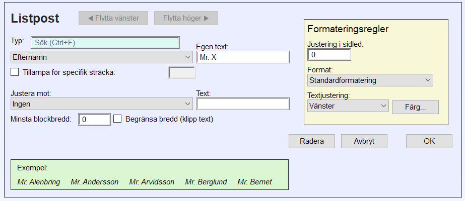
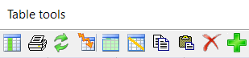
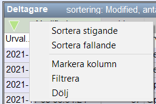

MeOS 4.0
MeOS – ett mycket enkelt orienteringssystem
MeOS hanterar de datafunktioner som behövs för små och stora orienteringsarrangemang och andra arrangemang med tidtagning. Ambitionen är enkelhet. Små arrangemang och träningar går att genomföra med några få inställningar.Större arrangemang är av naturen mindre enkla. Här är ambitionen snarare smidighet; det ska vara smidigt att utföra de – ibland komplicerade – uppgifter som ingår i större arrangemang.
MeOS bygger på öppen källkod. Det betyder att programmet är gratis att ladda ner och använda, och att den som är programmeringskunnig själv kan ändra det till att utföra precis det man behöver. Även om MeOS är gratis, så kostar det att underhålla och utveckla. Den som har nytta av MeOS och vill stödja utvecklingen får gärna bidra. Se programmets hemsida, www.melin.nu/meos.
Den här användarhandboken är organiserad så att grunderna presenteras först. Allt man behöver veta för att genomföra ett mindre arrangemang presentera i första avsnittet, mindre arrangemang.
Därefter följer ett avsnitt som heter hantera MeOS. Här beskrivs mer avancerade inställningar och funktioner. Nästa avsnitt handlar om MeOS i större sammanhang större arrangemang. Här beskrivs hur man kopplar upp MeOS i nätverk och hur man hanterar säkerhetskopior, ekonomi, fakturor och administrerar klubbar.
Sedan följer separata avsnitt om speakerstöd och lag, stafetter, gafflingar och flera lopp, där även hantering av patrulltävlingar ingår. MeOS stöder rogaining och även kombinationer av rogaining (poängorientering) och vanlig orientering i samma klass.
Slutligen beskrivs MeOS Eventorkoppling och tabelläget, som ofta är praktiskt när du vill ändra flera saker samtidigt, exempelvis tilldela status "ej start" utifrån en alfabetiskt sorterad lista.
MeOS döljer sidor och funktioner som inte är tillgängliga. Till exempel dyker inte sidan lag upp förrän det finns klasser där lag ingår. Vissa funktioner som bara behövs ibland, såsom stöd för flera etapper, patruller eller rogaining måste slås på manuellt, se MeOS funktioner.
Innehåll
- Allmänna råd och tips
- Mindre arrangemang
- Tidtagning utan banor och kontroller
- Tävlingsfunktioner
- Hantera MeOS
- MeOS funktioner
- Valbara extra datafält
- Spara, flytta och ta bort tävlingar
- Löpardatabasen
- Ranking
- Mer om listor
- Automatisk utskrift och filexport
- Publicera resultat på Internet
- Fjärrinmatning och radiotider från Internet
- MeOS informationsserver
- Direktanmälan via wifi
- Lokala inställningar
- Testa MeOS inför tävling
- Större arrangemang
- MeOS i nätverk
- Mer om klasser
- Avancerad lottning
- Seedad lottning
- Startgrupper
- Klubbar
- Ekonomi och fakturor
- Tävlingsinställningar
- Avstämning av hyrbrickor
- Fördefinierade hyrbrickor
- Slå ihop tävlingar / hantera sekretariat på flera platser
- Hantera flera tävlingar i en MeOS-tävling
- Säkerhetskopior och återställning
- Hantera flera etapper
- Speakerstöd
- Lag, stafetter, gafflingar och flera lopp
- Kval och final – knockout sprint
- Rogaining
- Redigera listor
- Resultatmoduler
- Appendix I: Eventorkoppling
- Appendix II: Tabelläge
- Appendix III: Mästerskap med kval och final
- Appendix IV: MeOS på Mac och Linux
Allmänna råd och tips
Här följer några allmänna råd för smidig användning av MeOS- MeOS är uppbyggt av att antal formulär som antingen är av typen egenskapsformulär för objekt (t.ex. namn, klass, bricknummer etc för en deltagare), eller är funktionsformulär som har inställningar för att utföra en viss uppgift (tilldela nummerlappar, exportera en fil, lotta, direktanmäl.)
- När du gör ändringar egenskapsformulär sparas ändringarna automatiskt om du går till en annan sida eller väljer en annan deltagare, klass etc. Du behöver alltså inte trycka på knappen spara, vilket är praktiskt när du gör många ändringar i följd. Knappen ångra återställer data till det senast sparade värdet.
- Funktionsformulär fungerar på liknande sätt, men har en utförandeknapp (t.ex. lotta), som du måste trycka på för att utföra uppgiften. Vanligtvis kan du istället trycka ENTER på tangentbordet. I en del andra program motsvaras dessa av dialogboxar.
- För att växla mellan formulärfält kan du använda TAB på tangentbordet.
- När du använder klubb- och löpardatabasen har fält där du matar in namn och klubb en autokompletteringsfunktion. Du får förslag i en lista på skärmen som matchar det du skrivit. Använd PIL UPP och PIL NER för att välja rätt förslag, och tryck sedan ENTER för att använda valet. Tryck på ESC för att bli av med valen.
- I MeOS har ändringar direkt effekt. Om du ändrar en stämpelkod kan alla deltagare plötsligt bli felstämplade utan att du får någon varning. Men du kan lika snabbt ändra tillbaka. Ifall en åtgärd inte enkelt kan ångras kommer MeOS att ge en varning innan åtgärden utförs.
- En grundfilosofi i MeOS är att åtgärder kan utföras i vilken ordning som helst (såvida det inte finns ett uppenbart beroende – lottning måste ju ske före start). Du kan börja med att läsa in brickor, sedan lägga in löpare, definiera banor och klasser, sätta ihop löparna i lag, och slutligen skriva ut stafettresultat. Just detta är väl inte så användbart, men det betyder att man inte är styrd till vissa arbetssätt eller procedurer. Och man kan oftast ändra sig senare utan att behöva börja om.
- Om du behöver göra många ändringar av liknande slag
kan tabelläget vara kraftfullt. Du kan filtrera och sortera kolumner,
och klippa ut och klistra in data från ett kalkylbladsprogram, såsom
Excel. En uppgift som kan lösas på detta sätt är flytta starttiderna i
en viss lottad klass 10 minuter framåt.
- Sortera tabellen efter klass.
- Markera starttiderna för aktuell klass.
- Kopiera, klistra in i Excel och räkna om tiderna.
- Kopiera de ändrade tiderna från Excel.
- Klistra in de ändrade starttiderna i MeOS. Det räcker att du selekterar den första rutan för klassen i kolumnen för starttider, så fyller MeOS på kolumnen nedåt.
Mindre arrangemang
Med ett litet arrangemang menas ett arrangemang där endast en dator används. En tumregel är att ett arrangemang med ungefär 100 deltagare går bra att köra med endast en dator. Men en viktigare faktor än antalet deltagare är egentligen hur tätt deltagarna förväntas gå i mål och hur mycket anmälningsändringar man måste klara av under tävlingen.MeOS kan användas huvudsakligen två sätt för små arrangemang. Antingen lägger man in deltagare, klasser och banor i förväg. Då kan man också lotta, göra startlistor, ta fram kvar-i-skogen, med mera.
Alternativt kan man låta MeOS bygga upp tävlingen varefter deltagarna går i mål; brickor knyts till deltagare genom löpardatabasen och klass bestäms utifrån vilka kontroller deltagaren varit vid. Den här formen är mest lämplig för träningar.
MeOS har ett robust system för att automatiskt ta regelbundna säkerhetskopior på den tävling du jobbar med. Lär mer här: säkerhetskopior och återställning.
Skapa en ny tävling
För att skapa en ny tävling väljer du Ny tävling på MeOS startsida. Du kan också hämta en tävling från Eventor.I formuläret fyller du i tävlingens namn, datum och första tillåta starttid. Välj därefter om du vill importera anmälda nu eller senare. Om du väljer att Importera anmälda får visas ett formulär där du kan direkt kan välja filer med anmälningsdata.
I nästa steg, eller om du väljer att inte importera anmälda, får du välja vilka av MeOS funktioner du vill använda. Genom att välja bort funktioner som inte används i tävlingen förenklas MeOS användargränssnitt. Du kan när som helst aktivera funktionalitet genom välja MeOS funktioner på sidan tävling.
- Individuell tävling alla funktioner som behövs för en individuell tävling
- Individuell, gafflat som individuell tävling, men med möjlighet till gafflade banor.
- Tävling med lag Lagtävlingar, exempelvis stafetter.
- Endast grundläggande endast grundläggande funktionalitet
- Alla funktioner Aktivera allt och dölj inga funktioner
- Välj från lista Här visas en detaljerad lista med funktioner som du kan aktivera eller avaktivera. För speciella arrangemang, som flerdagarstävlingar, tävlingar med flera lopp för samma löpare, patrulltävlingar, Rogaining/poängorientering, eller om du vill stänga av användning av klubb/löpardatabasen, är det här en lämplig ingång.
Förberedelsearbete
Om du ska förbereda arrangemanget på traditionellt sätt med föranmälda deltagare, startlistor och så vidare, är det här avsnittet viktigt. Här beskrivs hur man anmäler deltagare, skapar klasser och banor, lottar, samt hantering av hyrbrickor.På sidan listor finns funktionen kör kontroll inför tävlingen. Den tar fram en rapport över eventuella problem som finns i tävlingen och visar varje deltagares förväntade bana. Exempel på problem som kan upptäckas är deltagare utan starttid, bricka eller bana.
Anmäla deltagare
Om namn
MeOS har ett fält för deltagares namn. Beroende på arrangemangets art kan du mata in fullständigt namn, ett förnamn eller ett smeknamn. Fullständiga namn kan matas in på formen"Förnamn Efternamn [Efternamn 2]" (Alice Burman Björk),
eller kommaseparerat"Efternamn [Efternamn 2], Förnamn [Förnamn 2]", (Burman Björk, Alice Beda).
Det senare sättet är nödvändigt i de fall mer en två förnamn måste anges. Notera dock att formateringen av listor kan bli förändrad om mycket långa namn används; om det blir ett problem kanske du måste förkorta namnen genom initialer och liknande.I listor visar MeOS vanligtvis alla namn på formen "Förnamn Efternamn" oavsett hur de är inmatade; om du vill ha listor på annat sätt kan du göra dessa manuellt, se redigera listor. Om du föredrar att alltid se och mata in namn på formen Efternamn, Förnamn kan du sätta NameMode till 1 under lokala inställningar
Strukturerad import
Det rekommenderade sättet att anmäla deltagare är import av anmälningsdata. Använd standardiserade format i första hand IOF-XML version 3.0, men även äldre format som OE2003 CSV-format eller IOF-XML version 2.0.3 stöds, för att importera anmälningar. Eventor använder IOF-XML. MeOS skapar automatiskt klasser och klubbar som förekommer och klubbdata hämtas från klubbregistret. Välj anmälningar under importera tävlingsdata på sidan tävling. Även rankingdata kan importeras.Fri anmälningsimport
Om du inte har tillgång till anmälningsdata i ett standardiserat format kan du använda den fria anmälningsimporten. Välj fri anmälningsimport på sidan tävling. Här anger du namn, klubb, klass, SportIdent, och eventuellt starttid i klartext, förslagsvis kommaseparerat. Det är fördelaktigt att ange många deltagare på en gång. Ett exempel på data som kan importeras är:Johan Svensson, OK Linné, H21, 800605
Johanna Andersson, IF Thor, D70, 390101
Sven Johansson, IF Liten, H10, 37371
OK Linné
Johan Svensson, Lång, 800605
Sven Johansson, Kort, 37371
Johanna Andersson, Mellan, 390101
- Använd något av de format som föreslås ovan.
- Ange minst 5 deltagare, varje rad formaterad på samma sätt.
- Lägg in de klasser som används i förväg, eller undvik fantasifulla/påhittade klass- och klubbnamn. MeOS känner till ungefär alla klubbar som deltagit i svenska tävlingar.
- Det går att använda fri import för att importera till patrull- och stafettklasser. I detta fall är det dock nödvändigt att klasserna är inlagda i förväg för att MeOS ska veta hur många deltagare varje lag har.
Om klubb- och löpardatabasen är installerad kommer MeOS automatiskt att matcha löpare och klubbar mot den, och därefter komplettera anmälan med ytterligare uppgifter, t.ex. nationellt löpar-id och kontaktuppgifter för klubben.
Manuell inmatning
På sidan deltagare är det möjligt att lägga in nya deltagare. Klicka på ny deltagare, och fyll i relevanta uppgifter. Detta arbetssätt är dock opraktiskt om man ska anmäla fler än ett fåtal. Det förutsätter också att klasserna är redan är skapade; sidan är endast tillgänglig om det finns klasser.Anmälningsdata från Excel och andra tabellprogram
Om du har anmälningsdata i tabellformat i ett kalkylprogram, kan du använda tabelläget på sidan deltagare för att klistra in anmälningarna. Också i detta fall måste klasserna finnasEventor
MeOS har en Appendix I: Eventorkoppling, vilket gör att du direkt kan få in anmälningar i programmet.Direktanmälan
Ytterligare ett alternativ är direktanmälan, som är ett förenklat anmälningsformulär. Först måste du skapa klasserna och se till att rutan tillåt direktanmälan är markerad. Funktionen direktanmälan kommer du åt på sidan SportIdent. Välj anmälningsläge ut listan med funktioner. Du kan sedan välja Lås funktion för att undvika att läget ändras av misstag. Om du ansluter en SI-enhet kan du använda den för att läsa in bricknummer och om löparregistret är installerat används det för att identifiera löparna.Du kan ange hur många kartor/startplatser som är tillgängliga, antingen per bana eller per klass. När platserna tagit slut i en klass får operatören en varning om man försöker anmäla någon där.
Det går att skriva ut ett startbevis för direktanmälda deltagare. Markera kryssrutan startbevis och gör lämpliga skrivarinställningar. Du kan ange egna textrader som skrivs ut på varje deltagarbevis. (Det går också att skriva ut deltagarbeviset på sidan deltagare).
Om du har ett lokalt nätverk med wifi, är det också möjligt att låta deltagarna anmäla sig själva med sin telefon. Se direktanmälan via wifi.
Du kan kan ställa in vilka extra inmatningsfält (t.ex. födelsedatum eller telefon) som ska visas, se valbara extra datafält.
Löpardatabasen
Du kan använda löpardatabasen för att anmälda deltagare. Välj löpardatabasen på sidan tävling, och sedan personer. Tabellen visar samtliga löpare i registret. Dubbelklicka på + i kolumnen anmäl och välj en lämplig klass. Klicka på anmäl.Importera startlista
Du kan importera en startlista inklusive starttider i formatet IOF-XML 3.0.Skapa klasser
Klasser hanterar man på sidan klasser. För enklare arrangemang behöver visa avancerade funktioner inte vara markerat. Du får då sen en förenklad vy utan inställningar som bara behövs för större arrangemang.Flera banor / stafett beskrivs närmare i avsnittet om stafetter. För små arrangemang är de mest intressanta (på sidan flera banor) möjligheten att lägga upp en banpool. Det innebär att bana (gaffling inom klassen) och deltagare knyts ihop vid målgång och möjliggör gafflade banor utan att i förväg bestämma vem som springer vilken bana. Det är användbart vid gemensam start och liggande omärkta kartor.
En annan möjlighet (med flera banor) är att lägga upp en prolog med jaktstart.
- Om tillåt direktanmälan är markerad är det möjligt att anmäla till klassen via ett snabbformulär, med stöd av SI-enhet, på sidan SportIdent.
- Utan tidtagning innebär att deltagaren vid godkänt resultat får status utan tidtagning, och att tiden inte visas i listor eller exporteras.
Definiera banor
Banor lägger man in på sidan banor. En bana definieras genom ett namn och en kommaseparerad lista med kontroller (kontrollnummer). Normalt sätt är en kontrolls nummer samma som stämplingskoden. Men det går att ändra stämplingskoden på en kontroll i efterhand (till exempel vid felprogrammering), se avsnittet om kontroller.Man kan lägga upp banans längd, stigning och antal kartor. Den senare uppgiften används vid direktanmälan för att upplysa om hur många kartor som finns kvar. Men ingen av dessa uppgifter är nödvändiga.
Rutan använd första kontrollen som start betyder att första kontrollen på banan fungerar som en startenhet. Funktionen kan användas om man inte har en tillgång till en startenhet och vill ha startstämpling. Funktionen är också användbar om man i efterhand vill påbörja tidtagningen från en viss kontroll, t.ex. om en kontroll tidigt på banan försvunnit.
Rutan använd sista kontrollen som mål betyder att banans sista kontroll fungerar som målstämpling. Funktionen är användbar om man inte har tillgång till målenhet, eller vill låta vissa klasser slippa ett tungt upplopp mot målet. Funktionen kan också användas för att i efterhand avsluta tidtagningen i förtid, t.ex. om en kontroll i slutet av banan försvunnit.
På den här sidan kontrollerar man även inställningar för rogaining.
Importera banor
Det är också möjligt att importera banor från banläggningsprogrammens exportformat. Välj importera från fil. Markera Lägg till/uppdatera klasser för att få MeOS att försöka automatiskt knyta rätt bana till rätt klass och importera gafflingar. Välj istället skapa en klass för varje bana om filen inte innehåller information om klasser, men du ändå vill skapa klasser.Om den fil man importerar innehåller avstånd mellan kontroller, lagrar MeOS denna data och använder den t.ex. för att räkna ut km-tider på sträckor. Du kan redigera sträcklängderna manuellt genom att klicka på redigera sträcklängder.
MeOS kan även importera banor från ett enkelt textformat. En bana per rad, separera kontrollerna med komma. Det är tillåtet (med inte nödvändigt) att raden börjar med banans namn:
Kort bana, 34, 56, 77, 63, 100
Lång bana, 34, 37, 56, 57, 71, 77, 63, 100
Slingor med varvningskontroll
Om man har 5 slingor som kan tas i valfri ordning har man 120 möjliga gafflingsbanor, vilket är ganska jobbigt att mata in.MeOS lösning för denna situation är en möjlighet att mata in ett exempel på hur banan ser ut och ange varvningskontrollen. När en deltagare gått i mål skapar MeOS automatiskt en bana som matchar den faktiska ordningen på slingorna.
Skapa banan och mata in ett exempel på hur banan kan se ut, förslagsvis slingorna tagna i ordning ABCDE. Markera bana med slingor och ange vilken kontroll som är varvningskontroll.
Man kan också använda funktionen för gafflingar av typ fjäril.
Sträcktidsexport
När du exporterar sträcktider kan du välja om MeOS ska sortera looparna, så att alla ser ut att ha sprungit dem i samma ordning. Det fungerar bra när man vill jämföra sträcktider men mindre bra när man vill matcha med GPS-spår.Avkortning
Det går att kombinera loopar med avkortningar. Markera med avkortning och välj färre slingor som avkortad banvariant.Den här funktionen är främst tänkt för träningar och träningstävlingar, då MeOS inte kan kontrollera att deltagaren sprungit en viss ordning och inte hängt på någon annan.
Lottning
På sidan klasser finns funktionerna lotta/starttider och lotta flera klasser. I listan över klasser visas symbolen [S] efter klasser där alla deltagare har tilldelad starttid. Om starttiden är gemensam visas istället denna tid.Används startstämpling skrivs alltid den lottade starttiden över med den faktiska starttiden. Önskas inte startstämpling ska du inte tillhandahålla startenheter, eller använda klassinställningen ignorera startstämpling.
Lotta en klass
Funktionen lotta/starttider opererar endast på den valda klassen. När du väljer att lotta en klass får du välja metod.- Lottnig (MeOS) är MeOS förvalda lottningsmetod. Den försöker separere deltagare från samma klubb, samtidigt som varje deltagare har chans till varje starttid.
- Lottning innebär en godtycklig permutation, dvs en helt slumpmässig ordning.
- SOFT-lottning innebär att en metod som fanns beskriven i äldre versioner av de svenska tävlingsreglerna körs.
- Klungstart innebär att startfältet släpps iväg i småklungor av varierande storlek, och kan med fördel kombineras med gafflade banor för att träna stafett.
- Seedad lottning, se seedad lottning.
- Gemensam start innebär tilldelning av en starttid snarare än lottning. Även deltagare som anmäls senare kommer att tilldelas den angivna starttiden.
Fältet startintervall används som startmellanrum vid vanlig lottning. Vid klungstart är det istället under detta intervall som alla deltagare startar. Om du anger antal vakanser, lägger MeOS till så många vakanta startplatser till innan lottningen utförs (fanns det fler vakanser i klassen sedan tidigare, tas istället vakanser bort). Du kan välja om vakanserna ska fördelas lottat, eller placeras först eller sist.
Selektionslistan Sträcka används om man vill lotta startordning på en viss sträcka i en stafett, och visas endast om det finns sträckor. Fyller du i fältet nummerlappar tilldelar MeOS deltagarna nummerlappar, med den angivna numret som första nummer.
Under tillämpa parstart kan du välja att inte ha någon parstart (det vill säga individuell start), eller att deltagarna startar två och två eller i ännu större grupper. Vanligtvis kombineras detta med gaffling eller banpool.
Knappen lotta klassen utför lottningen på hela klassen. Knapparna ej lottade, före respektive ej lottade, efter, utför lottning endast på de deltagare som saknar starttid. Deltagarna placeras före respektive efter de redan lottade löparna.
Knappen radera starttider nollställer alla starttider i klassen.
Lotta flera klasser
Knappen lotta flera klasser tar dig till till en översiktssida för lottning. Här kan du fylla i första start och minsta startintervall, som är det minsta startmellanrummet inom en klass. Andel vakanser anges i procent. Metod anger vilken metod som ska användas för lottningen.Knappen automatisk lottning lottar allt som återstår att lotta helt automatiskt utifrån de inställningar du gjort. Om banorna är inlagda ser MeOS till att löpare som har samma inledning av banan inte startar samtidigt. I klasser där vissa starttider redan är tilldelade, används kryssrutan efteranmälda före ordinarie för att avgöra om efteranmälda ska sättas in före eller efter de redan lottade.
Gemensam start låter dig sätta en gemensam starttid för en eller flera klasser.
Se avancerad lottning för mer avancerade lottningsalternativ.
Lotta samma bana gemensamt
Om många klasser delar samma bana, kan man vilja lotta alla som springer en viss bana gemensamt. Startintervallet inom banan blir då jämnt, men inom en klass blir intervallen oregelbundna.För att åstadkomma den här sortens lottning kan du välja en bana på sidan Banor och sedan lotta starttider. Du anger första starttid, lottningsmetod, och intervall. Antalet vakanser avser antal vakanser per klass.
Du kan också nå liknande funktionalitet genom att markera alternativet lotta klasser med samma bana gemensamt under manuell lottning när du lottar flera klasser samtidigt.
Hyrbrickor och återanvändning av brickor
Hyrbrickor kan tilldelas på sidan SportIdent. Välj funktionen tilldela hyrbrickor. De deltagare som saknar bricka dyker upp i en lista, tillsammans med fält där man kan fylla i bricknummer. Om du har tillgång till en SI-enhet kan du använda den för att läsa in bricknummer. Du kan också interaktivt tilldela hyrbricka deltagare för deltagare, se knyta brickor till deltagare.- På sidan deltagare finns en kryssruta som anger om brickan är en hyrbricka.
- När löparen läser in sin hyrbricka kommer en påminnelse om att lämna tillbaka den.
MeOS tillåter att flera deltagare använder samma bricka. När den första deltagaren gått i mål och läst av brickan kan samma bricka tilldelas en ny deltagare. Däremot går det inte bra att tilldela flera deltagare samma bricka i förväg; då går det inte att säkert avgöra vem som sprungit med brickan först. Ett undantag för denna regel finns för lag, när sträckordningen avgör i vilken ordning brickan kommer att användas.
Genomföra arrangemanget
Här förklarar vi de viktigaste funktionerna som används under själva arrangemanget. Om du använder MeOS utan att förbereda arrangemanget är en del funktioner inte tillgängliga, till exempel startlistor och kvar-i-skogen.Brickavläsning
På sidan SportIdent läser du in SI-brickor när deltagaren gått i mål. Välj funktionen avläsning/radiotider. För att förhindra att oavsiktligt ändra funktion kan du trycka på lås funktion. Då måste funktionen aktivt låsas upp för att ändras.Innan SI-enheten kan användas måste den installeras och programmeras; speciellt måste vissa drivrutiner installeras på datorn om enheten är en USB-enhet. På SportIdents hemsida, www.sportident.se finns drivrutiner och instruktioner.
Utökat protokoll, som också ställs in med SportIdent Config+, rekommenderas då det ger en snabbare och säkrare avläsning.
Alternativet interaktiv inläsning innebär att MeOS ber dig fylla i data som fattas och behövs direkt vid inläsning. Om du inte föranmält några deltagare är det denna funktion som låter dig bygga upp tävlingen vartefter löparna går i mål.
Vid större arrangemang har man istället en röd utgång, dvs en avdelning av sekretariatet som tar hand om löpare med avläsningsproblem, och då bör inte interaktiv inläsning vara aktiv.
Löpardatabas och interaktiv inläsning
Alternativet använd löpardatabasen innebär att MeOS använder löpardatabasen för att para ihop deltagare och brickor. Om interaktiv inläsning också är aktiverad, försöker MeOS automatisera processen. Om en okänd bricka läses in, men brickan finns i löpardatabasen och banan i brickan matchar banan i en klass, anmäls denna deltagare i klassen automatiskt. Naturligtvis kan denna automatik gå fel – till exempel om brickan är utlånad. I så fall får man i efterhand gå in och byta namn på deltagaren.Avläsningsfönster
Knappen öppna avläsningsfönster öppnar ett nytt fönster där information (namn, klass, resultat m.m.) visas med stora bokstäver för den senast avlästa brickan. Om du har en extra skärm vid avläsningen som du vänder mot deltagaren, kan du maximera detta fönster på den skärmen. Det går förstås också att maximera fönstret på en enda skärm också, vilket fungerar bra om man har röd utgång och ändå skickar iväg alla deltagare med avläsningsproblem.Ljudåterkoppling
MeOS kan spela upp olika ljudsignaler beroende på utgången av brickavläsning (godkänd/inte godkänd/åtgärd krävs/ny ledare i klassen). Markera ljud för att aktivera denna funktion. Du kan styra vilka ljud som spelas och välja egna ljudfiler genom knappen ljudval.Avläsning i bakgrunden
MeOS klarar av att läsa in brickor i bakgrunden, samtidigt som man knappar in information om andra deltagare. Speciellt behöver inte sidan SportIdent vara aktiv, utan man kan istället visa resultatlistan, som automatiskt uppdateras vartefter löparna kommer i mål.De deltagare som kräver interaktion ställs i kö av programmet, om sidan SportIdent inte är aktiv. Blir kön lång riskerar dock operatören att bli stressad, så funktionen är bäst för små arrangemang.
Används inte interaktiv inläsning läggs okända inlästa brickor in som oparade. Se oparade brickor.
Manuell tidtagning
Om du kryssar för rutan manuell inmatning på sidan SportIdent får du upp en ruta där du pekar ut en deltagare genom att fylla i Nummerlapp, bricknummer eller namn.Om du skriver början på namnet och väntar ett ögonblick gör MeOS en sökning efter ett matchande namn i tävlingen, som dyker upp under. Är namnet rätt behöver du inte skriva mer.
Godkänna och diskvalificera deltagare
På sidan deltagare hanterar man felstämplingar och manuella korrigeringar av resultatet. Vill du godkänna en deltagare som saknar stämplingar måste dessa läggas till manuellt. Se avsnittet redigera stämplingar.När du väljer en deltagare som läst in en sin bricka kommer stämplingarna upp tillsammans med den förväntade banmallen. Extra stämplingar, det vill säga sådana som inte kunde matchas mot banmallen, visas längst ner. Saknas en stämpel visas en lucka. Även eventuell start- och målstämpling visas.
Deltagarens löptid styrs av fälten starttid och måltid. Om du manuellt vill sätta en viss löptid, är det dessa fält som måste justeras. Start- och måltid styrs i sin tur av startstämpling och målstämpling.
Finns en inläst bricka med målstämpling, går det alltså inte att att direkt tilldela en annan måltid. Istället måste tiden för målstämplingen ändras. Detsamma gäller startstämpling. Starttiden kan också bestämmas av klassen eller av en växlingstid ifall löparen springer stafett.
Status utan tidtagning betyder att MeOS inte presenterar deltagarens tider, i resultatlistor och motsvarande visas endast deltagarens status. Status utom tävlan betyder att tiden visas men ingen placering tilldelas och dessa löpare hamnar efter dem som tävlar i resultatlistan. Märk att dessa två statustillstånd kan sättas innan deltagaren gått i mål; deltagaren kan alltså vara utan tidtagning med ett resultat eller utan tidtagning och utan resultat.
Dessutom finns statustillståndet deltar ej. Det innebär att deltagaren filtreras bort från i stort sett samtliga listor och sammanställningar. I en tävling med flera etapper använder man denna status för löpare som inte deltar i en viss etapp.
Om en inläst bricka finns styr den status till viss del.
- Om en bricka är inläst som matchar banan och som har målstämpling, går det inte att sätta status okänd, ej start, återbud, felstämplad eller utgått. Däremot kan deltagaren diskvalificeras.
- Om den bricka som är inläst inte matchar banan, går det som tidigare nämnts inte att godkänna deltagaren utan att de saknade stämplingarna läggs till manuellt i brickan. Deltagaren får status utgått om måltid / målstämpling saknas.
- Finns måltid går det inte att sätta status utgått; måltiden måste alltså först tas bort.
Du kan använda kommentarer för att dokumentera varför en deltagare manuellt har godkänts eller diskvalificerats.
Redigera stämplingar
Det går att redigera en inläst bricka på sidan deltagare. För att ändra en stämpling, markera denna i listan stämplingar. I fältet tid kan du ändra tiden, välj sedan spara. Funktionen ta bort stämpling tar bort den markerade stämplingen. Även mål- och startstämplingar kan tas bort och redigeras.För att lägga till en saknad stämpling, markera den saknade kontrollen i banmallen längst till höger. Välj lägg till stämpling. Därefter är det möjligt att ändra tiden som vanligt.
Funktionen lägg till alla finns också och är praktisk om det saknas någon stämpling men man vill godkänna deltagaren.
MeOS håller reda på vilka stämplingar som är tillagda eller ändrade i efterhand. Du kan se vilka deltagare som har ändrad brickdata på under rapporter på sidan listor; listan dyker upp när den inte är tom. Den här funktionen gör det svårare (men inte omöjligt) att fuska genom att ändra data.
Sträcktidsutskrifter
Alternativet automatisk sträcktidsutskrift på sidan SportIdent betyder att MeOS skriver ut en sida med deltagarens sträcktider när en bricka lästs in. Utskriften kan ske på en vanlig skrivare eller på en kvittoskrivare. MeOS anpassar formatet på utskriften efter pappersformatet. Knappen Skrivarinställningar används för att ställa in utskriftsalternativ och skrivarinställningar.- Sträcktidslista låter dig välja en egen sträcktidslista. Valet automatisk väljer en anpassad lista av olika typ beroende på klass. Valet standard använder en inbyggd lista utan klassresultat. Övriga listor är antingen inbyggda eller egendefinierade. För en sådan lista kan du välja Redigera för att öppna listan (eller en kopia av en inbyggd lista) i Listredigeraren.
- Skrivare låter dig välja och konfigurera skrivaren.
- Egna textrader avser text som skrivs ut oförändrad rad för rad enligt den formatering du väljer. Du kan också infoga dynamiska/uträknade värden genom att ange en symbol inom hakparentes, t.ex. Att betala: [RunnerFee] (Vilket skulle kunna skrivas ut som Att betala: 50kr). Tillgängliga symboler finns i listan till höger.
- Det är möjligt att använda olika listor för sträcktidsutskrift i olika klasser. Då går du till tabellen för klasser, väljer att visa kolumnen Sträcktidslista, och gör inställningen per klass.
Om du använder en kvittoskrivare, var noggrann med att ställa in rätt pappersformat, t.ex. 72 mm x kvitto. Ibland är man tvungen att leta sig in bland avancerade egenskaper i utskriftsdialogen för att hitta denna inställning; det varierar med skrivarmodell och operativsystem. Om du har A4 inställt är symptomet vanligen att texten blir på tok för liten, som ett förminskat A4-blad.
Utskriften kommer att skalas så att texten får plats. Om du har ett mycket långt namn på tävlingen kan texten få bli för liten. Överväg i så fall att göra texten kortare eller använd en egen lista där du kan formatera eller radbryta vid behov.
Utskrift på standardskrivare
Om du vill skriva ut sträcktider på A4 eller liknande format, eventuellt med flera löpare per blad för att spara papper, markerar du sträcktider i kolumner. Du kan då också välja att samla flera löpare på ett papper och ange hur lång tid utskriften maximalt ska vänta. Överskrids tiden skrivs ett papper ut även om det antal löpare som angetts inte ännu uppnåtts.Start- och resultatlistor
På sidan listor finns bland annat start- och resultatlistor. Alla listor har knapparna skriv ut, pdf och webb, som skriver ut respektive sparar en PDF eller HTML-fil för webben. Läs mer om export till HTML/Webb.- Kopiera kopierar listan till urklipp, så du kan klistra in den i ett ordbehandlingsprogram eller kalkylbladsprogram.
- Eget fönster öppnar den egna listan i ett separat fönster som exempelvis kan flyttas till en extern skärm.
- Automatisera skapar en automat som skriver ut eller exporterar listan till fil med jämna mellanrum, se automatisk utskrift och filexport.
- Klassval öppnar ett separat fönster där du kan ändra vilka klasser som visas, sidbrytning mellan klasser, filtrering på ålder och listans rubrik.
- Utseende öppnar ett separat fönster med flera inställningar. Du kan ändra bakgrundsfärg och textfärg. Du kan också välja att visa listan i helskärm, se listor på helskärm.
- Kom ihåg listan sparar de listinställningar du gjort för denna lista, t.ex. om du valt de klasser som har nummerlapp vid start två. Du kan snabbt ta fram listan igen från sidan listor. Inställningen sparas i tävlingen och är tillgänglig för alla som öppnar den. Du kan slå ihop listan med en befintlig lista, vilket innebär att den ena listan visas direkt efter den andra.
- Återgå tar dig tillbaka till sidan med listval.
- Listorna i MeOS uppdateras direkt och automatiskt – om en lista visas när en bricka läses in uppdateras listan.
- I många listor går det att klicka på deltagarens namn för att direkt komma till deltagaren (eller laget).
- En lista som är sparad i tävlingen (genom kom ihåg) kan du komma åt överallt som en webbsida på det lokala nätverket genom att starta en informationsserver, se MeOS informationsserver.
Sträcktider och WinSplits
Från sidan tävling, exportera sträcktider, kan man exportera en fil med sträcktider som passar att ladda upp på WinSplits Online eller som resultat till Eventor. Filen sparas i som IOF-XML. Om tävlingen innehåller flera sträckor får du välja om du vill spara individuella resultat per sträcka, eller totalresultat.IOF XML-format i version 2.0.4 stöder inte patruller på något bra sätt. MeOS gör en fil som är speciellt anpassad för WinSplits, genom att missbruka standarden något. Mer precist skrivs den andra patrullmedlemmens namn in i fältet för klubbnamn.
WinSplits Pro kan användas för att visualisera resultat från MeOS medan arrangemanget pågår.
Kvar-i-skogen
På sidan deltagare hanterar du kvar-i-skogen. Välj kvar-i-skogen.Du får upp en lista med löpare som saknar registrering. Dessa löpare (eller snarare deras SI-pinne) har MeOS inte sett skymten av under tävlingen. Knappen sätt okända löpare utan registrering till ändrar status på dessa löpare till ej start.
Om alla löpare checkat, startstämplat eller liknande kan man läsa av dessa enheter (även kontroller och tömenheter kan läsas av). Då försvinner de löpare som har stämplat någonstans från listan ovan, och hamnar istället i listan Löpare, status okänd, med registrering. Dessa löpare är med viss sannolikhet kvar i skogen.
För att läsa in en enheters stämplingar används programmet SporIdent Config+, som tillhandahålls av SportIdent. Välj där att spara avläsningen i en semikolonseparerad fil (csv), och importera den till MeOS genom importera stämplingar.
Om du råkat trycka på knappen sätt okända löpare utan registrering till innan alla checkenheter (eller motsvarande) är inlästa, kommer för många löpare att få ej start. Om du därefter läser in ytterligare checkenheter, kommer sådana löpare upp i listan Löpare, status Ej Start, med registrering. Knappen återställ löpare återställer statusen för dessa löpare, så att de registreras som kvar-i-skogen.
På sidan listor finns en kvar-i-skogen-lista. Där listas alla deltagare som ännu inte kommit i mål, sorterade efter klass och starttid. Samma information kan naturligtvis utläsas även enligt ovan.
Flera lopp eller varv per deltagare
I vissa sammanhang får en deltagare springa valfritt antal lopp eller varv, kanske samma bana flera gånger eller olika banor, med samma bricka. Använd då funktionen flera starter per deltagare på sidan SportIdent.När en bricka som använts tidigare blir avläst, sker då en automatisk om-anmälan av samma deltagare, namnet med ett nummer efter. Klassen väljs automatiskt utifrån vilken bana finns i brickan. (För första loppet bestämmer man klass vid anmälan).
Om man gör en vanlig anmälan med denna bricka, blir den från och med då övertagen av denna nyanmälan, och den deltagaren har möjlighet att springa valfritt antal varv på samma sätt.
I resultatlistan presenteras loppen som oberoende individuella lopp. Önskas sammanlagda resultat, se lag, stafetter, gafflingar och flera lopp.
Individuell resultatrapport och resultatkiosker
Förutom vanliga resultatlistor kan MeOS kan ta fram en individuell resultatrapport för visning direkt på skärmen. Gå till sidan deltagare och välj rapportläge.Du kan välja deltagare ur en lista. Om du kryssar i rutan visa senast inlästa deltagare, kommer MeOS automatiskt att byta till den deltagare som senast läste in sin bricka på datorn. Man kan alltså ha denna vy öppen när man läser in brickor för att få en direktrapport.
När du har valt en deltagare visas en grafisk vy med alla kontroller där sträcktider, sträckplaceringar och missad tid framgår.
Knappen resultatkiosk sätter MeOS i ett läge där endast resultatrapporten går att nå. Man kan inte göra några ändringar i tävlingen, och det går inte att komma ur läget utan att starta om MeOS. Om du har kopplat in en SI-enhet, så kan den användas för att styra vilken deltagare som visas. Ut mot deltagarna går det alltså att endast visa en skärm och en SI-enhet. När deltagaren stämplar visas dennes rapport. Om du ger deltagarna tillgång till en resultatkiosk, bör du överväga att lösenordsskydda tävlingsdatabasen.
Om deltagaren ingår i ett lag visas hela laget. Även inrapporterade radiotider presenteras, så vyn (särskilt som resultatkiosk) kan användas för att låta kommande löpare följa laget inför växling. En möjlighet är att ha uppkopplade checkkontroller vid ingången till växlingsfållan, där lagets växlingstid och radiopasseringar visas när nästa löpare checkar.
Sträcktidsutskrift utan tävling
MeOS kan användas för att skriva ut sträcktider utan att någon tävling är öppnad.- Start MeOS
- Gå till sidan SportIdent och starta en avläsningsenhet.
- Knappen Sträcktidsutskrift används för att ställa in skrivaren och utskriften.
- Brickans innehåll visas direkt på skärmen, och skickas eventuellt till en skrivare. Löpardatabasen kan användas för att slå upp namn från bricknummer. Du kan också redigera namnet genom att klicka på nuvarande namn eller texten okänd.
- Du kan spara de utlästa brickorna i en semikolon separerad fil, eller välja att skapa tävling utifrån inlästa brickor.
Importera resultat
Du kan importera en genomförd tävling inklusive resultat till MeOS genom att exportera den med filformatet IOF-XML 3.0 i det system tävlingen är uppsatt i.Ett möjligt användningsområde är att hantera resultat skapade från GPS-spår, till exempel genom export från LiveLox. Resultat som skapas på detta vis är naturligtvis ungefärliga, men kan duga för träningstävlingar. Efter importen kan du redigera och komplettera resultaten, skapa en resultatlista, eller använda resultaten som underlag för en jaktstartslista.
Ett annat användningsområde är att ta fram totalresultat där vissa etapper inte är genomförda med MeOS.
Tidtagning utan banor och kontroller
Det går bra att använda MeOS för tidtagning i allmänhet, även utan en orienteringsbana med kontroller. Det går också bra att använda tekniska lösningar för tidtagning, exempelvis SportIdent, för elektronisk tidtagning och mellantider eller varvtider.- Skapa en ny tävling.
- När du ska välja funktioner i MeOS, välj endast tidtagning (utan banor). Detta motsvarar att funktionen tidtagning / utan banor i listan över MeOS funktioner. Den främsta effekten av denna inställning är att fliken banor och andra inställningar för banor döljs.
- Du kan fortfarande lägga till kontroller. Poängen med att ha (namngivna) kontroller för för vissa stämplingskoder, är att dessa kan visas i resultatlistor (för mellantider).
- Du kan använda funktionen Manuell tidtagning på sidan SportIdent, eller elektronisk tidagning.
- Om du använder elektronisk tidtagning, kan du aktivera Resultat vid måltstämpling på sidan klasser.
Varvräkning
MeOS kan räkna antal avklarade varv. Efter varje varv stämplar deltagaren en varvningskontroll och vid målgång stämplar man en målkontroll. Du kan använda det för en tävlingsform där det gäller att hinna så många varv som möjligt på en viss tid. Använd någon av listorna Varvräkning och Varvräkning med mellantid på sidan listor. Den senare varianten förutsätter att det sitter en kontroll för mellantid ute på varvet som den tävlande ska stämpla (utöver varvningskontrollen) för att registrera ett varv.Varvräkning – steg för steg
- Skapa en ny tävling
- Välj endast tidtagning (utan banor)
- Gå till sidan kontroller och definiera en varvningskontroll och ge den ett namn, t.ex. varvning.
- Programmera denna kontroll och ett mål (och töm och check och ev. start)
- Låt deltagarna stämpla varvningskontrollen efter varje varv. Observera att det måste gå åtminstone en minut mellan stämplingarna för att det ska räknas som ett varv. Detta för att inte en extra säkerhetsstämpling på samma varv ska räknas som ett nytt. Den här regeln kan modifieras till en längre eller kortare tid genom att ändra i resultatmodulen för varvningsresultat, se resultatmoduler.
- Det kan naturligtvis ändå vara lämpligt att placera en funktionär vid varvningskontrollen som ser till att alla stämplar och att man inte vänder tillbaka och stämplar en extra gång.
- Efter målstämpling och brickavläsning använder du listan Varvräkning under resultatlistor för att ta fram ett resultat baserat på antal varv.
Tävlingsfunktioner
Det här avsnittet dokumenterar funktioner i MeOS som kan användas för att utforma och anpassa tävlingen efter olika behov.Boka starttid
Om man vill låta deltagarna välja starttid, exempelvis för att underlätta för barnfamiljer, men ändå vill ha kontroll på att inte för många startar samtidigt och att inte två i samma klass eller med samma bana startar för nära varandra, finns funktionen boka starttid på sidan SportIdent.- Välj vilka klasser som kan boka starttid. Förvalda är de klasser där boka starttid är valt på sidan Klasser (Visa avancerade funktioner).
- Mata in grundinställningarna första starttid, sista starttid och startintervall. Fältet minsta tid till start är tiden till första möjliga starttiden. Det bör motsvara tiden som behövs för deltagarna att i god ordning ta sig från bokningen till startplatsen.
- Välj från flera förslag innebär att MeOS presenterar en lista med möjliga starttider för deltagaren. Deltagaren väljer vilken starttid som önskas (om den blivit upptagen sedan listan presenterades tilldelas man en annan tid i närheten). Alternativet är att MeOS tilldelar första möjliga starttid (med hänsyn tagen till minsta tid till start). Detta alternativ kan vara bra om startbokningen finns i anslutning till startplatsen. Om du låter deltagaren välja mellan förslag anger du hur tätt förslagen ska ligga (avstånd mellan förslag). För att inte överväldiga deltagaren med alternativ kommer MeOS att glesa ut förslagna tider något ju längre i framtiden de ligger.
- Välj vilka regler som ska gälla vid starttilldelning, t.ex. om deltagare i olika klasser med samma bana ska få starta samtidigt. Se dokumentationen för lottning för närmare förklaringar av valen. Ju striktare regler du sätter, desto svårare kan det bli att hitta en lämplig starttid, beroende på om stora klasser delar bana och så vidare. Se simulering nedan.
- För att styra hur många som maximalt får starta samtidigt (per startplats) anger du max antal parallellt startande. Gränsen inkluderar deltagare med lottat starttid, men (naturligtvis) inte dem med fri starttid.
MeOS visar nu en sida där deltagaren uppmanas stämpla för att välja eller tilldelas en starttid (om du inte aktiverat en SI-enhet uppmanas du att göra det). Det finns också ett manuellt läge där du kan välja en deltagare och skriva in en önskad starttid. MeOS kommer att tilldela en ledig tid i närheten av denna.
Välj startbevis och skrivarinställningar för att automatiskt skriva ut ett startbevis med den tilldelade tiden (bra för deltagaren och kan lämnas in i starten).
Om du använder en tjänst för liveresultat, kommer den tilldelade starttiden att synas där.
Kioskläge
Kommandot Aktivera kioskläge sätter MeOS i ett läge där endast funktionen startbokning är tillgänglig enligt de inställningar du gjort. Använd detta läge för att låta deltagare själva boka starttid. Enda sättet att komma ut kioskläget är att stänga och starta om MeOS.Om du använder en skärm med pekfunktion kan du låta deltagarna boka starttid genom att stämpla och sedan peka på önskad starttid på skärmen, vilket kan vara enklare än att klicka med en mus.
Simulering
För att testa om det inmatade startdjupet räcker till för det antal deltagare du har i olika klasser och de inställningar du har gjort, kan du genomföra en simulering. Välj simulering.Simuleringen fungerar så att alla deltagarna begär starttid vid en slumpmässig tidpunkt under startperioden, och MeOS försöker tilldela en starttid enligt angivna regler. Resultatet av simuleringen visar om alla fick få en starttid under angivet perioden och genomsnittlig väntetid för att få starta (jämfört med önskad tid) i de olika klasserna.
Simuleringen görs i en kopia av tävlingen, så den påverkas inte. När simuleringen är klar kan du välja att spara en kopia av tävlingen för att närmare analysera startlistorna och minutstartlistan.
Starta klass på signal
Om du vill sätta den gemensamma starttiden för en eller flera klasser när starten går (snarare än att i förväg bestämma starttiden och invänta den vid starten), kan du använda funktionen Start på signal.På sidan klasser, aktivera Visa avancerade funktioner. Välj Start på signal och kontrollera att datorns klocka går rätt. Välj vilka klasser du vill starta och klicka på sätt tiden när starten går.
Det är också möjligt att sätta reptid och omstartstid (för samtliga sträckor) genom denna funktion.
Vakanser, klassbyte och återbud
När man lottar en klass kan man välja att lotta in vakanser. För att tillsätta en vakans, gå till sidan deltagare och klicka på vakanser. Skriv in deltagarens uppgifter och klicka på den vakansplats du vill tillsätta i listan nedanför. Om du har tillgång till löpardatabasen hämtar MeOS löparen därifrån om du skriver in bricknumret.Du kan också använda en SI-enhet för att läsa in bricknummer. Starta SI-enheten som vanligt på sidan SportIdent och återgå därefter till vakanssidan.
Om inte lottar eller vill sätta in nya deltagare före första start, är poängen med vakanser inte så stor. Då kan du istället välja ny deltagare och därefter skriva in namn, klubb, bricknummer och eventuell starttid.
Deltagaren tilldelas automatiskt den anmälningsavgift som gäller i klassen vid tidpunkten för anmälan / vakanstillsättningen.
När en deltagare är vald på sidan deltagare finns två praktiska funktioner tillgängliga: klassbyte och återbud. Om du väljer återbud kommer löparen att förlora sin starttid, få status återbud och en ny vakans skapas på den starttid löparen hade. Om du väljer klassbyte får du istället upp en lista på tillgängliga vakanser. Genom att klicka på en vakans flyttas den valda löparen till den vakanta startplatsen och löparens tidigare plats blir vakant.
MeOS gör ingen justering av anmälningsavgifter, så gäller en ny anmälningsavgift eller ändringsavgift måste den ändras manuellt. Se ekonomi och fakturor.
Oparade brickor
En oparad bricka är en bricka som lästs in i MeOS, men som ännu inte parats ihop med en deltagare. Om du ändrar en deltagares bricknummer, och det finns en oparad bricka med det numret, knyts brickan automatiskt ihop med deltagaren.Knappen hantera brickor på sidan deltagare tar dig till en tabell med alla inlästa brickor. Genom att klicka på tabellrubriken bricka sorterar du på bricknummer och genom att klicka på tabellrubriken deltagare sorterar du på deltagare, se appendix II: Tabelläge. Funktionen urval används för att söka och filtrera. Om du klickar på ett bricknummer får du upp information om brickan och en lista med alla deltagare. Genom att markera en deltagare och välja para ihop knyts den valda brickan och deltagaren ihop. Väljer du istället sätt som oparad sparas brickan som oparad.
Oparade brickor kan tas bort, t.ex. brickor som lästs in av misstag eller som test.
Knyta brickor till deltagare
Om du interaktivt vill knyta deltagare med brickor, t.ex. vid incheckning till växling för en stafett, använder du funktionen tilldela hyrbrickor på sidan SportIdent och markera Interaktiv inläsning. Fyll i (eller använd en sträckkodsläsare) fältet nummerlapp, lopp-id, namn.- Om du anger början på namnet och väntar ett ögonblick, kommer MeOS att göra en sökning. Resultatet syns under inmatningsfältet. Har MeOS hittat rätt, behöver du inte skriva mer.
- Lopp-id är ett unikt id-nummer som tilldelas varje lopp. Du kan få ut alla lopp-id genom tabellen på sidan deltagare, och kan använda dem för att trycka motsvarande sträck-kod på nummerlappen. Det går också att definiera egna lopp-id, och skriva (klistra) in dem i tabellen. Vid tillsättning av vakanser eller byte av deltagare i lag, tar ersättaren över det tidigare id:t
Markera hyrd om den tilldelade brickan ska markeras som hyrd.
Om du har angett vilka brickor som är hyrbrickor, se fördefinierade hyrbrickor, finns alternativet automatisk hyrbrickshantering genom registrerade brickor. Då sätta hyrstatusen automatiskt från den fördefinierade listan.
Kontroller
MeOS hanterar oftast kontroller automatiskt, men du har möjlighet att manuellt göra vissa inställningar. På sidan kontroller listas alla kontroller som används. Varje kontroll har ett unikt id-nummer. Normalt är detta nummer samma som stämplingskoden, men stämplingskoden kan ändras i efterhand.Det är kontrollens id-nummer som man refererar till i en bana.
- OK betyder att kontrollen fungerar som vanligt; deltagaren är godkänd vid kontrollen då en av kontrollens kodsiffror är registrerade. Flera kodsiffror kan användas för att åstadkomma enkla gafflingar, eller för att byta ut en trasig kontroll.
- Multipel betyder att deltagaren måste ha passerat samtliga listade kontroller för att bli godkänd. Funktionen kan användas för att skapa bon där kontrollerna får tas i valfri ordning.
- Trasig innebär att kontrollen inte används alls; resultatet är det samma som om kontrollen togs bort från samtliga banor.
- Försvunnen innebär att kontrollen inte används alls och efterföljande kontroll på banan blir utan tidtagning. Löparen får alltså samma stämplingstid på efterföljande kontoroll som hen hade på föregående (det spelar alltså ingen roll hur länge man letade efter den försvunna kontrollen).
- Rogaining förklaras i avsnittet rogaining.
- Utan tidtagning betyder att MeOS bortser från tiden på sträckan till kontrollen (från föregående kontroll) när tiderna räknas ut. Utåt sett ser det ut som stämplingstiden på kontrollen är exakt samma som stämplingstiden på föregående kontroll. Totaltiden är också oberoende av löparens faktiska tid på sträckan.
- Valfri betyder att deltagaren kan välja att stämpla eller inte stämpla vid kontrollen. Valet påverkar inte slutresultatet, men om man stämplar får man en mellantid registrerad.
Minsta sträcktid innebär att ingen löpare kan få en tid på sträckan som är snabbare än den angivna tiden. Om löparen är snabbare kommer alla efterföljande tider att justeras upp. Funktionen kan användas t.ex. vid vägpassage om man vill låta alla löpare passera rättvist utan tidspress. Observera att tidsjusteringen inte kan göras förrän löparen gått i mål, varför radiotider kan bli något felaktiga.
Notera att de ändringar du gör på en kontroll får genomslag direkt; alla resultat räknas om och alla listor uppdateras.
Tabelläge och statistik
Under och efter tävlingen kan du för varje kontroll se tävlingsstatistik: hur många besökare kontrollen haft och hur stora bommar som gjorts.Om du väjer tabelläge, får du (bland annat) denna statistik i tabellformat. Du får veta antal besökare, maximal och genomsnittlig bomtid, samt median-bom-tiden. En positiv mediantid betyder att hälften av kontrollens besökare har missat den med åtminstone denna tid. För all kontrollstatistik har individuella extrema bomtider räknats bort då de kan antas bero mer på för deltagaren ovanliga omständigheter än på kontrollens svårighet.
Statistiken kan utgöra intressant återkoppling till banläggaren.
Avkortade banor
Förkortade banvarianter kan användas för att låta vissa deltagare springa en kortare bana i samma klass. Ett användningsområde är att låta löpare i en omstart ha en kortare bana. De som sprungit en kortare bana placeras automatiskt bakom alla dem som sprungit en längre variant. MeOS avgör automatiskt vilken banvariant som man har sprungit när löparbrickan läses av.- Lägg in den vanliga (långa) banan och den förkortade varianten som vanliga banor på sidan banor.
- Välj den vanliga banan och markera kryssrutan med avkortning.
- Välj den avkortade banvarianten. Om banan har slingor, kan du också låta avkortning ske genom att inte springa alla slingor.
Tidtagning med tiondelar
MeOS har stöd för att mäta tiden med tiondels sekunder som minsta tidsenhet. För att använda den funktionen måste du göra följande två ändringar:- Markera Aktivera stöd för tiondels sekunder på sidan tävling i MeOS. MeOS kommer då att lagra tiondels sekunder från radiostämplingar etc.
- Programmera SI-enheterna (start och mål) med Sprint 4ms aktiverat. Då lagras tiden med högre precision i brickan. För att få rättvis tidtagning vid viktigare tävlingar kan det också vara lämpligt att använda SIAC och radiobaserad mållinje.
Tider med tiondelar anges på formatet (HH:)MM:SS.t (t.ex. 17:23.2, 17 minuter, 23 sekunder och två tiondelar). Det är möjligt att manuellt mata in tider med tiondelar även om funktionerna ovan är avslagna.
Långa tävlingstider
MeOS kan hantera tävlingar som löper över flera dygn. För att stödja tävlingstider över 24 timmar måste du aktivera stöd för detta sidan tävling. Gör det om du väntar dig att någon tävlande är ute längre än 20 timmar.Endast SICard 6 och senare kan användas för långa tävlingar. Om och endast om sista målgång är inom 12 timmar från nolltiden kan äldre brickor användas.
För tävlingar med långa tävlingstider sätts nolltiden alltid till midnatt i början av tävlingens startdygn.
För att ange en tidpunkt för senare dygn än tävlingens nolltidpunkt används syntaxen 2D 14:00:00, vilket tolkas som kl 14:00 två dygn efter nolltiden (dvs 62 timmer efter nolltiden, som infaller 00:00:00 dygn noll). För tider som infaller samma dygn som nolltiden kan 0D uteslutas, dvs man kan skriva 14:00:00 istället för 0D 14:00:00.
- Det finns ingen begränsning för den totala tävlingstiden tävlingstiden. Däremot får tiden mellan två stämplingar inte vara längre än 22 timmar. Banorna måste alltså läggas så att denna gräns inte riskerar att överskridas av någon deltagare. Om gränsen överskrids garanterar inte MeOS att totaltiden blir rätt; den kan bli ett eller flera dygn för kort. Om så är fallet kan du manuellt justera tiden.
- Eftersom data från stämplingssystemet inte innehåller datum för varje stämpling gör MeOS vissa gissningar om vilket datum stämplingen utförts (därav 22-timmarsregelen ovan). För tider som inkommer från radiokontroller använder MeOS istället den mottagande datorns klocka och tidpunkten då stämplingen inkommer för att avgöra datum. Om stora fördröjningar sker i kommunikationen, eller om stämplingar läses in i efterhand, kan MeOS inte garantera att tiderna blir rätt.
Tidsjustering av start och mål
Det är möjligt att justera tiderna för enskilda start- och målenheter, t.ex. vid felprogrammering.För att identifiera enheten används enhetens programmerade kod. Se därför till att programmera alla start- och målenheter med olika koder; annars går de inte att skilja åt.
Om du aktiverar stöd för tiondels sekunder när du programmerar enheterna, sparas inte enhetens kod i brickan. (Istället sparas tiondelar). Därför går denna funktion inte att använda i det fallet.
Hantera MeOS
Det här avsnittet innehåller information om mer avancerade funktioner som kanske inte behövs för de enklaste arrangemangen.MeOS funktioner
När du skapar en ny tävling får du välja vilka av MeOS funktioner du vill använda. Genom att klicka MeOS Funktioner på sidan tävling kan du när som helst aktivera eller avaktivera funktionalitet.- Vissa funktioner kan inte avaktiveras när de används eller behövs för annan funktionalitet. T.ex. kräver hantering av ekonomi att klubbar används.
- Att stänga av en funktion påverkar aldrig tävlingen på annat sätt än att funktionen inte är aktiv. Om du matar in avgifter och stänger av Ekonomi och avgifter syns inte avgifterna och du kan inte skapa fakturor. Om du senare aktiverar funktionen igen är de värden du matat in fortfarande kvar.
Beskrivning av funktioner
- Förbereda startlistor Lottning och relaterade funktioner.
- Nummerlappar Hantering av nummerlappar.
- Klubbar Indela deltagarna i klubbar. Om MeOS används för tävlingar där klubbtillhörighet inte är relevant, t.ex., multisport eller prova-på, kan du stänga av klubbhanteringen.
- Redigera klubbar Används om du manuellt behöver hantera klubbarna, t.ex. slå ihop en klubb som lagts in två gånger med olika stavningar.
- Beräkna kvar-i-skogen Håll reda på vilka löpare som inte gått i mål.
- Flera MeOS-klienter i nätverk Använd en databas för att koppla ihop flera datorer.
- Använd speakerstöd Aktiverar sidan Speaker
- Flera etapper När du vill få ut totalresultat från flera tävlingar.
- Ekonomi och avgifter Tilldela avgifter och hantera fakturor.
- Vakanser och återbud Funktioner för att tilldela vakansplatser, hantera klassbyten och återbud i lottade individuella startlistor.
- Manuellt tidstillägg/justering Ger möjlighet att manuellt justera sluttiden, utan att ända tidpunkten för målgång.
- Klubb- och löpardatabas Använd uppgifter från databasen är att fylla i fullständig information om löpare. Avaktivera den här funktionen om den vanliga klubbindelningen inte används, t.ex. vid distriktsmatcher, landslagsdrabbningar, eller multisport.
- Gafflade individuella banor Kan vara både rättvisa (slingor) eller orättvisa (banpool, träning).
- Patruller Stöd för patruller med två eller flera deltagare (och en eller flera brickor).
- Stafetter och lagtävlingar Hantera klasser med flera sträckor, gafflingar, växlingar och jaktstart.
- Flera lopp för en löpare Låt samma deltagare springa flera lopp i samma stafett.
- Rogaining Poängorientering.
- Manuella poängavdrag/justeringar Manuell justering av poäng.
Valbara extra datafält
Formulären i MeOS innehåller ett antal fixerade datafält. Utöver det går det att lägga till extra datafält beroende på tävlingens behov. Detta stöds för sidorna deltagare, lag, klasser och dialogen för direktanmälan.Exempel på fält som kan läggas till är telefonnummer, födelsedatum och nationalitet.
Det finns också helt fria datafält, där du definierar både betydelse och värde. Textfält kan visas i listor, datafält kan visas i listor och användas i resultatberäkningar.
Du väljer vilka extra datafält som ska visas under tävlingsinställningar på sidan Tävling. Inbyggda datafält (såsom telefonnummer) aktiveras genom att markera motsvarande kryssruta. För de fria datafälten matar du också in en beskrivning av datafältet.
Kommentarer & anteckningar
Det går att lägga till kommentarer och anteckningar om deltagare och lag. Klicka på Kommenterar i formulärläget, skriv in texten och spara.Spara, flytta och ta bort tävlingar
Du kan flytta tävlingar mellan datorer genom att spara tävlingen som en fil och importera den på en annan dator.- Gå till sidan tävling och välj spara som fil. Hela tävlingen sparas som en fristående meosxml-fil.
- Starta MeOS på den dator du vill importera tävlingen, och välj importera tävling. Välj filen du sparade i föregående steg. Den sparade tävlingen öppnas som en ny tävling.
Om du jobbar mot en server och vill övergå till att jobba lokalt, sparar du tävlingen som en fil och importerar sedan denna på din lokala dator. Om du förbereder tävlingen hemma, kan du spara den som en fil, importera den på en dator som är ansluten till servern och välja ladda upp tävling på server, se MeOS i nätverk.
Det är ofta lämpligt att ge olika versioner av tävlingen olika kommentarer för att hålla isär dem, exempelvis enligt mönstret
- OL-träffen FÖRE
- OL-träffen LOTTAD
- OL-träffen RESULTAT
- OL-träffen TEST.
Varje MeOS-tävling som skapas har ett internt unikt id, som hjälper MeOS att hålla reda på olika versioner av tävlingen. När du importerar en tävling bevaras vanligtvis detta id. Det används till exempel för att ladda upp tävlingen på en server eller för att koppla ihop flera etapper. Om det redan finns en version av tävlingen kommer MeOS att fråga om du vill importera tävlingen som ytterligare en version av denna tävling, eller skapa ett nytt id. Om tävlingen ska användas som en mall för ett nytt tävlingstillfälle är det lämpligt att skapa ett nytt id, och inte importera tävlingen som ytterligare en version av mallen.
Löpardatabasen
Löpardatabasen består av en lista med löpare och en med klubbar. Du kan bygga en löpardatabas från distriktsregistret, som kan hämtas från Eventor, eller från något annat register. Registret från Eventor kan hämtas automatiskt, se Appendix I: Eventorkoppling.För att använda löpardatabasen måste funktionen klubb och löpardatas vara aktiverad under MeOS Funktioner.
- Tabellerna personer respektive klubbar kommer du åt med motsvarande knappar. Eventors personregister innehåller över 60 000 personer, så det kan ta några sekunder att visa upp tabellen första gången på en långsam dator. Från persontabellen går det att anmäla till aktuell tävling genom att dubbelklicka på +.
- Importera
används för att importera en databas från fil. En fil med klubbar och
en fil med löpare ska anges. Du kan välja om du vill tömma (nollställa)
MeOS databas först eller uppdatera den. Om du ska byta databaskälla,
t.ex. från svenska till norska Eventor rekommenderas starkt att du
tömmer databasen.
Registret du importerar måste vara i IOF-XML-format (version 2.0.4 eller 3.0). Löpardatabasen kompletteras också kontinuerligt med data från de tävlingar du kör i MeOS; MeOS lär sig alltså efterhand vem som brukar springa med vilken bricka. - Uppdatera använder Eventorkopplingen för att automatiskt hämta senaste registret via MeOS Eventorkopppling. Internetanslutning krävs.
- Exportera
exporterar löpardatabasen och alla MeOS inställningar till en mapp,
vilket är användbart om du vill ha samma inställningar på flera datorer.
Välj exportera och ange en destinationsmapp, till exempel på ett USB-minne.
För att installera löpardatabasen på en annan MeOS-dator, stäng alla tävlingar på denna dator och välj inställningar. Leta upp den mapp du exporterade löpardatabasen till enligt ovan, och välj installera. MeOS kan därefter behöva startas om. - Exportera personer och Exportera klubbar låter dig spara person- respektive klubbdatabasen i formatet IOF-XML (3.0).
- Töm databasen raderar samtliga klubbar och personer.
- Återgå tar dig åter till sidan tävling.
Använder du nätverksanslutning överförs löpardatabasen via nätverket. Du får alltså automatiskt samma databas på alla datorer som kopplar upp sig mot tävlingen. Du kan uppdatera databasen på servern genom att importera löpardatabasen medan du är uppkopplad mot servern, men andra datorer måste stänga tävlingen och öppna den igen för att använda den uppdaterade databasen. Se även MeOS i nätverk.
Ranking
Ranking kan användas för att dela klasser, för seedad lottning, och för klasstilldelning i kval-final-scheman. Det går också att ta med ranking i startlistan. MeOS stöder två olika rankingsystem.Ordningsbaserad
Ranking tilldelar varje löpare ett ordningstal, där den högst rankade har nummer 1, därefter nummer 2, och så vidare. Ange ordningsbaserat ranking genom att sätta ranking till ett positivt heltal. MeOS kan läsa in ordningsbaserad rankingdata från en CSV-fil med följande kolumner:Id; Förnamn; Efternamn; Nationalitet; Ordningsrakning; Poäng
Med ett kalkylbladsprogram kan du skapa en sådan fil från vilket rankingsystem som helst. MeOS kan även läsa in det gamla IOF-XML (v2) formatet med RankList.Poängbaserad
MeOS stöder även poängbaserad ranking. Rankingpoäng anges som ett decimaltal 3.23. Även om rankingpoängen är ett heltal ska det vid inmatning anges med [Unknown function b], för att inte förväxlas med ordningsbaserad tanking; alltså 1323.0 snarare än 1323.För poängbaserat ranking tolkar MeOS en högre poäng som bättre.
MeOS kan läsa in poängbaserad ranking från Score-attributet i IOF-XML (v3).
Mer om listor
Alla listor i MeOS uppdateras direkt, så fort tävlingsdata ändras. För att skapa en automatiskt utskrift eller export för webben kan du alltid klicka på knappen automatisera vid listan, se automatisk utskrift och filexport.Avancerade resultatlistor
På sidan listor, under rubriken resultatlistor, finns knappen avancerat som ger dig tillgång till mer specialiserade listor. Du kan också välja precis vilka klasser du vill generera en lista för. Nedan följer en kort beskrivning av olika möjligheter som inte redan beskrivits i avsnittet start- och resultatlistor. Observera att alla listor inte stöder alla alternativ.Lista med mellantider innebär att mellantider skrivs ut för namngivna kontroller (man kan förslagsvis döpa varvningskontrollen till varvning). Se avsnittet kontroller.
Valen från kontroll – till kontroll tar fram en resultatlista över en del av banan. Man kan t.ex. tänka sig en långdistansbana med en sprintdel med spurtpris på sprintdelen eller så vill man presentera resultat för en särdeles intressant långsträcka.
Du kan skapa en lista från start till en radiokontroll, för att få en resultatlista vid radion. För tiden vid kontrollen används mellantider på samma sätt som för speakersystemet. Listan allmänna resultat ger ofta en lämplig formatering.
Alla listor
Knappen alla listor ger dig systematisk tillgång till alla listtyper som finns tillgängliga i MeOS. Här följer in icke-komplett lista över listor:- Hyrbricksrapport
- Först-i-mål (klassvis), vilket innebär att först i mål vinner osv, oavsett starttid.
- Först-i-mål (gemensam), vilket innebär en sammanslagen lista för alla klasser, målgångordning.
- Prisutdelningslista, där det framgår hur många placeringar som redan är avgjorda i de olika klasserna respektive när de kommer att vara avgjorda.
- Minutstartlista
- Bantilldelning, där det det framgår vem som springer vilken bana.
- Rogaining, se rogaining
- Resultat per bana, resultat sorterat banvis istället för klassvis.
- Resultat banvis per klass. Resultat sorterat per gaffling för varje klass.
MeOS gör snabbknappar till de listor som förmodligen är mest relevanta för den tävlingstyp du har, så det är inte så ofta som du behöver gå in här och leta efter listor.
Sparade listor
Knappen kom ihåg listan, som visas tillsammans med en lista, sparar aktuella listinställningar i sparade listval på sidan listor. Där kan du visa, döpa om, och ta bort sparade listor. Du kan också slå ihop två listor, vilket innebär att de visas efter varandra. Om du väljer en lista som är en ihopslagning av flera listor, finns också valet att dela upp listan i sina komponenter.Egna listor
Redigera lista startar listredigeraren, som beskrivs i avsnittet redigera listor. Hantera egna listor tar dig till en vy där du kan hantera de egna listor som finns i tävlingen, egna listor som du kan installera, och låter dig bläddra efter och importera listor definierade på fil.Listor på helskärm
Knappen utseende för en lista öppnar ett fönster med inställningar. Under alternativet visning kan du välja fullskärm (sidvis) och fullskärm (rullande). Då visas listan på hela skärmen, vilket kan vara ett alternativ till pappersutskrifter.För sidvis visning kan du välja visningstid per sida (i millisekunder), hur många sidor som ska visas bredvid varandra på samma bild, hur mycket marginal du vill ha runt texten, samt om sidbytet ska animeras.
Export till HTML/Webb
Knappen webb låter dig exportera en lista till HTML-format. Du kan välja ett strukturerat eller formaterat webbdokument. Strukturerat innebär att listan byggs upp genom en (osynlig) tabell. Fördelen är att tabellstrukturen kan kopieras in i ett ordbehandlingsprogram och redigeras.Formaterat innebär att MeOS placerar ut textelementen på sidan genom att specificera placeringen för varje textelement. Dokumentet blir då mer exakt likt hur det ser ut i MeOS.
- Skalfaktor skalar textens storlek med en faktor
- Automatiskt omladdning instruerar webbläsaren att automatiskt ladda om sidan med detta intervall.
- Lagra inställningar om du inte har sparat listinställningarna tidigare (med knappen Kom ihåg listan) öppnas denna dialog och du kan spara listan med de aktuella inställningarna. Om du har sparat listan tidigare uppdateras istället de sparade inställningarna.
- Automatisera skapar en automat med den aktuella listan som regelbundet exporterar till HTML.
- Exportera låter dig välja en fil och exportera listan direkt.
Mallar
Utöver de inbyggda formaten kan mallar användas för export. Med MeOS installeras ett antal mallar, t.ex. sidor med kolumner. Med denna mall exporteras listan som ett antal kolumner på separata sidor som växlar med ett tidsintervall. När hela listan visats laddas data om. Denna mall kan vara lämplig om man vill visa listorna på TV-skärmar.För mallarna finns ett antal parametrar. Exakt hur dessa används beror delvis på mallen, det är inte säkert att alla är tillämpliga.
- Marginal styr hyr mycket vitt område som finns runt texten.
- Skalfaktor skalar textens storlek med en faktor
- Kolumner delar upp varje sida i ett antal kolumner. Hur många som är lämpligt beror på hur bred listan är och hur bred skärman är där den ska visas.
- Visningstid är en parameter till mallen som kan styra hur länge varje sida ska visas eller hur snabbt texten ska rulla.
- Begränsa antal rader per sida Sätter ett maxtak på hur många rader som får visas på en sida innan sidbrytning. Om mallen visar upp listan sida för sida bör denna justeras så att lagom mycket text visas på varje sida för den skärm man använder. Om du har aktiverat sidbrytning mellan klasser sker det också i HTML-export, och du får alltså en (minst) kolumn/sida per klass.
Du kan länka ihop flera listor, t.ex. startlistan och resultatlistan, genom funktionaliteten Kom ihåg listan. Om du exporterar HTML från en sådan lista och du har exakt lika många kolumner som antal länkade listor kommer MeOS att placera en lista i varje kolumn. På detta sätt kan man t.ex. få en kolumn med startlista och en med resultatlista på samma skärm. Eller ha damernas resultat i en kolumn till vänster och herrarnas i en kolumn till höger.
Om man inte styr kolumnerna på detta sätt kommer MeOS att försöka balansera dem så de blir ungefär lika stora.
Egna mallar
MeOS installeras med ett antal inbyggda mallar, som ligger som .template filer i MeOS installationskatalog. Den som är kunnig i HTML kan lätt redigera en sådan mall och spara den i MeOS datakatalog (Se Om MeOS på första sidan). På detta sätt är det möjligt att formatera listan i princip hur som helst och använda en egen grafisk profil. Var noga med att ange en unik tagg för varje mall. MeOS laddar om mallarna från fil när du trycker på webb, men inte för varje export.Automatisk utskrift och filexport
Automatisk resultatutskrift och export av filer för webben sköts i MeOS av automaten Resultat / export på sidan Automater.Ett smidigt sätt att skapa en automat för en viss lista är att använda knappen automatisera på respektive lista.
Du kan välja ett eget skript som MeOS kör efter varje export. Den här funktionen är användbar för exportera listor till webben.
Tidsintervall ställer in hur ofta utskriften / exporten görs.
Under listval finns väljer du vad listan ska innehålla och hur den formateras. Läs mer om i avsnittet om listor. Dessutom finns alternativet skriv endast ut ändrade sidor vilket innebär att endast sidor som inte skrivits ut tidigare skrivs ut.
Om du väljer att endast skriva ut ändrade sidor kan det hända att endast sidan två i en viss klass skrivs ut (om det bara är där det skett förändringar). Det innebär att den som anslår listor måste vara uppmärksam.
Om du startar om automaten glömmer MeOS bort vilka sidor den skrivit ut tidigare.
Exportera listor till webben
Automaten som exporterar listor i webbformat kan köra ett valfritt skript efter avslutad export. Det kan användas t.ex. till onlineresultat på nätet. (Se även publicera resultat på Internet). Här är ett exempel på hur man kan göra för att ladda upp filer via ftp:- Skapa en tom mapp, t.ex. c:\temp\meosexport.
- Kopiera skriptet nedan till filen send.bat, som du lägger mappen.
send.bat
REM Skicka filer till FTP server
date /T >> log.txt
time /T >> log.txt
ftp.exe -v -i -s:command.txt >> log.txt
- Skriptet kör kommandon från filen command.txt, som också ska skapas i samma mapp enligt nedan. Dessutom sparas information till en loggfil (log.txt).
command.txt
open ftp.minserver.se
myusername
mypassword
LITERAL PASV
cd upload/resultat
mput c:\temp\meosexport\*.htm*
close
bye
- Du måste ändra kommandona att ftp.minserver.se pekar ut din ftp-server, myusername är ditt användarnamn och mypassword är lösenordet. Skriptet kommer att ladda upp alla filer med efternamn .htm eller .html till katalogen upload/resultat på servern, så den raden måste du också ändra så att du får den katalog du vill att filerna ska laddas upp till.
- Du kan provköra skriptet genom att dubbelklicka på send.bat. Lägg en egen html-fil i c:\temp\meosexport och kontrollera att den laddas upp till servern som du tänkt.
- Ställ in automaten till att exportera listan till c:\temp\meosexport\resultat.html och att köra skriptet c:\temp\meosexport\send.bat.
- Kom ihåg att länka till de filer som laddas upp från din hemsida i förväg.
- Om du ska exportera flera filer, räcker det med att du kör skriptet från en av automaterna, förutsatt att alla automater exporterar till samma mapp.
- Det går naturligtvis att publicera startlistan live också, om det är många sena ändringar...
Publicera resultat på Internet
På sidan Automater finns Resultat online. Den här automaten kan exportera tävlingsdata i olika format, antingen till en fil eller automatiskt ladda upp dem till webben. För att skicka resultat till orientering.se/liveresultat, se MeOS resurser.Du kan spara denna automat i tävlingen för att snabbt kunna återstarta den vid behov. Använd knappen spara inställningar. Eventuella lösenord sparas inte i själva tävlingen men däremot på den dator du använder. Om du vill kan du ge automaten ett namn.
Formatet MeOS Online Protocol (MOP) skickar förändringar i tävlingen, mål, start och mellantider, på ett kompakt sätt. Version 2.0 av MOP är förbättrad och hanterar raderade deltagare effektivare och bör användas om mottagaren stöder det. Om du väljer att inkludera banor skickas detaljer om gafflingsalternativ för alla deltagare.
Detaljer i protokollet och exempelkod för att få igång en webbserver finns att ladda ner här: MeOS Resurser. Det går också att exportera resultaten i IOF-XML format, men filerna kan då bli ganska stora.
Alternativet Packa stora filer komprimerar stora filer i ett zip-arkiv.
Skicka till webben skickar filerna direkt till en webbserver. Tävlingens id-nummer och lösenord definieras av webbservern.
Spara på disk sparar filerna till en mapp på datorn. Ange ett filnamnsprefix. De sparade filerna numreras löpande och får filnamn: filnamnsprefix + löpnummer.xml. Skript att köra efter export är ett eget skript som anropas efter varje export. (Jämför Exportera listor till webben.)
Om du använder MOP och har en stabil internetuppkoppling kan du sätta tidsintervall till 0 (blankt). MeOS exporterar då direkt när en förändring sker.
Kontroller
Välj de kontroller som ska publiceras. Standardvalet är de kontroller som har ett definierat namn (se kontroller) eller där radiostämplingar har registrerats (antalet exporterade kontroller utökas automatiskt när stämplingar inkommer).Om internetuppkopplingen är långsam (har lång svarstid) kan uppladdningen av resultat ta tid. Därför kan det vara lämpligt att använda en dedikerad MeOS-klient för uppladdning för att inte blockera annan användning, det vill säga en MeOS-process som endast har denna uppgift. Det går att köra flera instanser av MeOS på samma dator, även om du får en varning om att snabb förhandsinformation är blockerad på alla klienter utom den först startade.
Fjärrinmatning och radiotider från Internet
Fjärrinmatning på sidan Automater låter dig hämta stämplingar och inlästa brickor från Internet. Ange adressen, URL, till webbservern som tillhandahåller inmatningen.Om Använd ROC-protokoll är markerat används protokollet Radio Online Control (ROC), annars används MeOS Input Protocol (MIP). Exempelkod för att sätta upp en MIP-server, där man kan mata in startnummer och kontrollnummer i ett webbformulär för att registrera en radiopassering, finns under MeOS Resurser. Om MIP används stöds även import av anmälningar via webben.
Tävlingens ID-nummer definieras av webbservern, och används för att hämta stämplingar från rätt tävling.
Kontrollmappning behöver endast anges om man vill ange att en viss kontrollkod man får in inte är en kontroll utan har en speciell funktion. (Utan mappning tolkas koden som en kontroll med denna kod.) Mata in kod och välj funktion: Du kan välja mellan start, check och mål.
Du kan spara denna automat i tävlingen för att snabbt kunna återstarta den vid behov. Använd knappen spara inställningar. Eventuella lösenord sparas inte i själva tävlingen men däremot på den dator du använder. Om du vill kan du ge automaten ett namn.
MeOS informationsserver
På sidan automater kan du starta MeOS inbyggda webbserver genom funktionen Informationsserver. Du kan välja vilken TCP-port MeOS ska använda.När servern startats får du upp en ruta med lite statistik och en webblänk som du kan använda för att testa servern.
Observera att du kan vara tvungen att tillåta trafik genom brandväggar på den angivna porten för att det ska fungera.
Funktionen mappa rotadressen skapar en snabblänk till en funktion eller sida som du definierar. Om du skriver enter mappas rotadressen till MeOS direktanmälan, det vill säga, http://datornamn:port/ leder till direkanmälan. Om man inte har någon annan webbserver på datorn kan man sätta porten till 80, som är standard för http. Då förenklas adressen för direktanmälan till http://datornamn/.
Om du designar en speciell lista visa upp listan i MeOS och tryck på Kom ihåg listan så blir den listan tillgänglig här, se export till HTML/Webb.
Efter länkarna följer dokumentation av MeOS-REST API, som är till för att hämta data direkt från MeOS till egna tillämpningar, exempelvis för att skapa resultatlistor för en TV-produktion.
Direktanmälan via wifi
Om du är kopplad till ett nätverk med tillgång till wifi-anslutning (det krävs alltså inte att datorn MeOS körs använder wifi), kan du låta deltagare anmäla sig själva genom att ansluta till nätverket med sin telefon, surfa till en angiven adress och mata in sina uppgifter. Har du installerat ett klubb- och löparregister används det för att förenkla inmatningen med automatisk namnuppslagning och bricknummer.Den här funktionen kan användas både vid små arrangemang och för att förkorta kön till direktanmälan.
Det är enklast att låta deltagarna ansluta till det lokala nätverket, och då är det inte nödvändigt att ha en uppkoppling mot Internet. Om det finns god internetteckning är det också möjligt att publicera tjänsten mot Internet så att skippa steget för deltagarna med att ansluta till ett lokalt wifi. Men detta kräver lite mer ingående kunskaper om nätverk.
Du kan ange vilket port MeOS ska använda. Om datorn inte har andra webbtjänster kan du ändra porten till 80, vilket är standard för http och därför förenklar adressen till tjänsten.
Funktionen mappa rotadressen skapar en snabblänk till en funktion eller sida som du definierar. Om du skriver enter mappas rotadressen till MeOS direktanmälan, det vill säga, http://datornamn:port/ leder till direkanmälan. Med port 80 förenklas adressen för direktanmälan till http://datornamn/.
För att deltagarna enkelt ska hitta till anmälan, kan du skapa en QR-kod som leder dem direkt rätt. Du kan till exempel använda https://sv.qr-code-generator.com/.
Det är klokt att uppmana deltagarna att koppla ner sig från nätverket när de är klara med anmälan för att frigöra resurser. Det kan också vara lämpligt att hindra användarna från att komma åt Internet via nätet, om inte kapaciteten är stor.
Överväg konsekvenser för nätverkets säkerhet om du släpper in deltagare. MeOS säkerhet är byggt för att hjälpa användare att göra rätt, men inte för att hindra illasinnade hackare. En säkerhetsåtgärd kan vara att begränsa vilka portar routern tillåter för kommunikation eller vilka datorer som en gäst får komma åt.
En annan möjlighet är att använda två routrar och sätta den som tillåter wifi på den interna routerns WAN-port. Då måste du använd vidarebefodring av port på den interna routern för att skicka förfrågningar till rätt dator. De som ansluter till wifi kan inte komma åt det interna nätverket i övrigt. Detta kräver förstås vissa kunskaper om nätverkinställningar.
Lokala inställningar
När du inte har någon tävling öppen, kan du ändra lokala inställningar för att ändra vissa grundläggande inställningar för MeOS. Egenskaper som kan ändras inkluderar:- AutoSaveTimeOut som anger hur ofta MeOS säkerhetskopierar tävlingen (i millisekunder)
- DirectPort som anger vilken nätverksport MeOS använder för direktkommunikation.
- SynchronizationTimeOut hur ofta MeOS frågar databasen efter uppdateringar, till exempel när listor visas.
- UseHourFormat anger om tider visas som HH:MM:SS eller MMM:SS.
- TextFont vilket typsnitt som används i MeOS.
- MaximumSpeakerDelay är den största fördröjning som tillåts i speakerstödet (i millisekunder). Vanligtvis går uppdateringarna mycket snabbare (se SynchronizationTimeOut), men om nätverket eller speakerdatorn börjar gå mycket långsamt, sänks automatiskt uppdateringshastigheten för att klienten inte ska bli helt blockerad. Den här parameters styr den övre gränsen för uppdateringsintervallet.
För att vissa inställningar ska ha effekt måste MeOS startas om. Alla inställningar lagras i filen meospref.xml i MeOS datakatalog. Om du vill återställa alla värden till standardvärdena kan du radera den filen när MeOS inte körs.
Testa MeOS inför tävling
Man bör testa datorer och nätverk och kontrollera att MeOS fungerar som du förväntar dig om du använder en tävlingsform som har specialfunktioner (som speciella regler för resultatuträkning eller regler för lag och växlingar).Automatisk simulering av brickavläsning och radiotider
För att underlätta testning finns automaten stämplingstest på sidan automater. Om du har tävlingen uppsatt med banor och starttider kan du använda den för att skicka in simulerad brickavläsningar med ett visst intervall.Du kan starta flera instanser av automaten eller köra den på flera datorer om du vill öka tempot i brickavläsningarna och stressa nätverket. Det är också möjlig att generera radiostämplingar för en viss kontroll.
Automaten har också en funktion för att skapa en testtävling med ett visst antal deltagare och klasser. Vill du använda en sådan tävling i ett nätverk, måste du först skapa den lokalt och sedan ladda upp den på servern som vanligt.
Manuell simulering av brickavläsning och radiotider
På sidan SportIdent kan du du välja porten testning och sedan aktivera. Då visas en panel där du kan mata in vilken data som ska finnas i en brickavläsning: check, start, måltid, antal stämplingar och deras nummer. Tiderna för kontrollerna lägger MeOS ut mellan start och mål. Tryck på Spara för att simulera en riktig brickavläsning.Med den här funktionen kan du simulera olika resultat på ett kontrollerat sätt.
Om du skriver in en bricka som används i tävlingen sätts stämpelkoderna så att de matchar brickan, och eventuellt starttid justeras. Du måste själv se till att ha tillräckligt antal stämplar.
Större arrangemang
MeOS kan inte bara användas till små arrangemang, utan även till fullstora tävlingar med tusentals deltagare. I det här avsnittet ges kompletterande dokumentation om funktioner som är användbara för större arrangemang. Vi förutsätter att du är bekant med hur man använder MeOS för mindre arrangemang.MeOS i nätverk
För att använda flera datorer med MeOS samtidigt med samma tävling, måste MeOS användas med databasanslutning. En dator måste agera som server. På denna dator installerar man MySQL-server. MeOS använder MySQL version 5.0 eller senare.Brandväggar kan ställa till olika problem. Det vanligaste symptomet är att det inte går att ansluta alls. Vad värre är, smarta brandväggar kan få för sig att analysera all trafik, vilket kan göra att nätverket fungerar men går extremt långsamt. Vi rekommenderar att du stänger av alla brandväggar inom nätverket, speciellt brandväggar på servern.
En klok åtgärd är då att låta bli att göra Internet tillgängligt över nätverket. Se till att endast den dator som behöver kommunicera med Internet har anslutning (och kanske också har en brandvägg).
När du har anslutit ges lite lite information om vilken server du anslutit till. Om du inte hade någon tävling öppen när du anslöt visas en lista över lokala tävlingar, det vill säga tävlingar som finns på din dator, och servertävlingar.
Välj en tävling i någon av listorna och klicka på öppna tävling.
För att lägga upp en tävling på servern öppnar du den först lokalt i MeOS. Kontrollera att du är ansluten mot rätt server (eller anslut mot rätt server) och välj ladda upp öppnad tävling på server på sidan databasanslutningar. Nu kan andra klienter ansluta mot servern och öppna tävlingen som du laddat upp.
Se till att du har en uppdaterad version av löpardatabasen på den dator du laddar upp tävlingen ifrån. Alla klienter som ansluter kommer att använda den databasen.
Se till att alla datorer kör mot servern.
Snabb förhandsinformation
Om du kryssar i rutan Skicka och ta emot snabb förhandsinformation om stämplingar och resultat kommer MeOS direkt att skicka ut information till hela nätverket så snart ett resultat ändras. Andra MeOS-datorer som lyssnar på denna information kan då uppdatera resultatlistor och speakerstöd direkt, utan att gå omvägen via databasen, vilket kan ge ett par sekunders fördröjning. Endast ett program på varje dator kan ta emot denna information. Även om MeOS inte tar emot förhandsinformationen så blir det rätt ändå när informationen blir tillgänglig i databasen.MeOS skickar Snabb förhandsinformation genom UDP sändning på det lokala nätverket. Varje MeOS-klient som startats på en dator kan sända, men endast den först startade klienten kan lyssna; du får ett felmeddelande när du ansluter mer än en klient enligt ovan.
Som standard använder MeOS port 21338, men det kan styras genom att ändra DirectPort, se lokala inställningar. Du behöver tillåta den här trafiken genom alla brandväggar. Om du ändrar standardvärdet, kontrollera att du använder samma värde på alla datorer.
Flera tävlingar kan köras samtidigt på samma nätverk och använda samma port utan att störa varandra. Detta fungerar så länge tävlingarnas id (i databasen) är olika, vilket garanteras om samma databas används av alla tävlingar.
Koppla ifrån databasen
Om du väljer koppla ner databasen när du har en servertävling öppen, får du en egen kopia av tävlingen, som döps till tävlingsnamn (lokal kopia från: servernamn). Den kopian bör endast användas som säkerhetskopia i nödfall, eftersom det inte är säkert att den är fullständig (det är en ögonblicksbild på den dator som kopplar ner). Normalt sett tar du en manuell säkerhetskopia genom funktionen säkerhetskopiera på sidan tävling.Installera MySQL
Att installera MySQL är inte mycket svårare än att installera vilket annat program som helst (dock finns det ingen svensk version). Du laddar ner ett installationsprogram som du kör och du kan i princip använda de förvalda standardalternativen i samtliga fall.Ladda ner senaste versionen av MySQL Community Server från Oracle. Här är en direktlänk (2019-05-14) http://dev.mysql.com/downloads/mysql/ till nerladdningssidan. När du har valt version blir uppmanad att skapa ett Oracle konto; detta är dock inte nödvändigt, längst ner på den sidan finns en länk till nerladdning utan konto. Du kan välja MySQL 8.0 eller en tidigare version t.ex. 5.7. MeOS drar inte fördel av att välja en senare version, så välj den som fungerar bäst för dig.
Instruktioner för äldre MySQL-versioner
- Kör installationsprogrammet. Godkänn lisensavtalet och välj sedan Typical installation. MySQL installeras nu, vilket tar en liten stund. Efter installationen följer lite reklam för betalversionen av MySQL, och slutligen får du ta ställning till om du vill konfigurera MySQL nu (Launch the MySQL Instance Configuration Wizard). Gör det.
- Konfigurera MySQL. Du kan välja Standard Configuration. Välj därefter Install as Windows Service och Launch Automatically.
- Om du istället vill göra en detaljerad konfiguration rekommenderas valen Developer Machine (om du inte räknar med fler än 20000 deltagare) och Non-Transactional Database Only. Därefter kan du specificera ungefär hur många MeOS-klienter du vill ansluta samtidigt (Number of concurrent connections). Aktivera TCP/IP och välj en port (standardvalet rekommenderas varmt).
- Nu kommer du till sidan Security options. Välj Modify Security Settings och skriv välj ett lösenord för rot-kontot. Om du endast ska använda MySQL till MeOS och liknande kan du använda rot-kontot och strunta i att skapa ett särskilt konto för MeOS. Då ska du markera Enable root access from remote machines och skriva in ett lösenord. I MeOS använder du sedan användarnamn root och det lösenord du angav.
- Stäng av eller konfigurera brandväggar inom nätverket.
- Testa att ansluta MeOS mot databasen. Förslagsvis provar du först på samma dator som du just installerade MySQL på. Då kan du ange localhost i fältet MySQL-server. På andra datorer måste du ange serverns namn i nätverket eller dess IP-adress (IPv4), som du kan ta reda på genom Visa status för anslutningen i Windows nätverks- och delningscenter (eller motsvarande).
Instruktion för MySQL 8.0
- Ladda ner MySQL Community Server version 8.0. Du blir tillfrågad om du vill skapa ett konto, men det är inte nödvändigt. Du kan välja “No thanks”.
- Välj ”web installer”. Installera “Server only”, “Standalone MySQL server”.Observera
Välj Legacy Authentication Method under installation. - Mata in ett “root account password”, och “add a user (user name and password)” för att använda från MeOS. Standardinställningarna fungerar. MySQL kan lägga till brandväggsregler automatiskt.
- Kom ihåg att konfigurera nätverket som privat (hemma/arbete) i Windows. Annars kommer du inte att komma åt datorn från nätverket.
Server- och nätverksproblem
Om MeOS tappar kontakt med servern får du ett meddelande om problemet. MeOS tillåter att du fortsätter arbeta med tävlingen eller läsa in brickor, och kommer att försöka återställa databasanslutningen i bakgrunden.När databasen återställts skickas de ändringar du gjort automatiskt till databasen, och blir tillgängliga för andra MeOS-användare. Det är alltså möjligt att klara ett kortvarigt strömavbrott med omstart av servern utan att avbryta arbetet med tävlingen på batteridrivna datorer.
Automatisk återanslutning bör användas med försiktighet, och endast om ni tror att servern kommer att bli tillgänglig igen – exempelvis om ni råkar ut för ett kortvarigt strömavbrott. Går servern inte att återställa kan ändringar gå förlorade.
Du kan används loggfilerna från utläsningen (see säkerhetskopior och återställning) för att manuellt föra över inlästa brickor från avläsningsdatorerna till en huvuddator.
Om du får meddelanden om databasfel kan du försöka reparera databasen. Se till att ingen annan klient är ansluten. Säkrast är att dra ur nätverkskablar fysiskt, eller stänga av routern/switchen. Öppna sidan med databasanslutningar i den enda MeOS-klient som fortfarande är ansluten. Välj Reparera vald tävling. Om reparationen lyckas bör det gå att öppna tävlingen och fortsätta som vanligt.
Om reparationen misslyckas eller inte hjälper, återstår att öppna en säkerhetskopia (see säkerhetskopior och återställning) och att ladda upp den på servern som en ny tävling. Se sedan till att alla klienter ansluter mot denna nya tävling.
Mer om klasser
Avsnittet skapa klasser behandlar klasser översiktligt. Fler inställningar blir möjliga om du checkar i visa avancerade funktioner på sidan klasser.- I fältet typ kan du definiera olika typer av klasser, till exempel elit, ungdom och öppen, eller någon annan godtycklig beskrivning. Du kan använda klasstypen för att manuellt tilldela olika klasstyper olika startavgifter.
- Startnamn är namn på starten, vanligen Start 1 och Start 2, men vilket namn som helst, exempelvis ett sponsornamn, är möjligt. Startnamnet skrivs ut i startlistan.
- Startblock används för att generera minutstartlistor. Om Start 1 har två ingångar, bör klasser som hör till den första använda startblock 1 och klasser som hör till den andra använda startblock 2. Man får ut en minutstartlista för varje startblock.
- Status kan du ändra om du vill stryka en hel klass. Med eller utan återbetalning påverkar om avgift tas med i fakturorna. Väljer du med återbetalning tas ingen avgift ut.
- Fri starttid innebär att MeOS inte lottar klassen vid automatisk lottning. Vid målgång används startstämplingen om den finns, oavsett denna inställning. Vill du inte ha startstämpling ska du inte tillhandahålla startenheter, eller stänga av startstämplingen.
- Ignorera startstämpling gör att starttiden inte uppdateras även om deltagaren har startstämplat. Funktionen är användbar om du vill låta deltagaren startstämpla utan att det påverkar tiden.
- Resultat vid målstämpling innebär att ingen brickavläsning behöver göras, utan att endast målstämpling behövs. Om klassen/deltagaren inte har tilldelats någon bana, kommer deltagaren att godkännas direkt vid målstämpling. Om en bana är knuten till deltagaren, kommer inregistrerade radiokontroller att användas som kontroller. Saknas någon kontroll blir statusen felstämplad. Om du ändå avläser deltagarens bricka ersätts radiostämplingarna med faktisk brickdata.
Snabbinställningar
Funktionen snabbinställningar tar dig till ett tabelliknande formulär där vissa inställningar kan ändras för alla klasser på en gång. Du kan ändra sorteringsordningen för klasser genom att ändra talet i rutan index; MeOS ordnar klasserna stigande efter detta nummer.Om du har aktiverat MeOS hantering av ekonomi och avgifter, kan du också ställa in anmälningsavgifter för varje klass. Avgift och sen avgift syftar på avgift och efteranmälningsavgift, ordinarie pris (för vuxna). Reducerad avgift och reducerad sen avgift är motsvarande avgift för unga och gamla (åldersgränser ställer du in på sidan tävling) som springer klassen. För klasser där alla deltagare tillhör samma priskategori behövs inte de sist nämnda fälten. När du sparar får du en fråga om du vill uppdatera avgiften för alla deltagare som redan är anmälda i klassen.
Om du har aktiverat MeOS hantering av nummerlappar, kan du göra nummerlappsinställningar för varje klass här. Inställningen kan vara:
- Manuell som betyder att MeOS inte automatiskt tilldelar nummerlappar.
- Löpande som betyder att klassens första nummerlapp följer efter sista nummerlappen i föregående klass, eventuellt med ett hopp: inställningen antal reserverade nummerlappsnummer mellan klasser.
- Ingen som betyder att MeOS tar bort nummerlappar från klassen.
- Du kan också ange ett tal (eller kombination bokstav-tal, som A100 eller 100-E), som används som första nummer i klassen.
Resultatuträkning
Om du vill att MeOS ska räkna ut resultat på klassen enligt anpassade regler kan du välja en resultatmodul i fältet resultatuträkning, vilket blir synligt om du visar avancerade funktioner. Reglerna kommer automatiskt att tillämpas på deltagarna eller lagen i resultatlistor, resultatexport, och speakerstöd. Exempel på tänkbara regler:- Tidstillägg istället för diskning vid felstämpling.
- Diskning om brickcheck inte genomförts inom ett visst tidsintervall innan start.
- Bonussekunder för sträckseger på vissa sträckor eller spurten.
- Tidshandikapp baserat på ålder eller deltagaranpassat värde (man kan t.ex. använda fältet InputPoints för individanpassade indata)
- En regel som inte ändrar resultatet men generar poäng, som kan användas för ett sammantaget resultat i en serie.
- En regel för lag som tar räknar ut summan av tiderna för de tre snabbaste eller tredje snabbast tid. En sådan regel kan används i en ungdomstävling så att ingen enskild löpare behöver känna rädsla att förstöra för laget.
Regler som förändrar sluttiden kan ge resultat som inte tycks passa ihop med sträcktiderna, eftersom dessa inte anpassas på samma sätt. Regler som förändrar sluttiden för ett stafettlag kan på samma sätt ge tider på sträckorna som inte passar ihop med resultatet. Ska lagtävlingen inte genomföras som stafett är det ofta naturligare att använda sträcktypen gruppera. Lagets deltagare kan då springa individuella lopp – till och med i olika klasser.
Funktioner
Funktionen nummerlappar används för att manuellt tilldela nummerlappar till en klass i de fall man inte gjort det i samband med lottning, eller använder snabbinställningarna för att hantera alla klasser. Man anger första nummer i klassen. Man kan också ta bort nummerlappar.Används direktanmälan i en klass där löpare har nummerlappar tilldelas nya anmälda automatiskt en nummerlapp – högsta nuvarande nummer i klassen plus ett.
Funktionen omstart används i stafettsammanhang, se avsnittet omstart. Radera vakanser tar bort alla kvarvarande vakanser från tävlingen (i alla klasser). Funktionen är lämplig att använda i slutskedet av en tävling, då den slutgiltiga resultatlistan ska bestämmas; vakanser med ej start gör ingen glad.
Dela klasser
Välj Dela klassen på sidan klasser. Du får välja en metod och antal klasser. Möjliga metoder är:- Klubbvis: deltagare från samma klubb placeras i samma klass.
- Slumpmässigt
- Ranking: samla de bäst rankade i en klass.
- Placering: de bäst placerade på tidigare etapp samlas i en klass.
- Tid: löptiden från tidigare etapp används för att samla de bästa i en klass.
- Jämna klasser, ranking: ranking används för att skapa jämngoda klasser.
- Jämna klasser, placering: placering på tidigare etapp används för skapa jämngoda klasser.
- Jämna klasser, tid: löptiden från tidigare etapp används för att skapa jämngoda klasser.
När du valt antal klasser får du också möjlighet att för varje klass bestämma hur många som deltagare eller lag som ska vara i varje klass. Observera att det angivna talet är ett riktvärde: om klubbtillhörighet, ranking eller resultat inte kan särskilja deltagarna hålls de alltid ihop i samma klass, även om det innebär att någon klass blir för stor.
Du kan själv justera fördelningen genom att i efterhand flytta deltagare mellan klasserna.
Avancerad lottning
Om du inte är nöjd med MeOS automatiska lottning kan du använda manuell lottning istället. Då får du full kontroll på alla lottningsparametrar, samtidigt som du får stöd av MeOS algoritmer för att fördela starttider mellan klasser för ett jämt flöde av startande och för att undvika att löpare med liknande banor startar samtidigt.Om du vill låta någon annan person (till exempel en banläggare) göra startfördelningen kan du exportera en CSV fil med lottningsinställningar. Den filen kan man öppna och redigera i ett kalkylbladsprogram (såsom Excel) utan att ha tillgång till MeOS. Sedan kan du läsa in samma format, och använda som underlag för lottningen. Läs mer om lottningsunderlaget här.
Använd funktionerna importera och exportera under lotta flera klasser. Du kan också exportera MeOS föreslagna fördelning att ha som utgångspunkt, när du har tryckt på fördela starttider under manuell lottning, se nedan.
Rutan max antal parallellt startande definierar hur många deltagare som tillåts starta samtidigt. Det är ofta bra att lotta en start i taget, även om det inte är nödvändigt. Rutan sätter taket för de klasser som denna lottningsoperation avser.
Om banorna är inlagda tar MeOS hänsyn till dessa så att deltagare i olika klasser med liknande bana inte startar samtidigt. Max antal gemensamma kontroller definierar hur många gemensamma kontroller personer som startar samtidigt tillåts ha inledningsvis. Inga betyder att alla som startar på samma minut har olika första kontroller. Om du har få olika första kontroller kan det hända att startdjupet med denna inställning blir för stort. Prova då inställningen första kontrollen. De innebär att första kontrollen (men inte dessutom andra) tillåts vara densamma. Det går också att välja ett ännu större tal här.
Tillåt samma bana inom basintervall (saxa banor) betyder att två klasser med samma bana tillåts starta omlott, vanligtvis så att den ena klassen startar på jämna minuter och den andra klassen på udda minuter.
Lotta klasser med samma bana gemensamt betyder att klasser med samma bana lottas som vore de en klass. Tidsintervallet för löpare inom banan blir konstant, men inom klasserna blir det variabelt. Se lotta samma bana gemensamt.
Basintervall är tidsavståndet mellan startpipen; vanligast är att ha en minut som basintervall. Minsta respektive största intervall i klass är det största respektive minsta startintervall som tillåts i någon klass. Vill du att alla klasser ska ha två minuters startintervall anger du två minuter i båda fälten. Att ändra denna inställning kan ibland ha ganska dramatisk effekt på startdjupet.
Andel vakanser anger hur många vakanser som ska lottas in i klassen i procent av antal anmälda. Du kan också sätta absoluta gränser i form av minimalt respektive maximalt antal vakanser för varje klass. Det är ofta praktiskt att ha lotta in åtminstone en vakans i varje klass, för att på ett smidigt sätt kunna hantera problem av olika slag, exempelvis felanmälningar. I ett senare skede kan du manuellt justera exakt antal vakanser för varje klass.
Förväntad andel efteranmälda anger hur mycket utrymme MeOS avsätter före eller efter klassen för efteranmälda. Det är ingen hård gräns, men om fler efteranmäls finns inte längre någon garanti att löpare med samma bana inte startar samtidigt.
Om du lottar efteranmälda tillsammans med ordinarie anmälda ska du sätta detta fält till 0 för att få ett mer kompakt startfält. Om du vill att efteranmälda ska starta först, bör du sätta ett väl genomtänkt värde.
Förslaget presenteras i en lista tillsammans med lite statistik. Du kan se för varje minut hur många som startar, det faktiska startdjupet och det teoretiskt kortast möjliga startdjup med de inställningar som gäller. Knappen visualisera startfältet öppnar ett fönster med en grafisk sammanställning över vilken klass som startar vilken minut.
Du kan själv göra ändringar i fördelningen. Det går att ändra första starttid, startintervall, antal vakanser och antal reserverade platser (för efteranmälda) i varje klass. MeOS färgkodar dina ändringar så att du kan se vad du har matat in och vad MeOS har föreslagit. Om du uppdaterar fördelningen ändrar MeOS inte de fält du har låst genom att sätta ett specifikt värde. Knappen uppdatera fördelning kör om MeOS fördelningsalgoritm för de klasser du inte ändrat, med hänsyn taget till de ändringar du gjort.
Du kan också välja att ändra inställningar, för att göra om fördelningen med nya grundparametrar.
Klicka på utför lottning för att lotta med vald metod.
Knappen spara starttider sparar aktuella starttider och intervall för varje klass, så att du kan fortsätta med lottningen senare. När du lottar sparas också inställningarna automatiskt. Använd knappen hämta inställningar från föregående lottning för att återgå till tidigare sparade inställningar.
Lotta in efteranmälda
Du kan lotta in efteranmälda i de valda klasserna genom knapparna efteranmälda (före ordinarie) respektive efteranmälda (efter ordinarie). För att denna funktion ska fungera måste alla valda klasser redan ha anmälda med tilldelade starttider.Exportera och importera lottningsunderlag
Filen som exporteras innehåller en rubrikrad följt av dessa sju kolumner, en rad för varje klass.1; H21E; 35; A1; 79; 07:01:00; 2:00; 1
2; H20E; 17; A2; 81; 08:03:00; 2:00; 1
3; H18E; 22; A4; 31; 07:30:00; 2:00; 1
4; D21E; 27; A2; 81; 07:01:00; 2:00; 1
9; H85; 3; B14; 71; 07:13:00; 2:00; 1
När MeOS läser en fil i motsvarande format ignoreras kolumn 2, 3 och 4; för en klass importeras starttid, internvall och vakanser från kolumn 5, 6 och 7. För att hitta rätt klass används i första hand klassens id, men om rätt klass inte hittas matchas istället klassnamnet. Filen som importeras måste innehålla minst 7 kolumner, men får innehåller fler. Dessa ignoreras.
Fältet reserverat, som används för att reservera extra platser i MeOS egna lottningsalgoritm, exporteras inte eftersom det inte har någon effekt på lottningen när de andra tre parametrarna är fixerade.
Seedad lottning
Seedad lottning används när du helt eller delvis vill låta yttre parametrar, såsom ranking eller resultat från tidigare etapper, styra lottningen. Välj lotta/starttider på sidan klasser, och välj metod seedad.Först måste du välja en källa till seedningen. Valen resultat, tid, och poäng bygger på att det finns resultat från en tidigare etapp. Det går också att sätta in dessa data manuellt genom att skriva in dem (eller klistra in från Excel eller liknande) i tabellkolumnerna placering in, tid in eller poäng in i tabelläget på sidan deltagare. Valet ranking bygger istället på att rankingdata är importerad, se ranking. Icke rankade löpare i klassen placeras efter alla rankade löpare.
Sedan måste du definiera seedningsgrupperna. Du kan ange ett tal, vilket innebär att hela klassen delas in i ett antal grupper av denna storlek. Talet 1 innebär alltså att varje deltagare hamnar i sin egen seedningsgrupp, och lottningsmomentet i princip uteblir (viss lottning kan ändå ske i de fall seedningsdata sammanfaller för flera deltagare).
Du kan också lista gruppstorlekarna. Om du anger 15, 1000 får du en seedad grupp med 15 deltagare och resten lottas som vanligt.
Du kan hindra att deltagare från samma klubb startar på angränsande tider genom att markera motsvarande kryssruta. Om seedningen gör att två deltagare hamnar på angränsande starttid, kommer den sämst seedade att flyttas neråt tills krocken är löst. Om klassen har extremt många deltagare från samma klubb är det förstås inte säkert att villkoret kan uppfyllas. MeOS skapar då en startordning i alla fall.
Vanligtvis får de bäst seedade starta sist, men om du vill vända på ordningen mellan seedningsgrupperna markerar du Låt de bästa start först.
Tillämpa parstart innebär att deltagarna startar två och två.
Markera tilldela nummerlappar och ange klassens första nummerlappsnummer för att tilldela nummerlappar.
Se även: Dela klasser och ranking.
Startgrupper
Startgrupper används för att ange att vissa löpare önskar starta inom ett visst tidsintervall eller för att gruppera löpare, så att löpare från samma klubb startar ungefär samtidigt. Det är alltså möjligt att antingen (i samband med anmälan) låta löparna önska startgrupp, eller automatiskt tilldela startgrupp beroende på klubbtillhörighet. Det är också möjligt att ha en blandning; vissa löpare önskar en startgrupp och övriga får en tilldelad.Man kan manuellt definiera startgrupper genom startgrupper på sidan klasser. Varje startgrupp behöver ett Id (som är ett positivt heltal) och ett tidsintervall. Alla startgrupper måste vara lika långa, men det finns inget krav på att de ska sitta ihop. Man kan ha en grupp på förmiddagen, en på eftermiddagen och en på kvällen. Vanlig längd är en halvtimme eller en timme.
För att ange att en deltagare önskar en viss startgrupp ska fältet startgrupp i tabelläget för deltagare sättas till startgruppens Id. Det är också möjligt att ange att två deltagare önskar samma (men inte angiven) startgrupp genom att sätta fältet familj till ett samma positiva heltal (varje familj behöver ett eget unikt familjenummer).
Som ett alternativ kan man också i tabelläget för klubbar definiera en startgrupp, som används för alla medlemmar som inte uttryckligen angett en annan startgrupp.
Önskad startgrupp kan importeras genom IOF-XML service requests, se importera startgrupper.
Importera startgrupper
Det går att importera startgrupper som IOF-XML services (tjänster). Namnet på tjänsten ska innehålla två tidpunkter för att tolkas om en startgrupp, t.ex. "Start mellan 10:00 och 11:00". Du kan inspektera importen under startgrupper på sidan klasser.När startgrupperna är importera går det att importera IOF-XML service requests (tjänstebeställningar). När en tjänst med ett Id som matchar en definierad startgrupp beställs, tilldelas motsvarande startgrupp deltagaren.
Om du använder Eventor kan du definiera tjänsterna i anmälningssystemet. Sedan måste du manuellt ladda ner filerna med tjänsterna och tjänstebeställningar, och importera dem i MeOS
Om tjänsten startgrupp importeras för en deltagare som ännu inte är anmäld (importerad till MeOS), skapas deltagaren utan klass. Om någon beställt tjänsten utan att anmäla sig ger MeOS en varning, och de kan tas bort (görs enklast i tabelläget).
Lotta med startgrupper
När startgrupper är definierade kommer lottningen att fungera annorlunda. Om du väljer en viss klass och lotta/starttider finns alternativet lotta med startgrupper som tar hänsyn till startgrupperna vid lottning (fältet första start används inte). Funktionen lotta klassen fungerar som vanligt och struntar i startgrupperna; det är enda möjligheten att lotta en viss klass utan startgrupper.Funktionerna under lotta flera klasser fungerar också annorlunda. Automatisk lottning försöker uppskatta antal parallellt startande som krävs för deltagarna ska få plats i sina startgrupper. Med manuell lottning får du större kontroll över antalet parallellt startande och hur lika banorna får vara för deltagare som startar samtidigt. Du kan också styra om löpare som inte får plats i startgrupperna ska flyttas till andra grupper (hänsyn tas till anmälningsdatum, de sist anmälda får byta grupp i första hand). Alternativet är att gruppens tidsintervall växer och knuffar efterkommande grupper framåt.
Det är ganska svårt att göra en bra fördelning mellan klasser och löpare så att önskemål uppfylls och inte för många i en viss klass (och klubb) samlas inom samma intervall. Även om en viss startgrupp inte är full, så kan platserna för en viss klass (eller bana, eller första kontroll) ta slut. MeOS försöker lägga ut klasserna så att löpare med samma första kontroller inte startar samtidigt; vid manuell lottning kan man styra hur många inledande gemensamma kontroller som tillåts.
För att göra det lättare för MeOS att göra en bra fördelning ställs krav på banläggningen:
- Klasser som förväntas vara ganska stora ska inte dela bana (endast klasser med färre än 2-3 procent av de totala antalet deltagare bör dela bana)
- Det är viktigt med ett stort antal olika första kontroller, även om det för den enskilda banan inte är orienteringstekniskt motiverat.
Klubbar
På sidan klubbar hanterar man administrativa saker kring deltagande klubbar. För att komma åt den här sidan måste hantera klubbar och ekonomi vara markerat på sidan tävling.Funktionen ta bort / slå ihop används för att ta bort en klubb och flytta klubbens deltagare till en annan klubb. Det är användbart om en felaktig klubb uppstår, till exempel genom felstavning.
Tag exemplet IF Thor. Av misstag råkar någon anmäla några deltagare i IF Tohr. För att slippa gå in och ändra klubb på alla deltagare i Tohr, kan man markera IF Tohr i listan och välja ta bort / slå ihop. En ny lista kommer då upp, och där markerar man IF Thor och väljer slå ihop. För att undvika misstag får man också upp en kontrollista över de deltagare som påverkas.
Antag att klubbregistret innehåller klubbarna OK Linné och Linköpings OK och du anmäler en löpare "Linne OK" en i "OK Linköping". MeOS kommer automatiskt att ändra klubbnamn till dem som finns i klubbregistret, och hämta övriga kontaktuppgifter därifrån. Om du verkligen vill skapa en klubb som heter Linne OK, kan du göra detta på sidan klubbar.
Ekonomi och fakturor
MeOS kan skapa fakturor och en ekonomisk sammanställning för hela tävlingen. Fakturorna sammanställs från fälten brickhyra, anmälningsavgift och betalat, som varje deltagare har (Se sidan deltagare med tabelläge). I vissa formulär kan man kryssa för hyrbricka, och då sätts hyravgiften till den avgift man ställt in under tävlingsinställningar.Där finns även kontaktuppgifter för arrangören, kontonummer med mera, som behövs för att skapa fakturorna.
Automatiskt hantering av anmälningsavgifter
I tävlingen kan du definiera standardavgifter och avgiftshöjningar (i procent) för klasser. I varje klass kan du sedan justera avgifterna som räknats ut från tävlingen (vid behov). Varje deltagare och lag får i sin tur en standardavgift uträknad från klassen och anmälningsdatum. Men du kan (vid behov) justera avgiften för enskilda deltagare och lag.
- På sidan tävling kan man mata in ordinarie avgift för ungdomsklasser, vanliga klasser och elitklasser. Dessutom kan man mata in ett sista datum för ordinarie anmälan och en avgiftshöjning för efteranmälan i procent.
- Det är även möjligt att sätta ytterligare ett stoppdatum och avgiftshöjning. Den högre avgiften tas ut från och med detta datum, så använd tävlingsdagen för att tillämpa en högra avgift vid direktanmälan.
- När du själv skapar en ny klass får fälten anmälninsavgift och efteranmälningsavgift värden enligt tävlingsinställningarna och beroende på klasstyp. Dessutom finns fält för reducerad avgift, som används för unga och gamla. Åldersgränserna ställer du in under tävlingsinställningarna.
- Om du importerar klasser från Eventor kan klassen innehålla information om avgifter, och då används denna information istället.
- När deltagare anmäls, tilldelas de automatiskt en avgift utifrån klassens inställningar (ovan), anmälningsdatum och deltagarens ålder.
- I klasser där avgiften beror på deltagarens ålder, till exempel i samband med direktanmälan, måste du vara uppmärksam så att rätt avgift används.
- Om du ändrar avgifter under tävlingsinställningar, får du välja om du vill uppdatera avgiften för alla deltagare och klasser. Om du ändrar avgift för en klass (snabbinställningar, sidan klasser), får du välja om du vill uppdatera avgiften för klassens deltagare.
Kontroll av anmälningsavgifter
Rapporten oväntade anmälningsavgifter på sidan listor jämför den automatiskt uträknade avgiften med den faktiskt definierade avgiften för varje deltagare. Om det inte stämmer visas deltagarens namn, klubb, klass (och ålder), förväntad avgift och faktisk avgift. Detta kan vara användbart för att kontrollera avgifterna.Kräv betalning före start
Om man har deltagare från utländska klubbar som man inte kan fakturera, eller klubblösa deltagare, kan man vilja att avgiften ska betalas på plats innan start. Välj ekonomi för deltagaren och markera kryssrutan kräv betalning innan resultatet godkänns. Hen kommer inte att få ett godkänt resultat innan betalningen registrerats i MeOS, och man påminns om att betala vid eventuell brickavläsning.Tilldela anmälningsavgifter manuellt
Om du inte har matat in eller fått in alla anmälningsavgifter i samband med anmälan, finns ett verktyg för att tilldela anmälningsavgifter i efterhand. Verktyget finns på sidan klubbar under avgifter. Här kan man välja en klasstyp, en undre datumgräns, en övre datumgräns, och om du vill filtrera på ålder (undre och övre gräns). Du kan dessutom välja att endast tilldela avgift till deltagare som saknar avgift. För att visa en lista på de deltagare ditt filter pekar ut, välj visa valda deltagare. För att tilldela avgiften till valda deltagare, välj tilldela avgifter. Funktionen nollställ avgifter raderar avgifter.Även tabelläget på sidan deltagare kan användas för att manipulera avgifter.
Skapa fakturor
För att skapa en faktura, markera en klubb i listan (sidan klubbar) och välj faktura. När du vill skapa flera fakturor samtidigt finns några alternativ. Klicka på skapa fakturor och välj en funktion ur listan:- Skriv ut alla skapar ett utskriftsjobb med alla fakturor. Till slutet fogas en sammanställning med fakturanummer och vad som ska betalas.
- Om du väljer exportera alla till HTML eller exportera alla till PDF får du välja en mapp. Där skapas ett HTML-dokument respektive PDF för varje klubb, som du till exempel kan skicka med e-post. En sammanställning visas och du kan välja att skriva ut, ignorera, eller spara som PDF.
Fakturainställningar
Knappen fakturainställningar tar dig till en sida med inställningar. Första fakturanummer låter dig välja ett första faktura nummer; fakturorna numreras löpande från detta nummer. Organisatör och betalningsinformation behövs för att skapa fakturorna. Du kan ange exakta koordinater för adressfältet, om du vill passa in det i speciellt kuvert. Du kan också ange egna textrader som skrivs ut på varje faktura.Avgifter för stafetter och flerdagarstävlingar
För stafetter och patrulltävlingar är rekommendationen att tilldela varje deltagare en avgift, så att avgiften för ett lag är summan av deltagarnas avgifter. På så sätt får man också en proportionell fördelning av avgifter inom kombinationslag. Vill man ha en annan fördelning går det naturligtvis att manuellt justera individuella deltagares avgifter. MeOS stöder också avgift per lag. Du kan mata in en lagavgift på sidan Lag.För tävlingar med flera etapper är det lämpligt att tilldela varje deltagare den totala avgiften, och endast skapa fakturor från den sista etappen. Då slippar man separata fakturor för varje etapp. (I de fall många deltagare bara springer vissa etapper, kan de i stället vara enklare med separata fakturor för varje etapp.)
När du överför resultat till nästa etapp finns möjlighet att överföra deltagare som direktanmält sig (till en etapp) till nästa etapp med status deltar ej. På så sätt kan du få med dessa i den slutgiltiga ekonomiska sammanställningen. Se hantera flera etapper.
Kontant betalning
I anmälningsläget på sidan SportIdent (direktanmälan) kan du markera markera kontant betalning. MeOS bokför då avgiften (och avgiften för eventuell hyrbricka), men fakturerar den inte.Om du har flera kontanta betalningsmetoder, såsom kontanter och Swish, kan du definiera dessa under tävlingsinställningar på sidan Tävling. MeOS bokför då hur mycket som betalats med respektive metod.
Tävlingsinställningar
Under tävlingsinställningar, som man finner på sidan tävling, finns möjlighet att mata in arrangörens kontaktuppgifter och olika allmänna tävlingsinställningar.Arrangörens adressuppgifter samt fälten konto och sista betalningsdatum används när man genererar fakturor.
Under avgifter kan du ange avgifter för olika klasstyper och brickhyra. De som anmäler sig efter ordinarie anmälningsdatum får en högre anmälningsavgift, om klassen definierar en sådan. Avgiftshöjning i procent används för att bestämma ett standardvärde på den förhöjda avgiften utifrån ordinarie avgift.
Om tävlingen importeras från ett format som innehåller avgifter, exempelvis från Eventor, används avgifterna från importfilen. Då har anmälningsavgifterna du ställer in här ingen betydelse.
Avgifterna du ställer in tillämpas på varje klass, och därefter på varje deltagare. Du kan alltså kontrollera avgifterna på tre olika nivåer, varav detta är den högsta nivån, se ekonomi och fakturor.
Om du anger en maxtid kommer deltagare som överskrider denna tid inte att godkännas.
Vanligtvis vid IOF-XML export skriver MeOS tider såsom de är angivna i MeOS och tidszonen anges efter datorns inställning. Exportera tider i UTC översätter istället tiderna till UTC (Universal Coordinated Time), så att tidsangivelsen blir densamma oavsett var på jorden MeOS körs. Om du exporterar en startlista i UTC från Sverige, och importerar den i USA, kommer starttiderna i den amerikanska versionen uttryckas i lokal amerikansk tid. UTC kan vara användbart för att publicera startlistor för dem som vill följa en tävling från andra sidan jorden. För tävlande, som vanligtvis startar i samma tidszon, är risken för förvirring kanske större än nyttan.
Avstämning av hyrbrickor
Om du har många återlämnade hyrbrickor, och vill kontrollera vilka som har återlämnats kan du använda funktionen Avstämning av hyrbrickor på sidan SportIdent. Aktivera en SI-enhet, stämpla alla brickor du har fått tillbaka, och välj sedan Rapport (du kan stämpla fler brickor efteråt, och ta fram en ny rapport). Notera att samma dator måste användas för alla brickor, men det går att koppla in många SI-enheter vid behov.Om du av någon anledning vill börja från början igen, tryck på Nollställ. Använd Skriv ut för att generera och skicka en aktuell rapport till skrivaren.
Programmera de anslutna SI-enheterna som en kontroller snarare än avläsning, så går det snabbare att stämpla.
Fördefinierade hyrbrickor
Om du har hyrbrickor i en lista på datorn eller i en burk, kan du lägga in dem i förväg i en MeOS-tävling. Vid anmälan kommer då hyrbricka automatiskt att markeras för alla bricknummer som är definierade som hyrbrickor.På sidan SportIdent, välj funktionen Registrera hyrbrickor. Du kan antingen läsa in brickorna från en fil (en enkel textfil med ett bricknummer per rad), eller använda en SI-enhet för att stämpla in brickorna. I det senare fallet bör du programmera enheten som kontroll (precis som vid direktanmälan) för att få en snabb inläsning av bricknumret.
- Nollställ glömmer bort alla hyrbrickor
- Importera importerar hyrbrickor från en textfil.
- Exportera exporterar hyrbrickorna till en textfil. Om du har flera tävlingar kan du skapa en hyrbricksfil på detta vis, som sedan enkelt kan importeras i nya tävlingar.
- Skriv ut låter dig skriva ut en rapport.
Om du importerar eller exporterar listan med hyrbrickor på en viss dator kommer denna lista att användas som standardlista för hyrbrickor där. Det innebär att den listan läggs in automatiskt i nya tävlingar som skapas på den datorn.
Slå ihop tävlingar / hantera sekretariat på flera platser
Ibland behöver man dela upp sekretariatet på flera platser (eller olika tidpunkter). Kanske vill man ha ungdomar på ett ställe och svåra klasser på ett annat. Eller en stafett som tar sig från punkt A till punkt B med ett mål för varje växling. Det kan vara svårt eller omöjligt att sätta upp ett gemensamt lokalt nätverk. Då kan man utbyta data mellan de olika MeOS-systemen manuellt, genom att skicka filer (antingen via någon nätbaserad fildelningstjänst eller genom löpande usb-minnes-kurirer)MeOS har stöd att importera och slå ihop ändringar som gjorts i oberoende kopior av samma tävling (eller till och med helt oberoende tävlingar, om de är baserade på samma uppsättning banor). Funktionen hittas under slå ihop tävlingar på sidan tävling.
Den vanligaste uppställningen är att man har ett huvudsekretariat och ett eller flera distribuerade sekretariat, där varje sådant kan ha ett eget lokalt nätverk med ett antal datorer. Tävlingen färdigställs som vanligt och exporteras till en fil, som importeras på varje ställe. Detta är basversionen.
Nu gör man ändringar i tävlingen på alla ställen, t.ex. anmäler löpare eller läser av brickor. För att slå ihop tävlingarna gör man så här:
- Exportera en (ny) kopia av tävlingen, inklusive ändringar, på ett distribuerat sekretariat.
- Överför kopian (som fil) till en dator på huvudsekretariatet.
- Klicka på slå ihop tävling och välj filen och fortsätt. Information om filen visas. Kontrollera att det verkar rätt och tryck på slå ihop.
- Ändringar införlivas i aktuell tävling, men först skapas en lokal automatisk kopia på tävlingen som den såg ut innan hopslagningen (ifall något går fel).
Det är viktigt att de olika sekretariaten inte ändrar i samma del av tävlingen. Förslagsvis har man en strikt uppdelning i vilka klasser eller sträckor som hanteras av vilket sekretariat. Det är också viktigt att alla som arbetar med MeOS förstår detta. Om två sekretariat gör förändringar i samma del av tävlingen kan vissa ändringar bli överskrivna vid sammanslagningen.
Om man har fler än två sekretariat kan antingen ett (A) vara huvudsekretariat och sedan (B), (C), (D) vara distribuerade. Då utbyter man information mellan (A<->B), (A<->C), (A<->D), men aldrig direkt mellan exempelvis (B<->C); all information från (B) till (C) går via A.
En annan möjligt variant för utbyte är (A<->B), (B<->C), och (C<->D) i en kedja, varvid man inte får överföra data direkt mellan exempelvis (A<->C). För att få över en ändring i D till A måste den alltså först överföras till C (från D) och sedan till B (från C) och till sist till A (från B).
Hantera flera tävlingar i en MeOS-tävling
Om du har två (eller fler) oberoende tävlingar som avgörs samtidigt på samma plats, kan det vara smidigt att hantera dem i en tävling i MeOS för att kunna dela infrastruktur, såsom brickavläsning, direktanmälan och så vidare.Antag att du har två filer med anmälningar, två uppsättningar klasser, banor etc. För att undvika förvirring bör klasserna ha unika namn (även om MeOS tillåter att flera klasser delar namn). Risken att fel bana knyts till fel klass minskar också betydligt (i filerna med banimport används vanligtvis namnet på klassen för att koppla bana till klass).
Om klasserna från de två källorna har dessutom har olika id är det egentligen bara att importera först data för ena tävlingen och sedan data för den andra tävlingen. MeOS kommer att lägga till de nya klasserna, och deltagarna får rätt klass eftersom klassernas id är olika. Om däremot klassernas id överlappar, det vill säga, samma id används i de två tävlingarna för olika klasser, måste speciell hantering till.
I formuläret för import av anmälningar finns längst ner ett fält för Förskjutning av klassers id. Här anger du ett tal, förslagsvis nåt jämt som 1000, som adderas till klassernas id, både när klasserna skapas och när anmälningarnas klass-id tolkas.
Det är viktigt att samma förskjutning används varje gång data importeras från en viss källa.
Exportera startlistor och resultat
När du exporterar start- och resultatlistor behöver du oftast skapa en fil för varje uppsättning klasser. Välj bara vilka klasser du vill exportera i samband med exporten. Även om du har angivet en förskjutning av klassens id vid import, kommer det ursprungliga klass-id:t att användas vid exporten. Det går inte att till samma fil exportera två olika klasser med samma id; du får antingen ändra det klassernas externa id eller exportera till olika filer.Du kan inte använda Eventorkopplingen för tävlingar med data från flera källor, utan du måste arbeta med manuell import och export av filer till och från Eventor.
Säkerhetskopior och återställning
Alla MeOS-datorer som är anslutna mot tävlingen tar automatiskt en säkerhetskopia på tävlingen var tredje minut. Säkerhetskopiorna sparas i MeOS datakatalog. Vilken denna är beror på datorn, men den framgår under inställningar, som du kommer åt om du stänger tävlingen.Du återställer en (automatisk) säkerhetskopia genom att välja återställ säkerhetskopia på MeOS första sida. Välj därefter en säkerhetskopia ur listan (de är sorterade på tävlingsnamn och tidpunkt).
Om du vill spara extra säkerhetskopior på en speciell plats gör du detta genom automaten säkerhetskopiering på sidan Automater. Du väljer en plats och ett tidsintervall.
Du kan också själv manuellt säkerhetskopiera hela tävlingen genom funktionen Säkerhetskopiera alternativt Spara som fil på sidan tävling. Hela tävlingen sparas som en fristående XML-fil. Du återställer denna genom funktionen importera tävling, som du hittar när ingen tävling är öppen. Funktionen importerar den valda tävlingen som en ny tävling (ingen befintlig tävling kommer att skrivas över).
Filen sparas i mappen MeOS på skrivbordet. Funktionen för att läsa in denna fil finns på sidan SportIdent, och heter importera från fil. Att läsa in denna fil har samma effekt som om alla brickor skulle ha lästs in igen.
Hantera flera etapper
MeOS stöder tävlingar med flera etapper; både traditionella flerdagarstävlingar, tävlingar med (exempelvis) prolog / jaktstart i vissa klasser och mer löst ihopknutna tävlingar, där de som sprungit alla ingående tävlingar får ett slutresultat baserat på totaltiden.För att använda de här funktionerna måste du aktivera funktionen flera etapper.
Däremot kan du använda egna resultatmoduler och listor för att direkt ta fram resultatlistor enligt egendefinierade regler. För att få in resultat från tidigare etapper måste du dock manuellt (förslagsvis med hjälp något kalkylbladsprogram) överföra ingående poäng till tabellkolumnen Poäng in.
Förberelser
MeOS stöd för flera etapper bygger på separata tävlingar för varje etapp. Varje etapp är egentligen helt fristående, och olika etapper kan köras på olika datorsystem utan att känna till varandra, om det skulle vara önskvärt. För att överföra resultat mellan etapperna måste båda tävlingarna sparas lokalt på en dator, där resultaten överförs från en etapp till nästa. Det finns två typiska förfaranden:Variant ett: En anmälan till samtliga etapper
Den här metoden används då man har en anmälan till samtliga etapper, och deltagarna eller lagen förväntas delta i samtliga etapper i samma klass.- Skapa tävlingen. Den tävling du nu skapat kommer att bli "Etapp 1".
- Importera klasser och anmälda. De som är föranmälda förväntas springa samtliga etapper.
- Välj Hantera flera etapper på sidan Tävling (se till att aktivera stöd för flera etapper). Välj Lägg till ny etapp. En ny tävling skapas, "Etapp 2" och alla klasser och anmälda kopieras till den nyskapade etappen. Denna etapps nummer ändras från "Inget nummer" till "Etapp 1".
Tilldela eventuella nummerlappar och lotta med vakanstilldelning innan du skapar flera etapper. Då får deltagarna samma nummerlapp i alla etapper. Det går också att klippa och klistra nummerlappar mellan deltagarna i tabelläget (sortera deltagarna på samma sätt i båda etapperna), men det är krångligare.
Det är inte lämpligt att skapa etapperna förrän tiden för efteranmälan gått ut, undantaget då vakanser används för att tillsätta efteranmälda.
Nu hanterar du varje etapp som en separat tävling. Du kan lägga till banor, lotta, med mera.
Variant två: Separat anmälan till varje etapp
Om du har separat anmälan för deltagare (eller lag) för varje etapp, rekommenderas följande arbetssätt:- Skapa den första etappen som en fristående tävling.
- Skapa klasser och importera anmälda som vanligt.
- Genomför (eventuellt) första etappen. Det kan också göras senare.
- Skapa nästa etapp som en fristående tävling. Lägg till klasser, banor och importera anmälda som vanligt. Se till att klassnamnen matchar exakt. Nu har du två oberoende tävlingar med samma uppsättning klasser och en mängd deltagare som delvis överlappar varandra. Men deltagare kan ha bytt klass mellan etapper eller är bara vara anmälda till den ena eller den andra.
- Öppna etapp 1 och välj Hantera flera etapper på sidan Tävling (se till att aktivera stöd för flera etapper) och välj Etapp två i listvalet Nästa etapp sätt Denna etapps nummer till Etapp 1.
- Klicka på Öppna nästa. Ändringarna sparas och nästa etapp öppnas. Kontrollera att etapp 1 står som Föregående etapp och att Denna etapps nummer är två.
- Klicka på Öppna föregående. MeOS öppnar etapp ett igen.
Genomföra etappen
Den princip som är viktig att förstå, är att i MeOS genomför man varje etapp som vilken tävling som helst. Speciella handgrepp krävs endast före (för att sätta upp etappen) och efteråt (för att överföra resultat, så kallade inkommande resultat, till nästa etapp).- Exportera etappen i XML-format från din dator (Välj Spara tävling som fil).
- Importera den på den server som ska användas (Välj Importera tävling).
- Genomför tävlingen.
- Spara tävlingen som fil igen (nu med resultat), och importera denna på din lokala dator.
- Byt till vakansplats i rätt klass (om möjligt). Byt klass i nästa etapp så att klassen stämmer om det finns en ledig vakansplats i rätt klass. Finns ingen vakansplats behålls klassen, men utan totalresultat. Detta alternativ är lämpligt när nästa etapp redan är lottad och har vakansplatser.
- Byt till rätt klass (behåll eventuell starttid). Byt klass i nästa etapp, ta ingen hänsyn till starttid. Detta är lämpligt om nästa etapp inte redan är lottad.
- Tillåt ny klass, inget totalresultat. Om deltagaren har en annan klass i nästa etapp behålls denna klass, men deltagaren får inget totalresultat.
- Tillåt ny klass, behåll resultat från annan klass. Klassen behålls liksom totalresultatet, fast det kommer från olika klasser.
Nu kan du öppna Etapp 2 och kontrollera att resultaten är överförda. På sidan deltagare (och sidan lag) finns en ruta Resultat från tidigare etapper med fälten Status, Tid, Placering och Poäng (om du använder Rogainingstödet). Du kan ändra dessa värden manuellt eller ändra i föregående etapp och överföra resultaten på nytt.
Du kan också använda tabelläget. Kolumnerna Tid in, Status in, Poäng in (för rogaining) och Placering in innehåller det överförda totalresultatet från föregående etapp.
Etapp 2 är nu redo att genomföras. Du kan också tilldela starttider med jaktstart och liknande, se speciallottning och jaktstart. Listorna Etappresultat och Slutresultat inkluderar de resultat du överförde i föregående steg.
Speciallottning och jaktstart
När du lottar etapp 2 och efterföljande etapper finns rutan Använd funktioner för flerdagarsklass under Lotta på sidan klasser. Om du kryssar i den rutan, tillkommer metoderna Jaktstart och Omvänd jaktstart. Samtidigt försvinner möjligheten att tillsätta vakanser, tilldela nummerlappar och lotta efteranmälda.Jaktstart
Ange första start. Vid denna tidpunkt startar ledaren. Andra deltagare startar den tid de är efter totalt. Du kan ange en tidsskalning; om du anger 0.5 kommer den alla tider efter att skalas med 0,5, dvs halveras – den som är en minuter efter startar 30 sekunder efter. Maxtid efter anger den tid under deltagaren maximalt får vara efter (tidskalningen medräknad) för att delta i jaktstarten. De som är mer efter än så startar med intervallstart (ordnat efter resultat). Första starttid för intervallstarten ställer du in med första omstartstid och intervallet anger du med startintervall.Ange 0:00 i fältet Maxtid efter för att skapa en seedad minutstart där bäst startar först. Med denna inställning har fälten första start och tidsskalning ingen effekt; första start inträffar vid första omstartstid. Om du anger tillämpa parstart kommer deltagarna att starta två och två.
Omvänd jaktstart
Omvänt jaktstart fungerar ungefär som jaktstart, fast tolkningen av fälten blir lite annorlunda.De som är mindre än maxtid efter ledaren startar med omvänd jaktstart, det vill säga, den som är längst efter ledaren startar först (vid tidpunkten första start) och sist startar ledaren (när beror på hur långt efter den som startar först var).
De som inte är godkända sedan tidigare eller är längre efter än maxtiden startar med intervallstart från och med första omstartstid. Denna kan sättas före eller efter första start. Deltagare som inte är godkända startar alltid sist i omstarten.
Precis som vid jaktstarten kan tidsskalning användas och fältet maxtid efter kan sättas till 0:00 för omvänd seedad startordning (bäst startar sist). Du kan även använda parstart.
Resultat
Resultat och sträcktider kan du exportera precis som för en endagarstävling. Dessutom finns två resultatlistor som är speciellt anpassade för flerdagarstävlingar. Listan totalresultat presenterar totalställningen och etappresultatet i samma lista. Listan slutresultat presenterar enbart totalställningen.Speakerstöd
För att komma åt speakerstödet kryssar du för rutan Använd speakerstöd på sidan tävling.Välj först vilka klasser och vilka kontroller du vill bevaka. Gå till inställningar på sidan speaker. Inga andra förinställningar behöver göras och du kan när som helst ändra vad du bevakar. Inställningen sparas inte i tävlingen, utan gäller endast på den dator där den görs.
I nästa steg får du upp en knapprad med de valda klasserna och en del andra funktioner. När du klickar på en klass kommer du till klassvyn. Knappen händelser tar fram en lista som kontinuerligt fylls på med resultat, radiotider och andra rapporter, se händelsevyn.
- Knapparna + respektive – ökar eller minskar textstorleken.
- Knappen Tidsinmatning låter dig manuellt mata in passertider, se inmatning av passertider.
- Knappen Stämplingar öppnar en tabell med alla stämplingar, se redigera passertider.
- Knappen Prioritering låter dig i förväg välja ut deltagare att prioritera in händelsevyn, se prioritera bevakning av vissa deltagare.
- Knappen Nytt fönster
öppnar ett nytt fönster för speakerstöd, vilket kan vara användbart för
att bevaka flera klasser parallellt, och speciellt om datorn har flera
skärmar.
- Knappen Återskapa återskapar tidigare sparade fönster- och klassinställningar för den aktuella datorn. Om du manuellt skapar flera fönster ersätts denna knapp med knappen Spara som istället sparar aktuella inställningar.
Händelsevyn
I händelsevyn rapporterar MeOS händelser i tävlingen för de klasser du bevakar, allteftersom tävlingen fortgår. De senaste händelserna kommer högst upp, och du kan alltså bevaka flera klasser och flera radiokontroller i samma vy.- Efter målgång (och brickavläsning) visas samlad information om bommade kontroller med mera.
- Vad varje passering visas information om tappad eller vunnen tid jämfört med täten (från föregående passering) och aktuell tid efter.
- Vid växling visas namn på inkommande och utgående löpare.
- För lagtävlingar visas sammanlagd tid och placering.
Avgörande händelser är sådana som påverkar de topptrion i varje klass. Nivån kan vara lämplig om många klasser ska bevakas samtidigt. Viktiga händelser innebär bevakning av de tio bästa i varje klass.
Klassvyn
När du väljer en klass får du upp ytterligare en knapprad med de bevakade kontroller som förekommer i klassen. Har klassen flera sträckor (t.ex. en stafett) får du också välja vilken sträcka du vill bevaka.När kontroll och eventuell sträcka valts får du upp en lista med klassens deltagare, fördelade under rubrikerna resultat, inkommande och övriga. Resultatlistan ligger högst upp och innehåller initialt de löpare som har passerat kontrollen. I listan inkommande finns de löpare som väntas in till kontrollen, sorterade efter löptid.
Om man speciellt vill bevaka en inkommande löpare väljer man bevaka. Då sorteras denna löpare in i listan resultat, utan placering men med rullande tid. När löparen passerat slutar tiden rulla, och istället visas aktuell placering.
Om listan över resultat blir oöverskådligt lång, kan man välja att flytta ner ointressanta löpare. De sorteras då in i listan övriga, längst ner. Har man av misstag flyttat någon till övriga, kan man där välja att återställa denna löpare.
Inmatning av passertider
Knappen tidsinmatning tar dig till en sida där det är möjligt att manuellt mata in passertider. Ange en kontroll genom dess stämplingskod. För att ange löpare används nummerlappsnummer (det går också att ange bricknummer).Du kan ange en passertid på formen HH:MM:SS, men det är också möjligt att lämna fältet blankt, varvid passertiden blir automatiskt datorns aktuella tid.
Elektroniska passertider
MeOS stöder elektroniska radiokontroller. Programmera en masterstation som kontroll eller mål och kryssa i skicka stämplingar / autosänd (se SportIdents användarhandbok).Gå sedan till sidan SportIdent i MeOS. Se till att avläsning / radiotider är valt. Välj den COM-port som enheten är kopplad till och välj aktivera. MeOS försöker nu få kontakt, men om enheten är långt borta eller uppkopplad via radiolänk är det inte säkert att MeOS får något svar.
Du får då frågan om MeOS ska lyssna efter inkommande stämplingar. Om du svara ja kommer MeOS att lyssna på den valda porten. För att verifiera att du har kontakt med enheten måste du provstämpla. MeOS kan inte upptäcka om kontakten med enheten upphör.
När MeOS tar emot stämplingar utan att ha direktkontakt med enheten går det inte att avgöra vilken sorts enhet (start, mål, check, kontroll, töm etc.) som är ansluten. Istället används enhetens kodsiffra. Efter att enheten anslutits visas formuläret kontrollmappning där du kan ställa in hur olika kodsiffror ska tolkas. Kodsiffror över 30 tolkas alltid som motsvarande kontroll.
Hur MeOS använder inkommande stämplingar:
- Om en startstämpling registreras för en deltagare sätts starttiden.
- Om en målstämpling registreras för en deltagare sätts måltiden, men inte deltagarens status (resultatet är preliminärt) – såvida inte resultat vid målstämpling är aktivt, se mer om klasser.
- En stämpling med check eller töm påverkar inte tävlingen, däremot tar kvar-i-skogen listan hänsyn till den.
- Stämplingar som används för att knyta brickor eller anmäla deltagare registreras inte alls i tävlingen; resultatet är detsamma som om siffrorna skrivits in manuellt.
MeOS stöder också protokollet SI Online Punches, vilket innebär att stämplingar kan skickas över nätverket (eller genom mobiltelefoner över Internet). Välj TCP i listan över portar. Du måste välja samma port för TCP som det program som skickar stämplingarna. Protokollets nolltid förutsätts vara 00:00:00. Tryck på starta för att öppna porten.
Se till att eventuella brandväggar släpper igenom trafiken när du använder stämplingar över TCP.
Redigera passertider
Klicka på knappen stämplingar. Du får upp en tabell över alla stämplingar som registrerats, och kan ändra eller ta bort dem, se appendix II: Tabelläge.Endast radiostämplingar syns i tabellen. Stämplingar som lästs in genom brickavläsning är inte med, och har dessutom alltid tolkningsföreträde framför radiostämpllingar. För att ändra inlästa brickor ändrar man respektive deltagare på sidan deltagare.
Prioritera bevakning av vissa deltagare
I händelsevyn kan du till viss del styra vilka löpare som MeOS bevakar (MeOS bevakar automatiskt de löpare som gör bra resultat). Välj prioritering och därefter en klass. En lista på klassens löpare/lag visas, och för varje löpare lag kan man sätta inget, ett eller två kryss.- Inget kryss betyder att deltagaren inte bevakas speciellt från start, utan endast från första rapporterade bra resultat, och så länge det går bra.
- Ett kryss betyder att deltagaren bevakas från start och så länge det går bra.
- Två kryss betyder att löparen bevakas hela loppet oberoende av hur det går.
I händelsevyn kan du också påverka vad som rapporteras genom att filtrera.
Rapportläge
Du kan nå resultatrapporten direkt från speakerfliken. Där kan du till exempel ta fram en detaljerad rapport bommade kontroller för en deltagare.Liveresultat – Stoppur
Knappen Liveresultat på sidan speaker öppnar ett nytt fönster där du får välja klasser och start- och slutkontroll för stoppuret. Flytta sedan fönstret till den skärm där du vill visa stoppuret i helskärm, och tryck på Starta. Du kan också trycka ENTER på tangentbordet.Nu visas MeOS i helskärm på detta fönster, och när en deltagare i klassen stämplar vid startkontrollen startar ett stoppur som rullar tiden fram till dess deltagaren når slutkontrollen. Ett tänkt användningsområde är att visa stoppuret på en storbildskärm. För närvarande hanteras endast en deltagare i taget. För att avsluta helskärmsläget växlar du till helskärmsfönstret (så att det har fokus) och trycker ESC på tangentbordet.
Start- och slutkontrollen måste naturligtvis vara uppkopplade mot tävlingen för att det ska fungera. Anslutningen bör också vara så snabb att det inte blir någon längre fördröjning från det att en tävlande stämplar tills att stämplingen kommer in till MeOS. I MeOS uppkoppling bör snabb förhandsinformation om stämplingar vara aktiverad.
Lag, stafetter, gafflingar och flera lopp
MeOS stöder stafetter och lagtävlingar av olika slag, t.ex som patruller, och och individuella tävlingar med flera lopp, t.ex. prolog + jaktstart, eller individuella gafflingar. Alla klasser som har mer än en bana eller mer än en sträcka kallas gemensamt för multiklasser.Det går utmärkt att blanda multiklasser och vanliga klasser i samma tävling.
Gafflade banor
Om du inte har aktiverat funktioner för stafett eller lagtävlingar, finns endast knappen Gafflade banor. Om du väljer den visas möjliga inställningar för individuella gafflade banor:- Gemensam start Ange en gemensam starttid
- Använd banpool Vid målgång knyts någon av de banor som hör till klassen (sträckans banor) till löparen, beroende på vilken bana denna sprungit. Vilken gaffel man springer behöver alltså inte bestämmas i förväg (Modell: ta en karta ut högen och spring!)
- Sträckans banor För över de banalternativ som är gäller från listan banor till sträckans banor, genom att markera banor och välja lägg till.
Om du importerar gafflingar från ett annat program (genom IOF-XML 3.0) innan du har lagt in lag eller deltagare och tilldelat nummerlapp (kopplingen i filen är specificerad genom nummerlappsnummer), måste du ställa in vilket första nummerlappsnummer som används i varje klass. Du kan göra detta genom skriva in numret i kolumnen Nummerlapp under klassernas snabbinställningar.
Lagklasser
Om du har aktiverat funktionalitet för någon lagklass, finns knappen flera banor/stafett Den startar guiden ändra sträckindelning, som används för att definiera en multiklass. Man kan välja på ett antal fördefinierade tävlingsformer. För vissa tävlingsformer kan alternativen starttid och antal sträckor anges. Följande alternativ finns (beroende på vilka funktioner som är aktiva).- Endast en bana tar bort alla stafettinställningar. Klassen är inte längre en multiklass.
- Utan inställningar skapar en multiklass med det antal sträckor du anger, men gör inga automatiska inställningar.
- Banpool, gemensam start gör inställningar för en sträcka (individuell klass), med banpool och gemensam start. Ett antal banor kan anges, men deltagare och bana knyts ihop först vid målgång. Det är alltså inte på förhand bestämt vem som springer vilken bana. Vill man att banorna ska tilldelas i förväg avmarkerar man rutan använd banpool i nästa steg. Banorna tilldelas då efter startnummer, se bantilldelning.
- Banpool, lottad startlista är som ovan, fast med lottad startlista.
- Prolog + jaktstart. Inställningar för en löpare, med två sträckor. Första sträckan ska lottas, se avsnittet om lottning. För andra sträckan bestäms startlistan av resultatet på första sträckan.
- Patrull, 2 SI-pinnar innebär en patrulltävling, där sist i mål avgör lagets tid. Varje patrulldeltagare ska ha en egen SI-pinne.
- Patrull, 1 SI-pinne innebär en patrulltävling, där laget endast har en SI-pinne.
- Par- eller singelklass tillåter patruller med en eller två deltagare, det vill säga, man springer antingen ensam eller i par.
- Stafett innebär en vanlig stafett med det antal sträckor du anger.
- Tvåmannastafett är en stafett där varje lag består av två löpare, som springer varannan sträcka. Anger du fyra sträckor, kommer löpare A att springa sträcka 1 och 3, och löpare B att springa sträcka 2 och 4.
- Extralöparstafett är en typ av stafett där upp till tre löpare tillåts springa mittsträckan. Den löpare som är först i mål växlar över till nästa löpare. För att laget ska bli godkänt måste den löpare som växlar vara godkänd. De löpare som inte växlar ut någon, och alltså inte påverkar resultatet, behöver inte vara godkända.
Det är i allmänhet olämpligt att ändra sträckindelningen i en klass där det redan finns anmälda lag eller deltagare. Men vissa ändringar fungerar. MeOS kommer att försöka skapa lag eller omforma lag av redan anmälda. Till exempel fungerar det att konvertera en individuell klass till en par- eller singelklass, eller till prolog+jaktstart.
Bantilldelning
En sträcka i en klass har en ordnad uppsättning banor. Dessa tilldelas löparna i klassen rullande efter startnummer.Exempel
Finns tre banor, A, B och C, får löpare 1 bana A, löpare 2 bana B, löpare 3 bana C, löpare 4 bana A och så vidare. För att gaffla en stafett med 3 sträckor och tre banor kan man alltså lägga in bana ABC på sträcka 1, BCA på sträcka 2 och CAB på sträcka 3.Ännu mer spridning kan man få om man lägger in ABCABC på sträcka 1, BCACAB på sträcka 2 och CABBCA på sträcka 3. Då finns sex möjliga ordningar att springa banorna i: ABC, BCA, CAB, ACB, BAC och CBA. Det är alla möjliga ordningar över tre banor.
Knyta bana vid målgång
Om du aktiverar banpool kommer, är gafflingen inte låst för en sträcka förrän löparen gått i mål. Då väljer MeOS den bana från sträckans möjliga banor som bäst matchar stämplingarna i brickan. Bantilldelningen görs oberoende för varje sträcka, och ingen kontroll görs av att ett lag som helhet sprungit alla gafflingsalternativ.Om du istället aktiverar oordnade parallella sträckor, kommer MeOS att tillåta att inom ett lag och för varje grupp av parallella sträckor, att löparna på de parallella sträckorna tar vilken av lagets gafflingar som helst.
För att exemplifiera: om sträcka 3 är parallell med 4 olika banor (och fyra löpare), så spelar det ingen roll vilken av löparna som väljer vilken bana. MeOS kontrollerar i detta fall att samtliga lagets banor löpts, det enda som tillåts är en annan ordning.
Definiera gafflingsnycklar
Funktionen definiera gaffling låter dig enkelt konstruera en optimal gaffling från de banor du har. Markera ett antal banalternativ och de sträckor som ska ha de banorna, och välj använd valda banor på valda sträckor. Om andra sträckor ska ha en annan uppsättning banor, upprepar du denna procedur med dessa sträckor, tills alla sträckor har rätt banor associerade. Därefter väljer du beräkna och tillämpa gaffling. MeOS beräknar en optimal gaffling utifrån banorna; speciellt effektivt är det om banorna är gafflade mot varandra, med vissa gemensamma kontroller.Om det finns många gafflingsvarianter är det lämpligt att sätta ett värde på max antal gafflingsvarianter att skapa i samma härad som förväntat antal lag. MeOS kommer att försöka välja ut gafflingsvarianter med inbördes maximal spridning.
Om du vill se de fullständiga gafflingsalternativ (för lagen som helheter) som är definierade, väljer du visa gafflingar. Här får du också närmare information om eventuella orättvisor.
Låsa gafflingar
Ett lags gafflingen styrs av lagets startnummer. Det uppdateras normalt vid lottning eller nummerlappstilldelning. För att förhindra detta och istället låsa startnummer och gaffling kan du välja funktionen lås gafflingar på sidan klasser. Om du ångrar dig väljer du tillåt gafflingsändringar.På sidan listor finns en lista över bantilldelningen. Här anges varje deltagare och vilken bana hon förväntas löpa. Om du kör kontroll inför tävlingen på sidan listor framgår också precis vilka kontroller varje löpare förväntas besöka.
På sidan listor finns också lagens banor i en lista med tabellformat. Kopiera den listan och klistra in i ett i ett ordbehandlingsprogram (eller kalkylbladsprogram) för att skapa etiketter med lagnummer och sträcka, som kan klistras på kartor.
Gafflingar från banläggningsprogram
Vissa banläggningsprogram kan tilldela gafflingar till lag. MeOS kan importera sådana uppställningar om följande villkor är uppfyllda:- Filformatet IOF-XML 3.0 används för överföringen.
- Alla klasser är skapade och har rätt antal sträckor.
- För varje klass är första nummerlappsnummer angivet. Du kan ange nummerlapp under snabbinställningar på sidan klasser.
Sträckors egenskaper
Om ingen av de fördefinierade tävlingsformerna passar dina behov, kan du själv ändra reglerna för de olika sträckorna. Välj klass på sidan klasser. Förutsatt att det är en multiklass visas en tabelliknande uppställning med egenskaper för de olika sträckorna, se avsnittet om multiklasser. Nedan förklaras de olika inställningarna.Sträcktyp bestämmer hur sträckan ska löpas, och hur resultatet ska räknas ut. Följande möjligheter finns.
- Normal betyder att sträckan löps efter att föregående löpare gått i mål.
- Parallell betyder att sträckan löps parallellt med föregående löpare. Starttiden förutsätts vara densamma. Tiden på sträckan är den längsta som någon av de parallellt löpande har; sist i mål växlar ut nästa sträcka. Vill man således ha tre parallellt löpande på sträcka ett, två och tre, sätter man sträcka ett till normal, och sträcka två och tre till parallell.
- Valbar fungerar precis som parallell, med den skillnaden att det är tillåtet att inte sätta in en löpare på sträckan. Typen kan användas till en klass där man kan springa ensam eller i patrull. I patrullfallet är det den som har längst tid som avgör patrullens tid.
- Extra fungerar ungefär som typen parallell och valbar. Skillnaden är att den som är först i mål på sträckan förutsätts växla ut nästa sträcka, inte den som är sist i mål. Extra löpare används ibland i ungdomsstafetter för att nybörjare ska kunna prova på stafett utan att ett misslyckande påverkar laget. På en sträcka med extralöpare krävs endast att den som är först i mål och växlar är godkänd; övriga löpare kan stämpla fel eller utgå utan att laget diskas. Extra löpare kan också lämnas vakanta utan att laget diskas (precis som för typen valbar).
- Summera betyder att den tid löparen har på sträckan adderas till lagets tid, oberoende av när sträckan löps. När den här sträcktypen förekommer är det alltså inte säkert att först i mål vinner.
- Medlöpare innebär en löpare som står med i listorna, men som ignoreras i resultatuträkningen. En medlöpare behöver inte ha SI-pinne.
- Gruppera innebär att deltagaren ingår i laget, men springer sitt eget lopp i egen klass (som kan vara en individuell klass). Hur resultatet för laget ska räknas ut vet inte MeOS; det här alternativet är användbart när du har en egen resultatmodul där reglerna är definierade. Observera att en deltagare endast kan ingå i ett lag.
- Starttid betyder att den tid som anges i fältet starttid används för alla löpare på sträckan.
- Växling betyder att måltid på föregående sträcka används som starttid. Notera att sträcktyperna parallell, valbar och extra har speciella regler för vilken tid som används.
- Tilldelad innebär att MeOS inte rör starttiden för sträckan. Du är ansvarig för att tilldela löparna starttider genom lottning, startstämpling eller annan metod.
- Jaktstart innebär att resultatet på föregående sträckor används för att sätta upp en jaktstart. Första löparen i jaktstarten går ut vid den tid som anges i fältet starttid.
Fältet löpare anger vilken löpare som ska springa sträckan. I en vanlig stafett är löparens nummer detsamma som sträckans nummer. Men vill man att samma löpare ska springa, säg, sträcka 1 och 3, sätter man Str. 1 i fältet löpare på sträcka 3 (och sträcka 1).
Stafettinställningarna är ganska flexibla och därmed ganska komplicerade. Om du ska arrangera en stafett med specialiserade regler bör du göra en testtävling, där du matar in löparresultat manuellt (eller simulerar brickavläsning), för att verifiera att du och MeOS har samma uppfattning om hur inställningarna ska tolkas.
Hantera lag
På sidan lag, som dyker upp då du definierat en lagklass, hanterar du lag och laguppställningar. För ett lag kan du direkt ange lagnamn, nummerlapp, lagets klass och status. Du kan också direkt skriva in eller ändra namn eller bricknummer för lagmedlemmarna. För att ta bort en löpare från en sträcka suddar du helt enkelt ut namnet.Ofta vill man dock flytta befintliga deltagare mellan sträckor och lag när man hanterar sena lagändringar. Klicka då på <> (Knyt löpare till sträckan) för den sträcka du vill ändra. Du får upp en lista med förslag på deltagare som du kan knyta till sträckan. Om sträckan redan har en löpare och den ny deltagare du väljer redan är tilldelad en sträcka, byter deltagarna plats. Genom ett antal sådana byten går det snabbt att uppnå en önskad förändring av laguppställningarna utan att man behöver skriva in namn och bricknummer på nytt.
Knappen ... (Redigera deltagaren) tar dig till sidan deltagare med aktuell lagmedlem vald.
Nummerlappar och startnummer
Det är oftast enklast att tilldela nummerlappar när alla lag är anmälda. Med standardinställningarna tilldelas då nummerlapp till lagen enligt alfabetisk ordning. Då nummerlappen styr gafflingen (se nedan) innebär det vanligtvis att lag från samma klubb får olika gafflingar. Om du lägger till lag efterhand, får laget nästa tillgängliga nummer i klassen.Om det finns seedade lag, t.ex. baserat på tidigare års resultat, kan kolumnen Sortering i tabelläget användas för att mata in ett tal (t.ex. föregående års placering) som styr ordningen före namnet.
I MeOS styrs lagets gaffling av startnumret, som vanligtvis är samma som nummerlappsnummer. Därför får laget en ny gaffling om det får en ny nummerlapp.
Importera laguppställningar
Du kan importera laguppställningar från IOF-XML (Eventor) eller från en semokolonseparerad OS-fil, men det finns också möjlighet att importera lag från ett enklare textformat.Välj Importera laguppställningar på sidan lag. Du får välja en fil, som är semikolonseparerad enligt ett visst format:
- Först anges en rad med klass, lagnamn och eventuell klubb.
- Därefter är det en rad för varje deltagare i laget, där man kan ange namn, bricknummer, klubb, bana, och deltagarklass (det sistnämnda fungerar endast om sträcktypen är gruppera, annars är deltagarens klass alltid samma som lagets klass).
- Bricknummer, klubb och bana är valfritt att ange.
- Klassen måate finnas och det ska vara en rad för varje sträcka. Använd blankrader för vakanser.
Finalklass;OK Linné 1;OK Linné
Rikard Karlsson;12323;OK Linné;vit-1;H10
Sven Karlsson;32323;OK Linné;gul-2;H12
Lisa Stark;42433;Rasbo IK;violett-1;D16
Finalklass;IF Thor 1;IF Thor
Maja Mård;42525;IF Thor;vit-2;D10
Konrad Klok;2545;IF Thor;gul-1;H12
Kit Walker;41434;IF Thor;gul-2;U3
Patrullimport (multisport)
Det finns ett speciellt importformat för patruller. Filen är semikolonseparerad, och den första raden ska vara RAIDDATA. Därefter följer en rad för varje patrull: startnummer, lagnamn, stad, anmälningsdatum, klassnamn, klassid, deltagare 1, deltagare 2, sorteringsindex. Den här sortens fil importeras från sidan tävling, Anmälningar. Klasserna skapas automatiskt. Exempel:RAIDDATA
1;Snabbfötterna;Uppsala;2015-01-01;Kort;1;Rikard Karlsson;Sven Karlsson;1
2;Fina fiskar;Knivsta;2014-12-30;Kort;1;Malte Malm;Rolf Rosig;1
3;Fula fiskar;Göteborg;2014-12-24;Lång;2;Glenn Kvick;Bo Pigg;1
Skapa anonyma lagmedlemmar
Knappen Skapa anonyma lagmedlemmar på sidan lag låter dig skapa anonyma lagmedlemmar (N.N.) på alla sträckor där laguppställning ännu saknas. Dessa löpare kan senare ersättas med de riktiga lagmedlemmarna.Anledningar till att man ibland vill skapa dessa tillfälliga lagmedlemmar är att de behövs om man ska lotta starttider, vill tilldela bricknummer eller anmälningsavgifter.
Direktanmälan
Välj eller skapa ett lag på sidan Lag. Välj sedan en sträcka, <> (Knyt löpare till sträckan), och klicka sedan på direktanmälan. Du kan använda en tillkopplad SI-enhet för att fylla i bricknummer, och slå upp namn från tävlingsdatabasen.Omstart
Fälten rep och omstart, som finns för varje sträcka, har båda med omstart att göra och i båda fälten anges klocktider. Fälten används när löparens starttid är beroende av resultatet på föregående sträcka.Om växlingstiden infaller efter tiden rep används inte växlingstiden som starttid, utan istället tiden omstart. Konkret drar man repet i växlingsfållan vid tiden rep, och låter omstarten gå vid tiden omstart. Det är alltså möjligt att använda olika omstartstider på olika sträckor.
Notera att vid jaktstart syftar reptiden på tid för start i jaktstarten, inte på tid för målgång på föregående sträcka. Med andra ord, de som skulle startat efter reptiden i jaktstarten får i stället starta i omstarten.
Man kan förhindra att ett visst lag deltar i omstarten genom att markera förhindra omstart på sidan Lag. Om man vill styra enskilda löpares deltagande i omstarten kan man använda tabelläget för deltagare och kolumnen Ej omstart.
I resultatlistan hamnar godkända lag som har fler antal omstarter efter godkända lag med färre antal omstarter oberoende av lagens totaltid.
- Ofta vill man ha samma omstart på flera sträckor och i flera klasser. För detta ändamål finns knappen omstart (under rubriken funktioner). Där kan du ställa in rep- och omstartstid för flera klasser samtidigt.
- I en jaktstart är det möjligt att lägga omstarten innan första start i jakten.
Kval och final – knockout sprint
Om man ska genomföra kval, kvartsfinaler, semifinaler och final i tät följd (och vanligtvis med samma arena) är det omständligt att arbeta med flera etapper (se appendix III: Mästerskap med kval och final) eftersom du måste koppla ner tävlingen och sedan koppla upp alla datorer mot den nya etappen.Du kan istället arbeta med en tävling och flera lopp per löpare i samma tävling. MeOS automatiserar då framtagning av nästa startlista (finalstartlista byggd på resultatet i semifinalerna etc), så att nästa startlista är klar i samma ögonblick som den sista deltagaren går i mål i de kvalificerande klasserna (eventuell lottning måste man förstås genomföra manuellt).
Fördelar (jämfört med separata tävlingar)
- Smidighet och snabbhet. Inga speciella åtgärder krävs för att ta fram nästa lopp. Startlistan för nästa (del-) final uppdateras samtidigt som kvalen avgörs, och sedan är det bara att starta nästa lopp.
- Enklare att redovisa alla lopp i en lista eller rapport.
Nackdelar
- Du delar samma uppsättning kontroller och banor mellan loppen. Om kontroller flyttas under tävlingen betyder samma kontroll olika punkter. Av samma anledning går det inte att sätta en kontroll som trasig under ett lopp och hel under ett annat lopp.
- Tidigare lopp blir inte helt låsta; det är fortfarande möjligt att (av misstag) göra än ändring i ett kvallopp, vilket kan förändra förutsättningarna framåt. Med flera etapper är tidigare resultat mer definitivt låsta. Använd funktionen för att låsa startlistorna till varje finalnivå så fort de är fastställda.
Instruktion, steg för steg
- Aktivera stöd för flera lopp per löpare, sidan Tävling, MeOS funktioner, Flera lopp för en löpare.
- Välj en klass med anmälda löpare eller skapa en ny tom klass, t.ex. Damer.
- Välj kval/final-schema på sidan klasser. Schemat definierar reglerna för hur många löpare som går till vilken final, etc. Knappen startar ett redigeringsläge där du kan skapa ett nytt schema eller ladda ett befintligt schema från fil. Se redigera kval/final-scheman.
- Klicka på använd i klassnamn när du är nöjd med schemat. MeOS skapar då ett antal härledda klasser, t.ex. Damer–Kval, Damer–Semi A, Damer–Semi B, Damer–Final, beroende på schemat du laddar in. Du kan döpa om de härledda klasserna om du vill.
- Anmäl vid behov fler löpare till grundklassen (i detta exempel Damer). Viktigt: anmäl inte löpare direkt till kval eller finalklasserna. För varje deltagare du anmäler skapas ett enpersonslag med de antal sträckor/lopp som deltagaren kan springa, givet att hon går till final. Om du studerar startlistan för kvalet noterar du att denna fylls på med deltagarnas första lopp.
- Om det finns flera kvalklasser gör MeOS en jämn fördelning mellan dessa. Men du kan styra fördelningen själv. Välj grundklassen (Damer i exemplet ovan) och välj (den avancerade) funktionen Dela klassen på sidan klasser. Du kan nu använda den vanliga klassdelningsfunktionen för att fördela deltagarna till heaten, t.ex. skapa jämna heat baserat på ranking.
- Hantera kvalklasserna som vilka individuella klasser som helst. Du kan lotta starttider, välja banor, skriva ut listor etc.
- Genomför det första loppet. Klasserna för nästa nivå (t.ex. semifinaler) kommer att fyllas på och uppdateras automatiskt vartefter löparna går i mål baserat på resultat. Vid delade placeringar som skulle innebära att en av de lika placerade inte skulle gå vidare till nästa nivå, kommer MeOS att låta båda gå vidare. Det innebär att nästa klass kan få fler deltagare än planerat.
- Gör nu förberedelser för nästa lopp: lotta/starttider, nummerlappar, bantilldelning etc. För att förhindra att MeOS automatiskt ändrar klasstilldelning på denna nivå, t.ex. om resultatet i kvalet skulle förändras, bör du i detta läge välja Lås startlista på sidan klasser. När du gjort det kan du också manuellt göra justeringar i klasstilldelning utan att riskera att MeOS ändrar tillbaka.
- Genomför nästa nivå, och upprepa proceduren tills finalen är genomförd.
Redigera kval/final-scheman
När du väljer att lägga till ett kval/final-schema (eller att Uppdatera det), startas schemaredigeraren.Du kan ladda in ett befintligt schema (se exempelscheman) eller definiera ett nytt schema.
Nivåer och klasser/heat
Välj först antal nivåer. Det motsvarar hur många lopp man (maximalt) deltar i från kval till final. Alla startar på Nivå 1, vissa kvalificerar sig vissa till Nivå 2, och från Nivå 2 kvalificerar man sig till Nivå 3 (etc).Det är också möjligt med direktkvalificering (t.ex. att segrarna i kvalet direkt kvalificerar sig till finalen) medan några övriga får springa ett andra kvallopp (andra chansen) för att ta sig till final.
På varje nivå definierar du ett antal klasser (heat) på den nivån. Typiska namn på dessa är Kval A, Kval B, Kval C, Semi A, Semi B, Final, Final B.
Kvalificeringsregler
För varje klass på nivå 2 eller högre ska du ange kvalificeringsregler. Klicka på redigera. Följande typer finns:- Klass/placering Ange vilken kvalklass som gäller och skriv in en eller flera placeringsnummer som betyder kvalificering till aktuell klass. Välj Lägg till. Vanligtvis sker kvalificering från föregående nivå, men det är möjligt att ange direktkvalificering från tidigare nivåer.
- Bästa tid Kvalificerar den deltagare som inte ännu är kvalificerad och som har bäst tid (oavsett heat). Välj Lägg till, och lägg till så många deltagare du önskar kvalificera enligt denna princip.
- Övriga okvalificerade Kvalificerar deltagare som ännu inte kvalificerat sig från föregående nivå. Möjliga val är Alla, N bästa (Ange antal) eller Tidskval (Ange kvalificeringstid). Välj Lägg till för att använda regeln. Alla är lämplig för att definiera en B-final, N-bästa för att definiera B-, C-, och D-finaler (etc). Tidskval används för för att ange en absolut kvalificeringstid, där antalet kvalificerade beror på hur många som klarar tiden.
Exempelscheman
Följande referensexempel visar hur en XML-fil kan se ut som definierar ett kval/final-schema. Du kan kopiera texten och spara i en fil som du döper till schema.xml och sedan kan ladda in i MeOS. Det går förstås lika bra att skapa schemat direkt i schemaredigeraren.Exempel 1
<?xml version="1.0" encoding="UTF-8"?>
<QualificationRules>
<Level>
<Class Name="Qualification heat" id="1"/>
</Level>
<Level>
<Class Name="Semi A" id="2">
<Qualification place="1" id="1"/>
<Qualification place="3" id="1"/>
<Qualification place="5" id="1"/>
<Qualification place="7" id="1"/>
</Class>
<Class Name="Semi B" id="3">
<Qualification place="2" id="1"/>
<Qualification place="4" id="1"/>
<Qualification place="6" id="1"/>
<Qualification place="8" id="1"/>
</Class>
</Level>
<Level>
<Class Name="Final" id="4">
<Qualification place="1" id="2"/>
<Qualification place="1" id="3"/>
<Qualification place="2" id="2"/>
<Qualification place="2" id="3"/>
</Class>
</Level>
</QualificationRules>
Exempel 2
<?xml version="1.0" encoding="UTF-8"?>
<QualificationRules>
<Level distribution="Ranking">
<Class Name="Qualification heat A" id="1"/>
<Class Name="Qualification heat B" id="2"/>
</Level>
<Level distribution="Ranking">
<Class Name="Semi A" id="3">
<Qualification place="1" id="1"/>
<Qualification place="2" id="1"/>
<Qualification place="3" id="1"/>
<Qualification place="4" id="1"/>
</Class>
<Class Name="Semi B" id="4">
<Qualification place="1" id="2"/>
<Qualification place="2" id="2"/>
<Qualification place="3" id="2"/>
<Qualification place="4" id="2"/>
</Class>
</Level>
<Level>
<Class Name="Final" id="5">
<Qualification place="1" id="3"/>
<Qualification place="1" id="4"/>
<Qualification place="2" id="3"/>
<Qualification place="2" id="4"/>
</Class>
</Level>
</QualificationRules>
Rogaining
För att komma åt denna funktion måste du först aktivera den.
- Tidsgräns, vilket innebär att man har en maximal tid på sig att ta så många kontroller man vill. Överskrids tiden får man poängavdrag. Vinner gör den som har flest poäng. Poängavdrag per påbörjad minut innebär att hela minutens poängavdrag ges för varje påbörjad minut.
- Poänggräns, vilket innebär att man för att bli godkänd måste uppnå ett visst antal poäng. Vinner gör den som har kortast tid.
Det går utmärkt att blanda vanlig orientering med rogainingmoment i samma bana, förslagsvis med poänggräns. Det kan fungera så att det mitt på banan finns ett bo med rogainingkontroller, där ett visst poängantal måste uppnås, innan man kan fortsätta banan.
På sidan kontroller anger man att en kontroll är en rogainingkontroll genom att sätta status till rogaining och ange hur många rogaining-poäng kontrollen ger.
Det är möjligt att låta samma (fysiska) kontroll spela olika roller i olika banor genom att skapa flera kontroller med samma SI-kod men olika status och/eller roganingpoäng. I respektive bana refererar man till respektive kontrolls id-nummer.
Rogaining i lag
MeOS stöder lagtävlingar med Rogaining. Först måste du definiera klassen. Använd en lagklass med så många deltagare som det maximalt kan vara i ett lag. Du kan använda sträcktypen valbar om det är tillåtet att vara färre personer än det maximala antalet.Starttid och övriga Rogaininginställningar hanterar du som vanligt. Det finns två typer av resultatlistor inbyggda. Du hittar dem båda på sidan listor under Resultat, Avancerat.
- Listan Rogaining (Lag) summerar deltagarnas poäng, men räknar inte samma kontroll två gånger även om två deltagare besökt den. Använd denna lista om laget delar upp sig och tillsammans ska besöka så många kontroller som möjligt.
- Listan Rogaining (Lag/Patrull) förutsätter istället att laget springer tillsammans och besöker kontrollerna i samma ordning. Laget får endast poäng för kontroller som besöks av alla lagmedlemmar inom en viss tid. Du definierar den tillåtna tiden under Tävlingsinställningar, tävlingsregler, Stämplingsintervall inom rogainingpatrull.
Redigera listor
Du kan designa helt egna listor om ingen av de inbyggda listorna passar. Det går att bestämma såväl typsnitt och storlek, som själva innehållet. Du hittar listredigeraren på sidan listor; gå dit och välj Redigera lista.Att skapa en lista kräver viss förståelse för hur listsystemet fungerar. Läs dokumentationen först för att skapa dig en bild av hur det fungerar. Ett bra sätt att komma igång därefter är att titta på hur någon inbyggd lista är konstruerad. Välj Öppna från aktuell tävling så ser du de inbyggda listor som är tillgängliga.
Grundprinciper
En lista är uppbyggd av fyra delar.- Rubrik är listans huvudrubrik (till exempel Resultatlista).
- Underrubrik är vanligen klassnamn, eller något liknande. Underrubrikens innehåll måste/bör stämma överens med den listtyp och globala sorteringsordning som du ställer in under egenskaper. Underrubriken upprepas varje gång dess innehåll förändras.
- Huvudlista är vanligtvis deltagarnamn eller lagnamn, tillsammans med andra uppgifter (som placering och tid). Huvudlistans innehåll bör stämma överens med vald listtyp. (Med det menas att om du väljer listtyp deltagare, ska varje rad i listan motsvara en person, om listtypen istället är lag, bör varje rad handla om ett visst lag).
- Slutligen finns underlistor som bara användas ibland. Exempelvis kan underlistan visa mellantider (för deltagare) eller lagmedlemmar (för lag). Innehållet här bör stämma överens med Sekundär listtyp, som du också ställer in på under egenskaper.
När listan skapas kommer varje listpost att ersättas med motsvarande text. Under listans egenskaper ställer du in globala inställningar för listan, om den listar lag eller deltagare, och hur den sorteras.
Egenskaper för listan
Knappen egenskaper tar dig till ett formulär med globala inställningar för hela listan.- Listnamn används för att referera till listan från MeOS. Den texten syns inte i själva listan.
- Listtyp är den typ som varje rad i listan ska referera till och i vissa fall en övergripande gruppering (se nedan). Möjliga val är: Bana, Deltagare, Deltagare (klasser gemensamt), Deltagare (per stafettsträcka), Klubb (deltagare), Klubb (lag), Kontroll, Lag och Lag (klasser gemensamt).
Valen Klubb (deltagare) och Klubb (lag) fungerar som alternativen deltagare och lag, men listan grupperas klubbvis, så underrubriken bör vara definierad per klubb, oavsett global sorteringsordning.TipsDeltagare och lag med klasser gemensamt fungerar tillsammans med resultatmoduler. Alternativen innebär att deltagarnas (respektive lagens) klasser slås samman när resultatet räknas ut. De klasser som valts för listan ingår i uträkningen.
Vill du göra en lista över klubbar, använd listtypen Klubb (deltagare), men lämna huvudlistan tom och använd underrubriken som lista.TipsDeltagare (per stafettsträcka) fungerar också med resultatmoduler, och innebär i praktiken att varje sträcka hanteras som en egen klass, med en segrare etc. Valen Bana och Kontroll skapar listor som löper över banor respektive kontroller, t.ex. för att skapa en sammanställning över bananvändning.
Om du vill göra en gemensam lista för klasserna Herrar och Damer, kan du göra på följande vis:- Skapa en resultatmodul med standardregler.
- Skapa en resultatlista av typen Deltagare (klasser gemensamt). Välj resultatmodulen från föregående steg. Spara listan i tävlingen.
- Välj Alla listor på sidan Listor. Välj listan du skapat och de klasser som ska ingå i uträkningen.
- När listan visas, kan du välja Kom ihåg listan för att spara den med aktuellt klassval.
- Resultatberäkning använder du för att välja hur resultaten ska räknas ut. Standard innebär vanlig resultatberäkning, vilket innebär individuella resultat, lagresultat, totalresultat eller rogainingresultat, beroende på listans innehåll och klassens definition. Du kan också också definiera en helt egen metod för att räkna ut resultat, se resultatmoduler.
- Global sorteringsordning
definierar i vilken ordning raderna i listan kommer. Den bör stämma
överens med underrubriken. Om sorteringen börjar med klass, är det
lämpligt att underrubriken baseras på klass-typer, såsom klassnamn,
banlängd för klass etc. Observera att alla sorteringsordningar inte är
tillämpliga för lag. Här följer kommentarer om vissa ordningar:
- Klass, starttid, namn används vanligen för startlistor.
- Klass, resultat (totalresultat) för vanliga resultatlistor. Totalresultat är sammanställningen efter alla etapper.
- Starttid, namn används för minutstartlistor och liknande
- Egen sortering finns om du har valt en egen resultatmodul. Den sortering som resultatmodulen definierar används.
- Omvänd målgångstid. De senaste resultaten först. En sådan lista, inställd på att visa de 30 första raderna, kan vara lämplig för resultat på skärm vid målet.
- Sekundär typ används för att skapa en underlista för varje rad, till exempel sträcktider för deltagare eller lista lagets deltagare för varje lag.
- Stöd tidtagning från viss kontroll respektive Stöd tidtagning till viss kontroll gör att motsvarande val är möjliga när man ska visa listan (då kan man alltså välja resultat från start till kontroll 50, eller liknande). För att det ska fungera måste den resultatmodul man använder ta hänsyn till detta. Två inbyggda resultatmoduler som kan användas är Resultat vid kontroll och Lag- och totalresultat vid kontroll.
- Filtrering
används för att filtrera bort rader ut listan. En resultatlista
innehåller till exempel vanligtvis endast de deltagare som har resultat.
Valet med resultat tar med dem som läst ut brickan, preliminärt resultat
tar även med dem som målstämplat, under antagandet att de är godkända.
Om en resultatmodul valts för resultatuträkningen, används data från den
för filtreringen.
Vill man göra en lista över alla vakanta starttider är endast vakanta lämpligt. Vill man exkludera vakanser från listan använder man istället inte vakant.
Man kan också filtrera fram löpare med eller utan bricka, eller med hyrd bricka. Har startat utesluter dem med status ej start. - Ett underfilter används när den sekundära listan är av typ Deltagare. De flesta filtren fungerar som motsvarande filter på huvudlistan. samlade parallella sträckor betyder att parallella sträckor grupperas, dvs, när en parallell sträcka har valts visas en rad för varje deltagare i den parallella gruppen. Parallella efterföljande sträckor fungerar på samma sätt, men listar inte gruppens första sträcka. Det är användbart när motsvarande rader visas i själva huvudlistan.
- Under typsnitt kan man ställa in typsnitt (font) för varje del av listan, samt skala storleken. Storleken skalas relativt MeOS fördefinierade storlek. Du måste se till att de datorer som använder listan har det valda typsnittet installerat (annars används något annat typsnitt). Vid export till HTML används valt typsnitt också, och även i detta fall bör rätt typsnitt finnas på de datorer som ska visa listan. Fältet avstånd kan användas för att justera avståndet mellan rader. Både positiva och negativa värden kan anges.
Listposter
Du lägger till en listpost genom att klicka på lägg till ny på den rad du vill använda (först måste du lägga till raden: lägg till rad). Knapparna flytta höger och flytta vänster samt radera, används för ändra ordning och ta bort listposter från en rad.
Översikt av inställningarna för en listpost.
En listpost har följande egenskaper
- Typ definierar postens innehåll. För typen text får du helt själv definiera innehållet genom en fältet egen text. För alla andra typer kommer MeOS att skapa texten när listan skapas (men det är möjligt att sätta in egen text runt MeOS skapade text, se nedan). Du kan söka efter typer (både på beskrivning och namn) i sökfältet.
- Egen text
låter dig använda egna textsträngar. Detta fält kan lämnas tomt, varvid
endast den text som MeOS skapar kommer att användas. För att sätta in
blockets text använder du tecknet X. Blocket av typ Banlängd för klass är ett bra exempel. Här kan det vara lämpligt att skriva in
X meter
ellerX m
beroende på om du vill ha 2500 meter eller 2500 m i listan (givet att klassen har denna längd).Tips
För att få in vilken text som helst i listan kan du använda utmatad data från resultatmoduler. - Justera mot låter dig justera listposten horisontellt mot en listpost i en annan rad. För att justera listposter av typen Text ska du ange motsvarande text i fältet text.
- Minsta blockbredd innebär att texten sätts in som ett block, av åtminstone den specificerade blockstorleken. Enheten är en oskalad MeOS-pixel. Det går ungefär 6 MeOS-pixlar på en bokstav, så en tumregel är att multiplicera önskat antal bokstäver med 6 eller 7. Text ovanför som är ankrad inom blocket (i vertikal led) knuffas åt höger och ankras där blocket slutar.
- Begränsa bredd innebär en fixerad storlek på blocket och att text som är längre än vad som ryms klipps av istället för att blocket växer.
- Justering i sidled användas för att styra positioneringen av texten i sidled. Enheten är MeOS-pixlar (se minsta blockbredd ovan).
- Data från resultatmodul är synligt om du har valt en resultatmodul för resultatuträkning. Markera alternativ om du vill ta data, t.ex. tid och placering, från den resultatmodul du valt i listans egenskaper.
- Tillämpa för viss sträcka
används (då raden syftar på ett lag) att peka ut (lagmedlemmen på) en
viss sträcka. För en partull-lista är det exempelvis intressant att ta
fram namn, bricknummer, tid etc. för deltagare 1 och för deltagare 2.
Det kan göras genom en underlista, varvid varje patrullmedlem får en
egen rad. Vill du ha dem på samma rad ska du använda detta alternativ
istället.
Några typer hanterar alternativen automatisk, alla sträcker eller en angiven sträcka. Automatisk är den sträcka du väljer när du visar listan, alla betyder att posten dupliceras för varje sträcka (hur många beror på klassinställningen).
För de typer som refererar till särskild utdata från en resultatmodul ersätts detta alternativ av ett index.
För de typer som refererar till ett resultat från en tidigare etapp ersätts alternativet av ett etappval. Alla etapper betyder att fältet automatiskt dupliceras för varje tidigare etapp (det blir en kolumn per etapp). - Relation till föregående kan anges för de listposter som inte är först på raden. Möjliga alternativ är ingen, slå ihop text eller håll ihop kolumner.
Slå ihop text skapar ingen egen kolumn för listposten. Istället slås texten ihop med texten i kolumnen till vänster. Inget mellanslag läggs in automatiskt, så vanligtvis behöver du lägga in det i fältet Egen text. För ett enkelt mellanslag skriver du t.ex. " X" där. När detta alternativ är valt kommer övriga inställningar för formatering, såsom format, färg, justering att ärvas från listposten till vänster.
Håll ihop kolumner ger fortfarande separata kolumner, men försöker hålla dem nära varandra när kolumnerna läggs ut. Kan användas när två eller fler kolumner ska samlas under en rubrikkolumn. - Format styr hur texten ska formateras, relativt basformatet. Basformatet ställer du in (för vald del) under egenskaper för listan.
- Textjustering låter dig välja om texten i kolumnen ska vara vänsterjusterad, högerjusterad eller centrerad.
- Färg låter dig välja textens färg.
Vissa fält, t.ex. nummerlapp och ranking, utesluts automatiskt om ingen deltagare har nummerlapp (eller ranking). Andra fält kan ändra format beroende på tävlingen. Starttid formateras t.ex. utan sekunder när alla deltagare startar på hel minut.
Fältens bredd justeras automatiskt så att alla poster får plats, men denna justering görs bara när listan laddas, inte vid automatisk uppdatering på grund av ändrad tävlingsdata. Normalt har detta ingen praktiskt betydelse, men om alla föranmälda deltagare har korta namn, och någon direktanmäler sig med ett mycket långt namn, kan det hända att det långa namnet inte får plats. I så fall får man stänga och öppna listan på nytt. Samma sak gäller när första rankade löpare tillkommer.
Data från resultatmoduler
Om du använder en resultatmodul för att räkna ut resultat för listan, aktiverar du utdata från modulen genom att checka för Data från resultatmodul i en listpost. Inte alla typer av poster kan använda data från resultatmodulen; det den beräknar är ju en tid, en status och en poäng, så endast typer relaterade till dessa kvantiteter, samt en del härledda kvantiteter, såsom placering och tid efter, kan använda data från resultatmodulen.Det finns ytterligare ett sätt att skriva ut data från en resultatmodul i listan. I koden kan man tilldela variablerna OutputTimes[] och OutputNumbers[] värden, som man sedan kan plocka upp i sin lista genom typerna Resultatmodul: tid respektive Resultatmodul: tal.
Resultatmodul: tid
Denna typ formaterar talet som skrivits i OutputTimes[index] (i sekunder), som en tid. Du anger vilket index som ska användas i Index i OutputTimes[index].Resultatmodul: tal
Denna typ formaterar talet som skrivits i OutputNumbers[index] som ett tal. Men du kan också använda talet för att välja vilken textsträng som helst: Om du i rutan Egen text, skriver @ följt av en semikolonseparerad lista på värden, kommer OutputNumbers[index] i sin tur att användas som ett (nollbaserat) index för att välja ett av värdena. Om en sträng i listan innehåller symbolen X, blir X ersatt av själva talet. Om den sista strängen i listan innehåller X används denna också för alla tal som inte är representerade direkt av listan. Således kan du använda strängen ;X för att göra 0 blank och skriva ut talet annars. Om istället den sista strängen i listan börjar med @, kommer den efterföljande strängen att användas för alla värden som inte är definierade i listan.Exempel
Anta att du i resultatmodulens regel för tidsberäkning skriver in följande:OutputNumbers[0] = Place - 1;
return Time;
Resultatet i listan blir att segrarna får texten Guld, tvåorna texten Silver och treorna texten Brons. Övriga får ingenting.
Om du istället skriver @Guld;Silver;Brons;X får placering N (utanför pallen) talet N-1 utskrivet. (Vill du ha den faktiska placeringen utskriven får du ändra resultatmodulen och byta Place-1 mot Place och ändra texten till @;Guld;Silver;Brons;X).
Om du istället skriver in strängen @Segrare;@Klant, skulle du skriva ut texten Klant för alla som inte vann – och uppfattas som tämligen taktlös.
Bilder
Det går att lägga in bilder, reklam, loggor etc. i listor och sträcktidsutskrifter. Du måste först spara bilden i filformatet png med lämplig upplösning. Välj sedan lägg till bild där du vill ha bilden i listan. Du kan välja en befintlig bild (som redan används i tävlingen) eller ny bild, som låter dig bläddra och välja en fil.- Du kan ställa in bildens dimensioner genom att ange höjd och bredd (enheten är oskalade MeOS-pixlar). Bevara höjd/bredd-relationen gör att bildens proportioner respekteras.
- Du kan ange en horisontell och vertikal förskjutning av bilden relativt ursprungspositionen.
- Om du tolkar vitt som genomskinligt kommer vit färg att tolkas som bakgrund (det går också att använda exakt transparens i png-filen, om man har ett bildredigeringsprogram som stöder det).
- Om du väljer att placera bild under text används bilden som bakgrund, och listans text skrivs ovanpå bilden.
Listor för sträcktidsutskrift
Knappen sträcktidslista låter dig göra inställningar för att använda listan för sträcktidsutskrift. Markera använd listan för sträcktidsutskrift för att möjliggöra automatisk utskrift på sträcktidsskrivare. När du sparat listan kan du välja den som standardlista för tävlingens sträcktidsutskrifter eller för valda klasser, se sträcktidsutskrifter.- Om du skapar listposter för rubrik, kommer denna att användas högst upp på sidan. Du kan ha flera rader med tävlingsnamn, datum, bilder, aktuell deltagares resultat etc. Om du inte skapar en egen rubrik används istället en standardrubrik med tävlingsnamn och datum.
- Om din rubrik inkluderar deltagarens resultat kan du stänga av inkludera individuellt resultat.
- Om du inte vill att sträcktiderna ska skrivas ut (eller skriver ut dem i din lista) kan du stänga av inkludera sträcktider.
- Du kan också styra om bomanalys och tempo ska visas.
- Ställ in antal resultat att skriva ut från klassen, utöver deltagarens eget resultat, genom att ändra topplista, N bästa.
Tänk på att du måste göra listan så smal att den passar på en sträcktidsutskrift utan att storleken blir för nedskalad.
Resultatmoduler
En resultatmodul kan användas om du vill räkna ut resultatet enligt speciella regler, t.ex.- tidstillägg för stämpling vid en felaktig kontroll
- en lagtävling där första lag med ett visst antal medlemmar till mål vinner
- tidsbonus för sträcksegrar
- straffrundor – extra kontroller som måste tas om något visst kriterium är uppfyllt
En resultatmodul består av ett antal resultatregler skriva i MRL (MeOS Result Language). Du skapar och ändrar resultatmoduler på sidan Listor genom funktionen Resultatmoduler.
Sedan måste du skapa en lista som pekar ut listmodulen i inställningen Resultatuträkning under listegenskaper. Ofta vill du också sortera listan i enlighet med resultatuträkningen, och då väljer du Egen sortering i inställningen Global sorteringsordning. Dessutom måste du för varje listpost som ska använda resultat från resultatmodulen (T.ex. deltagares status/placering/tid), markera rutan Data från resultatmodul.
Det sista kravet kan tyckas onödigt, men tillåter dig att skapa en lista baserad på en justerad tid från en egen resultatuträkning, men som också visar den ojusterade/faktiska tiden inom parentes.
MRL – MeOS Result Language
MRL (MeOS Result Language) är MeOS språk för att beskriva resultatuträkning. För att kunna skapa egna resultatuträkningsregler är en viss programmeringskunskap nödvändig. Har du skrivit programsnuttar i Java, PHP, C++, C# eller liknande språk har du troligtvis de förkunskaper som krävs.Grunder
En MRL-rutin består av en följd av satser som separeras genom semikolon (;). En lämplig formattering av koden är att avsluta varja rad med semikolon. Semikolonet kan uteslutas för den sista satsen i rutinen.Kommentarer i koden kan ges efter genom att skriva // på en rad, varefter resten av denna rad ignoreras. Exempel:
if (Status != StatusOK)
return 10000; // Return a number higher than any valid time.
else
return ComputedTime;
return ;
som i exemplet ovan.Symboler
I varje MRL-rutin finns ett antal symboler tillgängliga, t.ex Status, Time och Course, som varje gång rutinen körs innehåller aktuell data för den deltagare eller det lag som behandlas.Symboler kan vara av skalär typ (ex. Time, som håller deltagarens eller lagets tid), av vektortyp (ex. Course, som innehåller en deltagares bana), eller av matristyp (ex RunnerCourse, som innehåller alla banor för ett lags deltagare.).
Symboler av vektortyp och matristyp indexeras från 0 med hakparenteser: Course[2] innebär den tredje kontrollen, RunnerCourse[2][0] innebär den första kontrollen för den tredje deltagaren i laget.
För att ta reda på en vektors eller matris storlek används syntaxen Course.size() respektive RunnerCourse[2].size(); (Antal kontroller för den tredje deltagaren i laget). Exempel: En beräkning av status för deltagare där sträcktid över 3 minuter medför diskning.
if (Status == StatusOK) {
for (i = 0; i < SplitTimes.size(); i++) {
if (SplitTimes[i] > 60*3)
return StatusDQ; // Disqualified if split time over 3 minutes
}
}
return Status;
Variabler
Variabler fungerar på liknande sätt som symboler, men du definierar dem själv genom att tilldela ett värde. Alla variabler är heltal eller vektorer av heltal. I exemplet ovan är i en variabel.En variabel som är en vektor kan konstrueras genom att tilldela den värden för specifika index. Vektorn växer automatiskt för att räcka till och talet 0 fylls i där inget tal angivits. Om du skriver var[3] = 4 (och var inte var hade något värde sedan tidigare) blir var en vektor med innehåll [0,0,0,4].
En vektorvariabel kan också bildas genom tilldelning av alla värden på en gång. Det händer om du skriver var = där namn är namnet på en symbol som är en vektor, t.ex RunnerCourse[0] (banan för den första lagmedlemmen, hela RunnerCourse är av matristyp) eller en annan vektorvariabel.
Du kan sortera en vektorvariabel genom att skriva var.sort(). Exempel på funktion som returnerar tiden för den snabbaste lagmedlemmen:
times = RunnerTimes;
times.sort();
return times[0];
Operatorer
MRL innehåller de vanligaste aritmetiska och logiska operatorerna. Logiska operatorer evalueras till 1 om värdet är sant och 0 om värdet är falskt. Vanliga prioritetsregler gäller, använd parenteser vid behov.Binära aritmetiska operatorer
- +: Addition (a+b)
- -: Subtraktion (a-b)
- *: Multiplikation (a*b)
- /: Division (a/b)
- %: Resten vid heltalsdivision (a%b)
- max: Största värdet (max(a,b))
- min: Minsta värdet (min(a,b))
En uttryck är sant om det inte är 0.
- ==: Lika (a == b)
- !=: Olika (a != b)
- <: Mindre än (a < b)
- >: Större än (a > b)
- <=: Mindre än eller lika (a <= b)
- >=: Större än eller lika (a >= b)
- &&: Och, båda sanna (a && b)
- ||: Eller, minst ett sant (a || b)
- !: Icke (!a), sant om och endast om a är falskt
- -: Minus (-a)
- ++: Öka variabel med 1 (++a eller a++)
- --: Minska variabel med 1 (--a eller a--)
a = 0;
b = ++a;
c = a++;
Flödeskontroll
if/else satser För att räkna olika beroende på om ett logiskt uttryck är sant eller falskt, används en if/else sats. Konstruktionen är:if () {
//kod som körs om är sant
} else {
//kod som körs om är falskt
}
if () {
//kod som körs om är sant
} else if( {
//kod som körs om är falskt och är sant
} ... {
} else {
//kod som körs om inget uttryck var sant.
}
for-loopar En for-loop används för att repetera en beräkning ett antal gånger. Konstruktionen är
for (; ; ) {
// Kod som körs.
}
Följande exempel returnerar status godkänd om alla deltagare i ett lag är godkända.
for (i = 0; i < RunnerStatus.size(); i++) {
if (RunnerStatus[i] != StatusOK)
return RunnerStatus[i];
}
return StatusOK;
while-loopar While-loopar är ett alternativ till for-loopar, som saknar start och uppdatering, loopen körs så länge villkoret är sant. Konstruktionen är enklare:
while () {
// Kod som körs.
}
break Break används inne i en loop för att avbryta körningen, oavsett villkoret i loopen. Exempel (beräknar en poäng beroende på antalet sträckor i rad man klarat på under 1 minut):
i=0;
while (++i < CardTimes.size()) {
if (CardTimes[i] - CardTimes[i-1] > 60)
break;
}
return i-i;
Resultatregler
Det finns två uppsättningar regler i en resultatmodul: en för individuella lopp och en för lag. Syftet med regeluppsättningarna är detsamma, men vilka symboler som är tillgängliga skiljer sig förstås mellan deltagare och lag. För en deltagare finns till exempel Course som är deltagarens bana, medan ett lag har RunnerTime som är löptiderna för lagets deltagare.Det är inte nödvändigt att själv skriva kod för de rutiner där standardreglerna fungerar. Och hanterar man bara individuella lopp, så fyller reglerna för lag förstås ingen funktion.
Statusberäkning
Statusregeln beräknar deltagarens status (Godkänd, diskad osv). Standardmetoden returnerar Status, som är symbolen för deltagarens/lagets status enligt standardreglerna. Rutinen måste returnera någon av symbolerna. Returvärdet måste vara någon av symbolerna: StatusOK, StatusDNS, StatusMP, StatusDNF, StatusDQ, StatusMAX, StatusUnknown, eller StatusNotCompetiting.Tidsberäkning
Rutinen används för att beräkna tiden, i sekunder, för deltagaren eller laget. Standardmetoden returnerar symbolen Time.Poängberäkning
Rutinen används för att beräkna en poäng (eller annat tal som kan visas i listan); tolkningen av poängen beror helt på rutinen placeringspoäng.Placeringspoäng
Detta är den viktigaste rutinen. Den beräknar en intern poäng som används för att sortera deltagarna/lagen och tilldela placering. Lägre poäng innebär lägre (bättre) placering. Lika poäng innebär samma placering.Standardmetoden returnerar Time om deltagaren/laget är godkänd, annars 900000 + Status. Den snabbaste godkända får då lägst placeringspoäng och vinner. Ej godkända får högre poäng än alla godkända.
Definierade symboler
Här följer listan över de symboler som MeOS definierar för deltagare och lag. Vektorer indikeras med enkelhake, [], matriser med dubbelhake [][]. Använd RunnerStatus.size() för att uttrycka antalet deltagare i laget.Deltagare
| Age | Ålder vid årets slut |
| AgeHighLimit | Åldersgräns äldre/pensionär |
| AgeLowLimit | Åldersgräns ungdom |
| Bib | Nummerlapp |
| BirthYear | Födelseår |
| CardControls[] | Deltagares bricka, matchade kontroller (-1 för omatchade stämplingar) |
| CardPunches[] | Deltagares bricka, stämplingskoder |
| CardTimes[] | Deltagares bricka, stämplingstider |
| CheckTime | Checktid |
| ClassDataA | Extra assigned class data (A) |
| ClassDataB | Extra assigned class data (B) |
| ClubId | Klubb-id |
| ComputedPoints | Poäng beräknad av modulens poängmetod |
| ComputedStatus | Status beräknad av modulens statusmetod |
| ComputedTime | Tid beräknad av modulens tidsmetod |
| Course[] | Deltagares bana |
| CourseId | Deltagares banans id |
| CourseLength | Banans längd |
| DataA | Extra assigned data (A) |
| DataB | Extra assigned data (B) |
| DistrictId | Distrikt-id |
| Fee | Deltagares/lags avgift |
| Finish | Deltagares/lags måltid |
| InputNumber | Användardefinierat inmatat värde |
| InputPlace | Deltagares/lags ingångsplacering |
| InputPoints | Deltagares/lags ingångspoäng |
| InputStatus | Deltagares/lags ingångsstatus |
| InputTime | Deltagares/lags ingångstid |
| Leg | Sträcknummer, noll-baserad |
| LegPlace[] | Placering på sträcka |
| LegTimeAfter[] | Tid efter sträcksegrare |
| LegTimeDeviation[] | Avvikelse +/- från förväntad tid på sträcka |
| MaxTime | Maxtid |
| Place | Deltagares/lags placering |
| PointAdjustment | Deltagares/lags manuella poängjustering |
| PointGross | Rogainingpoäng före automatisk reduktion |
| PointOvertime | Deltagares/lags rogaining-övertid |
| PointReduction | Uträknad poängreduktion för rogaining |
| Points | Deltagares/lags rogainingpoäng |
| Shorten | Antal banavkortningar |
| ShortestClassTime | Snabbast tid i klassen |
| SplitTimes[] | Deltagares mellantider |
| SplitTimesAccumulated[] | Deltagares totala löptid till kontroll |
| StagePlace[] | Deltagare/lag: placering på etapper |
| StagePoints[] | Deltagare/lag: poäng på etapper |
| StageStatus[] | Deltagare/lag: status på etapper |
| StageTime[] | Deltagare/lag: tid på etapper |
| Start | Deltagares/lags starttid |
| Status | Deltagares/lags status |
| StatusCANCEL | Statuskod för återbud |
| StatusDNF | Statuskod för utgått |
| StatusDNS | Statuskod för ej start |
| StatusDQ | Statuskod för diskvalificering |
| StatusMAX | Statuskod för uppnådd maxtid |
| StatusMP | Statuskod för saknad stämpling |
| StatusNoTiming | Statuskod för utan tidtagning |
| StatusNotCompetiting | Statuskod deltar ej |
| StatusOK | Statuskod för giltigt resultat |
| StatusOutOfCompetition | Statuskod för lopp utom tävlan |
| StatusUnknown | Statuskod för okänt resultat |
| Time | Deltagares/lags tid |
| TimeAdjustment | Deltagares/lags tidsjustering |
| TotalPlace | Deltagares/lags sammanlagda placering |
| TotalStatus | Deltagares/lags sammanlagda status |
| TotalTime | Deltagares/lags sammanlagda tid |
Lag
| Bib | Nummerlapp |
| ClassDataA | Extra assigned class data (A) |
| ClassDataB | Extra assigned class data (B) |
| ClubId | Klubb-id |
| ComputedPoints | Poäng beräknad av modulens poängmetod |
| ComputedStatus | Status beräknad av modulens statusmetod |
| ComputedTime | Tid beräknad av modulens tidsmetod |
| DataA | Extra assigned data (A) |
| DataB | Extra assigned data (B) |
| DistrictId | Distrikt-id |
| Fee | Deltagares/lags avgift |
| Finish | Deltagares/lags måltid |
| InputNumber | Användardefinierat inmatat värde |
| InputPlace | Deltagares/lags ingångsplacering |
| InputPoints | Deltagares/lags ingångspoäng |
| InputStatus | Deltagares/lags ingångsstatus |
| InputTime | Deltagares/lags ingångstid |
| MaxTime | Maxtid |
| PatrolRogainingOvertime | Patrulls tid övertid |
| PatrolRogainingReduction | Patrulls poängreduktion |
| PatrolRogainingScore | Patrullpoäng, rogaining |
| Place | Deltagares/lags placering |
| PointAdjustment | Deltagares/lags manuella poängjustering |
| PointGross | Rogainingpoäng före automatisk reduktion |
| PointOvertime | Deltagares/lags rogaining-övertid |
| PointReduction | Uträknad poängreduktion för rogaining |
| Points | Deltagares/lags rogainingpoäng |
| RunnerCardControls[][] | Matchade kontroller (-1 för omatchade) för varje lagmedlem |
| RunnerCardPunches[][] | Stämplingskoder för varje lagmedlem |
| RunnerCardTimes[][] | Stämplingstider för varje lagmedlem |
| RunnerCourse[][] | Deltagares bana |
| RunnerDataA[] | Extra assigned data (A) for each team member |
| RunnerDataB[] | Extra assigned data (B) for each team member |
| RunnerFinish[] | Måltid för varje lagmedlem |
| RunnerOutputNumbers[][] | Utdata (tal) från varje lagmedlem |
| RunnerOutputTimes[][] | Utdata (tid) från varje lagmedlem |
| RunnerPoints[] | Poäng för varje lagmedlem |
| RunnerSplitTimes[][] | Deltagares mellantider |
| RunnerStart[] | Starttid för varje lagmedlem |
| RunnerStatus[] | Status för varje lagmedlem |
| RunnerTime[] | Tid för varje lagmedlem |
| Shorten | Antal banavkortningar |
| ShortestClassTime | Snabbast tid i klassen |
| StagePlace[] | Deltagare/lag: placering på etapper |
| StagePoints[] | Deltagare/lag: poäng på etapper |
| StageStatus[] | Deltagare/lag: status på etapper |
| StageTime[] | Deltagare/lag: tid på etapper |
| Start | Deltagares/lags starttid |
| Status | Deltagares/lags status |
| StatusCANCEL | Statuskod för återbud |
| StatusDNF | Statuskod för utgått |
| StatusDNS | Statuskod för ej start |
| StatusDQ | Statuskod för diskvalificering |
| StatusMAX | Statuskod för uppnådd maxtid |
| StatusMP | Statuskod för saknad stämpling |
| StatusNoTiming | Statuskod för utan tidtagning |
| StatusNotCompetiting | Statuskod deltar ej |
| StatusOK | Statuskod för giltigt resultat |
| StatusOutOfCompetition | Statuskod för lopp utom tävlan |
| StatusUnknown | Statuskod för okänt resultat |
| Time | Deltagares/lags tid |
| TimeAdjustment | Deltagares/lags tidsjustering |
| TotalPlace | Deltagares/lags sammanlagda placering |
| TotalStatus | Deltagares/lags sammanlagda status |
| TotalTime | Deltagares/lags sammanlagda tid |
Testkörning och avlusning
För att skriva och testa ut en resultatmodul behöver du ha tillgång till en MeOS-tävling som innehåller resultat av den typ du ska skriva modulen för. Med andra ord, om du ska skriva en resultatmodul för individuella klasser så behöver du individuella resultat att testa med. Om du skriver en modul för lagklasser, behöver du resultat för den sortens klass.Du kan använda Stämplingstestet på sidan automater för att skapa en testtävling.
När du har sparat och kompilerat koden kan du klicka på Testa resultatmodul för att testköra koden på alla deltagare och lag som har resultat. Om all fungerar visas en tabelluppställning med uträknad status, tid, poäng och placeringspoäng deltagarna och lagen.
Om det inträffar ett fel när metoden körs, visas texten Error. För musen över texten för att få mer information. En vanlig orsak är att koden försöker läsa av en variabel eller symbol som inte finns eller att den indexerar en vektor utanför dess definitionsmängd.
Om du inte fick några fel och utmatningen var som förväntat är allting bra och du är redo att använda resultatmodulen i en lista. Men, när man testkör första gången är det troligaste resultatet att det inte fungerar. Då kan du välja Testkör på den rad som har ett problem. Ett nytt fönster öppnas och visar alla symboler som är definierade och deras värden, samt alla variabler som dina metoder definierar. Eventuella felmeddelanden visas också.
Var noga med att testa resultatmodulen noggrant före en viktig tävling. Försäkra dig om att den hanterar ofullständiga lag, trasiga kontrollenheter, saknade stämplingar, statuskoder som inte är StatusOK med mera.
Appendix I: Eventorkoppling
MeOS har en direktkoppling mot Eventor. För att kunna använda denna behöver du en så kallad API-nyckel, som du får av klubbens Eventoradministratör. Nyckeln matar du in på uppmaning av MeOS första gången du använder Eventor.API-nyckeln ska hanteras varsamt, så att ingen obehörig kommer över den. När du matar in nyckeln i MeOS förvarars den i krypterad form, som är besvärlig men inte omöjlig att knäcka. Om du vill radera nyckeln väljer du tävling från Eventor, Anslutningsinställningar och lämnar fältet API-nyckel blankt.
I nästa steg måste du välja första ordinarie starttid och startmetod. Om du väljer gemensam start eller lottad startlista gör MeOS automatiskt en startlista. I annat fall lämnas den uppgiften till dig.
Om du har en banfil från OCAD, Condes, eller liknande, kan du ange den här, så lägger MeOS automatiskt in banorna (och försöker para ihop rätt bana med rätt klass).
Klicka på hämta data från Eventor för att slutföra importen.
Lämpliga funktioner i MeOS aktiveras automatiskt beroende på vilken sorts tävling som importerats. För speciella arrangemang, så som flerdagarstävlingar, tävlingar med flera lopp för samma löpare, patrulltävlingar, Rogaining/poängorientering kan du behöva välja MeOS funktioner på sidan tävling och aktivera lämpliga funktioner.
Om du får fel från Eventor vid uppladdning av listor (eller vid hämtning av data) kan du istället försöka arbeta med filer (i IOF-XML-format) som du överför till och från Eventor via Eventors webbgränssnitt. I vissa fall får du på det sättet bättre felmeddelanden som gör att du lättare kan förstå eventuella problem.
Du kan ställa in vilken Eventorserver MeOS arbetar mot på sidan inställningar, som du kommer åt när ingen tävling är öppen.
Appendix II: Tabelläge
MeOS tabeller visar tävlingsdata (t.ex. löpare, lag, klasser och kontroller) i tabellformat och fungerar som ett kalkylblad.- Dubbelklicka på en cell för att ändra värdet. Vissa celler kan inte ändras, i andra celler måste du välja värde från en selektionslista.
- I fönstret med tabellverktyg finns flera funktioner.
Från vänster till höger betyder knapparna:

Tabellvektygen visas i ett flytande fönster och har snabbknappar för vanliga funktioner.- Välj vilka kolumner som visas.
- Skriv ut.
- Uppdatera alla värden.
- Återställ tabelldesignen till standard.
- Markera allt.
- Markera inget.
- Kopiera markeringen.
- Klistra in från urklipp.
- Radera markerade rader.
- Lägg till en ny rad.
- Högerklicka på kolumnrubriken för att få upp följande meny
Funktionerna för att sortera och filtrera kommer du också åt enligt nedan:

Kontextmenyn för en tabellkolumn. - Sortera på värdena i en kolumn genom att klicka på kolumnrubriken. Om du klickar en gång till byter sorteringen riktning.
- Filtrera ner antalet rader som visas genom att klicka på Urval... på respektive kolumn, och skriv en textsträng du vill matcha. Resultatet syns medan du skriver. Till exempel kan du välja att bara visa deltagarna i en viss klass i tabellen deltagare genom att skriva in klassens namn i urvalet för klass.
- Välj kolumner som visas genom knappen välj kolumner från verktygslådan. Markera de kolumner du vill visa, och välj OK.
- Ändra ordning på kolumnerna genom att dra och släppa kolumnrubriken på en ny plats.
- Markera celler genom att klicka och dra en rektangel. Selektionen kan kopieras till urklipp (Ctrl+C) eller raderas (Del). I det senare fallet raderas alla rader selektionen omfattar. Urklippt data kan klistras in i kalkylbladsprogram.
- Du kan klistra in data från kalkylbladsprogram (Ctrl+V). Om du inte har markerat några celler, läggs nya rader till. Om antalet kolumner i urklippet är färre än antalet kolumner i tabellen, får resterande kolumner standardvärden. Om du har markerat celler i tabellen skrivs markeringen istället över med värden från urklipp.
- Du kan skriva ut tabellen (Ctrl+P)
- Du kan lägga till en rad i tabellen (Ctrl+I)
- Du kan uppdatera tabellen (F5). Tabeller i MeOS uppdateras inte automatiskt, för att inte störa arbetet med dem. Tryck på F5, eller tabellverktyget uppdatera för att uppdatera med yttre ändringar.
Appendix III: Mästerskap med kval och final
Den här guiden går i punktform igenom ett antal steg som behövs för att genomföra en mästerskapstävling (eller motsvarande) med kval och final. Indata är, förutom anmälningar och banor, ranking, som används för att skapa jämna kvalheat och definiera startordning i kvalet.Förberedelse
- Skapa en tävling och importera de anmälda.
- Importera den ranking som ska användas för heatindelning och seedning.
- Kontrollera i tabelläget för deltagare att fältet ranking är satt.
Heatindelning
- På sidan klasser, välj en mästerskapsklass och sedan dela klass.
- Välj jämna klasser (ranking), antal klasser och skriv in antal deltagare i respektive heat.
- När klasserna har skapats kan du döpa om dem efter dina önskemål.
Lottning och seedning
Varje kvalheat lottas manuellt för sig. Vanligtvis sätter man upp ett startschema i samråd med speaker och tävlingsledning.- Välj lotta/starttider. Välj metod seedad lottning och seedningskälla ranking.
- Mata in önskade storlekar på seedningsgrupperna (använd storlek 1 för att gå strikt på ranking) och markera hindra att deltagare från samma klubb startar på angränsande tider, om denna egenskap önskas.
- Välj första start och intervall. Nummerlappar kan hanteras manuellt här, eller genom de vanliga inställningarna.
Genomför kvalet
Inga speciella åtgärder krävs jämfört med en vanlig tävling.Förberedelse final
Först ska finaltävlingen skapas.- Öppna kvaltävlingen lokalt och kontrollera att MeOS funktioner för flera etapper är aktiverad.
- Välj hantera flera etapper, sedan lägg till ny etapp, och slutligen överför resultat till nästa etapp.
- Öppna nästa etapp och kontrollera (genom tabelläget för deltagare) att de förväntade deltagarna finns med, att alla har förväntade inkommande resultat (placering in, tid in etc.) och att fältet heat är satt. Det ska vara 1 för heat A, 2 för heat B etc.
Skapa finalklasser
- På sidan klasser, markera ett av kvalheaten och välj slå ihop klasser. Upprepa tills alla kvalheat (som hör ihop) har blivit en stor klass.
- Välj den hopslagna klassen, dela klassen och dela efter placering.
- Välj antal finalklasser skriv in antal deltagare i respektive klass.
Starttider
Instruktionen nedan gäller om du vill ordna starttiderna strikt efter placering i kvalet. Det är förstås möjligt att använda andra lottningsprinciper.- Välj igen lotta/starttider på sidan klasser och därefter seedad lottning.
- Välj seedningskälla resultat.
- Skriv in 1 (ett) som storlek på seedningsgrupper. Detta innebär att ingen lottning sker, utan att varje deltagare blir sin egen seedningsgrupp.
- Markera också hindra att deltagare från samma klubb startar på angränsande tider, om den egenskapen önskas.
MeOS garanterar inte att tilldelningen av starttider uppfyller villkoret att löpare från samma klubb inte startar på angränsande tider. MeOS försöker efter bästa förmåga flytta löpare för att undvika krockar, men om fler än hälften av deltagarna kommer från samma klubb är det omöjligt. Även om det finns en stor koncentration av deltagare från samma klubb i en viss del av startfältet, kan det hända att MeOS inte lyckas uppfylla detta önskemål. Starttider tilldelas i vilket fall.
Appendix IV: MeOS på Mac och Linux
MeOS finns för närvarande endast för Windows, och fungerar med Windows XP och senare versioner.Den som har Mac kan köra MeOS genom att starta en virtuell Windowsmaskin. Detta har testats av vissa användare. Några har också lyckats köra MeOS under Linux på liknande sätt.